A3_flowkit · Fable 5.2 · attempt EuRqewj
Batch fb2 · job fb2_A_EXP23000352_09_Mar_2023_flowkit_claude-fable-5-2 · trial A_EXP23000352_09_Mar_2023_flowki__EuRqewj. Long tool outputs are cut at 6,000 characters.
Score
0.30
0.30
Minutes
18.4
18.4
Agent cost
$5.87
$5.87
Steps
186
186
Screenshots / images
24
24
2
tool call · Bash
cd /task/inputs; ls | head; ls raw | wc -l; cat gating_strategy.md; cat plate_layout.csv; ls /root/.claude/projects/-task/memory/ 2>/dev/null
3
tool output
gating_strategy.md plate_layout.csv raw 42 # Gating strategy: plate 230306 (AAV serotype panel, iPSC-derived neurons) - Sequence: Cells -> Singlets -> Live -> GFP_pos. - One gate tree, applied identically to all 42 wells. - Uncompensated data. No compensation was used. - NCAM (VL1-A) is not gated. ## Gates | Population | Parent | Axes (x vs y) | Scientist's gate shape | Accepted FlowKit gates | |---|---|---|---|---| | Cells | all events | FSC-A vs SSC-A | polygon | PolygonGate | | Singlets | Cells | SSC-H vs SSC-A | polygon | PolygonGate | | Live | Singlets | RL3-A (Zombie NIR) vs SSC-A | rectangle | RectangleGate on RL3-A x SSC-A, or a 1-D RectangleGate on RL3-A | | GFP_pos | Live | BL1-A (GFP) vs SSC-A | rectangle | RectangleGate on BL1-A x SSC-A, or a 1-D RectangleGate on BL1-A | ## Gate descriptions - **Cells:** polygon around the main cell cloud. It excludes low-FSC-A / low-SSC-A debris and events piled at the scale maximum. - **Singlets:** narrow polygon along the diagonal of SSC-H vs SSC-A. It excludes events whose SSC-A is too high for their SSC-H (doublets and aggregates). - **Live:** - The rectangle's RL3-A range runs from the lowest values up to the Zombie NIR cut-off. Its SSC-A range spans almost the whole axis. - The RL3-A upper edge is the boundary that matters. - **GFP_pos:** - The rectangle runs from the GFP cut-off to the top of the BL1-A axis, with a wide SSC-A range. - The BL1-A lower edge is the boundary that matters. ## Choosing the fluorescence cut-offs (guidance, not a record of the scientist's choice) The notebook does not record how the Live and GFP cut-offs were chosen, and the plate has no unstained, single-stain or untransduced well. - **Live:** on Singlets, put the RL3-A cut-off in the valley between the Zombie NIR-dim (live) and Zombie NIR-bright (dead) populations. Check that the valley sits in the same place across wells. - **GFP_pos:** - Put the BL1-A cut-off just above the upper edge of the GFP-negative Live population. - Judge that edge on the wells with the fewest GFP-bright events. - Apply the same cut-off to every well. ## FlowKit notes - A 1-D RectangleGate with only a maximum (or only a minimum) selects events below (or above) the cut-off. - Draw fluorescence gates on a logicle axis (`flowkit.transforms.LogicleTransform`) so the negative populations are visible, or give raw-unit bounds. - A population's events are those inside its own gate and all its ancestor gates (nest each gate under its parent). file,well,dose_vg_per_cell,replicate,is_control,control_type Serotype panel_2_Rep2_Group_A1.fcs,A1,5000,1,false,none Serotype panel_2_Rep2_Group_A2.fcs,A2,5000,2,false,none Serotype panel_2_Rep2_Group_A3.fcs,A3,10000,1,false,none Serotype panel_2_Rep2_Group_A4.fcs,A4,10000,2,false,none Serotype panel_2_Rep2_Group_A5.fcs,A5,50000,1,false,none Serotype panel_2_Rep2_Group_A6.fcs,A6,50000,2,false,none Serotype panel_2_Rep2_Group_A7.fcs,A7,5000,1,false,none Serotype panel_2_Rep2_Group_A8.fcs,A8,5000,2,false,none Serotype panel_2_Rep2_Group_A9.fcs,A9,10000,1,false,none Serotype panel_2_Rep2_Group_A10.fcs,A10,10000,2,false,none Serotype panel_2_Rep2_Group_A11.fcs,A11,50000,1,false,none Serotype panel_2_Rep2_Group_A12.fcs,A12,50000,2,false,none Serotype panel_2_Rep2_Group_B1.fcs,B1,5000,1,false,none Serotype panel_2_Rep2_Group_B2.fcs,B2,5000,2,false,none Serotype panel_2_Rep2_Group_B3.fcs,B3,10000,1,false,none Serotype panel_2_Rep2_Group_B4.fcs,B4,10000,2,false,none Serotype panel_2_Rep2_Group_B5.fcs,B5,50000,1,false,none Serotype panel_2_Rep2_Group_B6.fcs,B6,50000,2,false,none Serotype panel_2_Rep2_Group_B7.fcs,B7,5000,1,false,none Serotype panel_2_Rep2_Group_B8.fcs,B8,5000,2,false,none Serotype panel_2_Rep2_Group_B9.fcs,B9,10000,1,false,none Serotype panel_2_Rep2_Group_B10.fcs,B10,10000,2,false,none Serotype panel_2_Rep2_Group_B11.fcs,B11,50000,1,false,none Serotype panel_2_Rep2_Group_B12.fcs,B12,50000,2,false,none Serotype panel_2_Rep2_Group_C1.fcs,C1,5000,1,false,none Serotype panel_2_Rep2_Group_C2.fcs,C2,5000,2,false,none Serotype panel_2_Rep2_Group_C3.fcs,C3,10000,1,false,none Serotype panel_2_Rep2_Group_C4.fcs,C4,10000,2,false,none Serotype panel_2_Rep2_Group_C5.fcs,C5,50000,1,false,none Serotype panel_2_Rep2_Group_C6.fcs,C6,50000,2,false,none Serotype panel_2_Rep2_Group_C7.fcs,C7,5000,1,false,none Serotype panel_2_Rep2_Group_C8.fcs,C8,5000,2,false,none Serotype panel_2_Rep2_Group_C9.fcs,C9,10000,1,false,none Serotype panel_2_Rep2_Group_C10.fcs,C10,10000,2,false,none Serotype panel_2_Rep2_Group_C11.fcs,C11,50000,1,false,none Serotype panel_2_Rep2_Group_C12.fcs,C12,50000,2,false,none Serotype panel_2_Rep2_Group_D1.fcs,D1,5000,1,false,none Serotype panel_2_Rep2_Group_D2.fcs,D2,5000,2,false,none Serotype panel_2_Rep2_Group_D3.fcs,D3,10000,1,false,none Serotype panel_2_Rep2_Group_D4.fcs,D4,10000,2,false,none Serotype panel_2_Rep2_Group_D5.fcs,D5,50000,1,false,none Serotype panel_2_Rep2_Group_D6.fcs,D6,50000,2,false,none
4
tool call · Bash
mkdir -p /task/work /task/outputs; cd /task/work; cat > meta.py <<'EOF'
import flowio, glob, os, sys, numpy as np
files = sorted(glob.glob('/task/inputs/raw/*.fcs'))
fd = flowio.FlowData(files[0])
t = fd.text
for k in sorted(t):
v = t[k]
print(k, '=', v[:200])
EOF
python3 -I meta.py | head -2005
tool output
#coincidentcount = 172519 #flowrate = 200 #laser1asf = 1.07 #laser1color = Blue #laser1delay = 1100 #laser2asf = 1.09 #laser2color = Red #laser2delay = 1496 #laser3asf = 0.88 #laser3color = Violet #laser3delay = 718 #laser4asf = 0.99 #laser4color = Yellow #laser4delay = 306 #laserconfig = BRV6Y #p10label = Zombie NIR #p10target = LiveDead #p11label = NCAM #p11target = BV421 #p14label = GFP #p14target = AAV-GFP #p15label = Zombie NIR #p15target = LiveDead #p16label = NCAM #p16target = BV421 #p1label = NA #p1target = NA #p4label = GFP #p4target = AAV-GFP #p5label = Zombie NIR #p5target = LiveDead #p6label = NCAM #p6target = BV421 #p9label = GFP #p9target = AAV-GFP #ptdate = 06-Mar-2023 #ptresult = Pass #tr1 = OR_FSC,25000 #widththreshold = 1000 #winext = 0 beginanalysis = 000000000000 begindata = 000000008192 beginstext = 000000000000 btim = 09:28:23 byteord = 1,2,3,4 cells = NA com = NA cyt = 0A29009 Attune NxT Acoustic Focusing Cytometer (Lasers: BRV6Y) cytsn = 2AFC228071019 datatype = F date = 06-Mar-2023 endanalysis = 000000000000 enddata = 000062646655 endstext = 000000000000 etim = 09:29:09 exp = NA fil = A1.fcs hostid = SEA11065ATTUNE inst = NA lost = 0 mode = L nextdata = 000000000000 op = Jeff Huang originality = Original p10b = 32 p10e = 0,0 p10f = NA p10l = 640 p10n = RL3-H p10r = 1048576 p10s = LiveDead-Zombie NIR-H p10v = 300 p11b = 32 p11e = 0,0 p11f = NA p11l = 405 p11n = VL1-H p11r = 1048576 p11s = BV421-NCAM-H p11v = 300 p12b = 32 p12e = 0,0 p12f = NA p12l = 488 p12n = FSC-W p12r = 1024 p12s = FSC-W p12v = 30 p13b = 32 p13e = 0,0 p13f = NA p13l = 488 p13n = SSC-W p13r = 1024 p13s = SSC-W p13v = 300 p14b = 32 p14e = 0,0 p14f = NA p14l = 488 p14n = BL1-W p14r = 1024 p14s = AAV-GFP-GFP-W p14v = 250 p15b = 32 p15e = 0,0 p15f = NA p15l = 640 p15n = RL3-W p15r = 1024 p15s = LiveDead-Zombie NIR-W p15v = 300 p16b = 32 p16e = 0,0 p16f = NA p16l = 405 p16n = VL1-W p16r = 1024 p16s = BV421-NCAM-W p16v = 300 p1b = 32 p1e = 0,0 p1f = NA p1l = NA p1n = Time p1r = 67108864 p1s = Time p1v = NA p2b = 32 p2e = 0,0 p2f = NA p2l = 488 p2n = FSC-A p2r = 1048576 p2s = FSC-A p2v = 30 p3b = 32 p3e = 0,0 p3f = NA p3l = 488 p3n = SSC-A p3r = 1048576 p3s = SSC-A p3v = 300 p4b = 32 p4e = 0,0 p4f = NA p4l = 488 p4n = BL1-A p4r = 1048576 p4s = AAV-GFP-GFP-A p4v = 250 p5b = 32 p5e = 0,0 p5f = NA p5l = 640 p5n = RL3-A p5r = 1048576 p5s = LiveDead-Zombie NIR-A p5v = 300 p6b = 32 p6e = 0,0 p6f = NA p6l = 405 p6n = VL1-A p6r = 1048576 p6s = BV421-NCAM-A p6v = 300 p7b = 32 p7e = 0,0 p7f = NA p7l = 488 p7n = FSC-H p7r = 1048576 p7s = FSC-H p7v = 30 p8b = 32 p8e = 0,0 p8f = NA p8l = 488 p8n = SSC-H p8r = 1048576 p8s = SSC-H p8v = 300 p9b = 32 p9e = 0,0 p9f = NA p9l = 488 p9n = BL1-H p9r = 1048576 p9s = AAV-GFP-GFP-H p9v = 250 par = 16 plateid = NA platename = Serotype panel_2 proj = Rep2 smno = Group spillover = 9,BL1-A,RL3-A,VL1-A,BL1-H,RL3-H,VL1-H,BL1-W,RL3-W,VL1-W,1.000000,0.000000,0.000000,0.000000,0.000000,0.000000,0.000000,0.000000,0.000000,0.000000,1.000000,0.000000,0.000000,0.000000,0.000000,0.000000, src = NA sys = SEA11065ATTUNE Microsoft Windows 10 Enterprise LTSC
7
tool call · Bash
cd /task/work; cat > meta2.py <<'EOF'
import flowio, glob, os, sys, numpy as np, re
files = sorted(glob.glob('/task/inputs/raw/*.fcs'))
ref=None
rows=[]
for f in files:
fd = flowio.FlowData(f)
t = dict(fd.text)
well = re.search(r'Group_(\w+)\.fcs', f).group(1)
ev = np.reshape(np.array(fd.events), (-1, fd.channel_count))
names=[t[f'p{i}n'] for i in range(1,fd.channel_count+1)]
T=ev[:,0]
print(well, t.get('fil'), t.get('wellid'), t.get('tot'), ev.shape[0], t['btim'], t['etim'], t.get('vol'), t.get('#flowrate'), t.get('#coincidentcount'), t.get('timestep'), 'Tmax',T.max(), 'volts', [t[f'p{i}v'] for i in (2,3,4,5,6)], t.get('#tr1'), t.get('lost'), t.get('abrt'), t.get('#ptresult'))
key={k:v for k,v in t.items() if k not in ('fil','wellid','tot','btim','etim','vol','#coincidentcount','enddata','begindata','guid','#sampleconcentration') }
if ref is None: ref=key
else:
d={k:(ref.get(k),v) for k,v in key.items() if ref.get(k)!=v}
d.update({k:(ref[k],None) for k in ref if k not in key})
if d: print(' DIFF', {k:(str(a)[:60],str(b)[:60]) for k,(a,b) in d.items()})
EOF
python3 -I meta2.py8
tool output
A1 A1.fcs A1 978726 978726 09:28:23 09:29:09 155000 200 172519 0.001 Tmax 46250.0 volts ['30', '300', '250', '300', '300'] OR_FSC,25000 0 None Pass
A10 A10.fcs A10 870505 870505 09:46:35 09:48:14 163000 100 86870 0.001 Tmax 97699.0 volts ['30', '300', '250', '300', '300'] OR_FSC,25000 0 None Pass
DIFF {'#flowrate': ('200', '100')}
A11 A11.fcs A11 844586 844586 09:48:42 09:50:21 164000 100 74178 0.001 Tmax 97924.0 volts ['30', '300', '250', '300', '300'] OR_FSC,25000 0 None Pass
DIFF {'#flowrate': ('200', '100')}
A12 A12.fcs A12 947510 947510 09:50:50 09:52:28 164000 100 94783 0.001 Tmax 97898.0 volts ['30', '300', '250', '300', '300'] OR_FSC,25000 0 None Pass
DIFF {'#flowrate': ('200', '100')}
A2 A2.fcs A2 935707 935707 09:29:39 09:31:17 164000 100 96386 0.001 Tmax 97949.0 volts ['30', '300', '250', '300', '300'] OR_FSC,25000 0 None Pass
DIFF {'#flowrate': ('200', '100')}
A3 A3.fcs A3 925910 925910 09:31:46 09:33:24 163000 100 90279 0.001 Tmax 97658.0 volts ['30', '300', '250', '300', '300'] OR_FSC,25000 0 None Pass
DIFF {'#flowrate': ('200', '100')}
A4 A4.fcs A4 892332 892332 09:33:53 09:35:31 163000 100 89020 0.001 Tmax 97738.0 volts ['30', '300', '250', '300', '300'] OR_FSC,25000 0 None Pass
DIFF {'#flowrate': ('200', '100')}
A5 A5.fcs A5 986514 986514 09:36:00 09:37:39 164000 100 104344 0.001 Tmax 97871.0 volts ['30', '300', '250', '300', '300'] OR_FSC,25000 0 None Pass
DIFF {'#flowrate': ('200', '100')}
A6 A6.fcs A6 755396 755396 09:38:09 09:39:46 162000 100 61627 0.001 Tmax 97106.0 volts ['30', '300', '250', '300', '300'] OR_FSC,25000 0 None Pass
DIFF {'#flowrate': ('200', '100')}
A7 A7.fcs A7 848859 848859 09:40:14 09:41:53 164000 100 81744 0.001 Tmax 97919.0 volts ['30', '300', '250', '300', '300'] OR_FSC,25000 0 None Pass
DIFF {'#flowrate': ('200', '100')}
A8 A8.fcs A8 710140 710140 09:42:21 09:44:00 164000 100 56510 0.001 Tmax 97939.0 volts ['30', '300', '250', '300', '300'] OR_FSC,25000 0 None Pass
DIFF {'#flowrate': ('200', '100')}
A9 A9.fcs A9 958681 958681 09:44:28 09:46:06 164000 100 108852 0.001 Tmax 97821.0 volts ['30', '300', '250', '300', '300'] OR_FSC,25000 0 None Pass
DIFF {'#flowrate': ('200', '100')}
B1 B1.fcs B1 733754 733754 09:52:57 09:54:36 164000 100 64948 0.001 Tmax 97937.0 volts ['30', '300', '250', '300', '300'] OR_FSC,25000 0 None Pass
DIFF {'#flowrate': ('200', '100')}
B10 B10.fcs B10 1083648 1083648 10:12:00 10:13:39 163000 100 119109 0.001 Tmax 97779.0 volts ['30', '300', '250', '300', '300'] OR_FSC,25000 0 None Pass
DIFF {'#flowrate': ('200', '100')}
B11 B11.fcs B11 988574 988574 10:14:08 10:15:47 164000 100 98351 0.001 Tmax 97925.0 volts ['30', '300', '250', '300', '300'] OR_FSC,25000 0 None Pass
DIFF {'#flowrate': ('200', '100')}
B12 B12.fcs B12 904103 904103 10:16:15 10:17:54 163000 100 84211 0.001 Tmax 97779.0 volts ['30', '300', '250', '300', '300'] OR_FSC,25000 0 None Pass
DIFF {'#flowrate': ('200', '100')}
B2 B2.fcs B2 728886 728886 09:55:04 09:56:43 164000 100 64652 0.001 Tmax 97867.0 volts ['30', '300', '250', '300', '300'] OR_FSC,25000 0 None Pass
DIFF {'#flowrate': ('200', '100')}
B3 B3.fcs B3 667298 667298 09:57:11 09:58:50 164000 100 50572 0.001 Tmax 97940.0 volts ['30', '300', '250', '300', '300'] OR_FSC,25000 0 None Pass
DIFF {'#flowrate': ('200', '100')}
B4 B4.fcs B4 598212 598212 09:59:18 10:00:56 164000 100 40161 0.001 Tmax 97862.0 volts ['30', '300', '250', '300', '300'] OR_FSC,25000 0 None Pass
DIFF {'#flowrate': ('200', '100')}
B5 B5.fcs B5 837561 837561 10:01:24 10:03:03 164000 100 73351 0.001 Tmax 97905.0 volts ['30', '300', '250', '300', '300'] OR_FSC,25000 0 None Pass
DIFF {'#flowrate': ('200', '100')}
B6 B6.fcs B6 877336 877336 10:03:31 10:05:10 164000 100 79492 0.001 Tmax 97836.0 volts ['30', '300', '250', '300', '300'] OR_FSC,25000 0 None Pass
DIFF {'#flowrate': ('200', '100')}
B7 B7.fcs B7 954909 954909 10:05:38 10:07:17 164000 100 97979 0.001 Tmax 97900.0 volts ['30', '300', '250', '300', '300'] OR_FSC,25000 0 None Pass
DIFF {'#flowrate': ('200', '100')}
B8 B8.fcs B8 918778 918778 10:07:46 10:09:24 163000 100 91516 0.001 Tmax 97751.0 volts ['30', '300', '250', '300', '300'] OR_FSC,25000 0 None Pass
DIFF {'#flowrate': ('200', '100')}
B9 B9.fcs B9 862070 862070 10:09:53 10:11:32 164000 100 79481 0.001 Tmax 97962.0 volts ['30', '300', '250', '300', '300'] OR_FSC,25000 0 None Pass
DIFF {'#flowrate': ('200', '100')}
C1 C1.fcs C1 624718 624718 10:18:23 10:20:01 163000 100 38396 0.001 Tmax 97765.0 volts ['30', '300', '250', '300', '300'] OR_FSC,25000 0 None Pass
DIFF {'#flowrate': ('200', '100')}
C10 C10.fcs C10 927162 927162 10:37:24 10:39:02 163000 100 90395 0.001 Tmax 97483.0 volts ['30', '300', '250', '300', '300'] OR_FSC,25000 0 None Pass
DIFF {'#flowrate': ('200', '100')}
C11 C11.fcs C11 868685 868685 10:39:31 10:41:09 163000 100 78947 0.001 Tmax 97535.0 volts ['30', '300', '250', '300', '300'] OR_FSC,25000 0 None Pass
DIFF {'#flowrate': ('200', '100')}
C12 C12.fcs C12 578214 578214 10:41:38 10:43:16 163000 100 34955 0.001 Tmax 97755.0 volts ['30', '300', '250', '300', '300'] OR_FSC,25000 0 None Pass
DIFF {'#flowrate': ('200', '100')}
C2 C2.fcs C2 695572 695572 10:20:29 10:22:08 163000 100 48657 0.001 Tmax 97790.0 volts ['30', '300', '250', '300', '300'] OR_FSC,25000 0 None Pass
DIFF {'#flowrate': ('200', '100')}
C3 C3.fcs C3 656321 656321 10:22:36 10:24:14 163000 100 47944 0.001 Tmax 97719.0 volts ['30', '300', '250', '300', '300'] OR_FSC,25000 0 None Pass
DIFF {'#flowrate': ('200', '100')}
C4 C4.fcs C4 679504 679504 10:24:43 10:26:21 164000 100 48064 0.001 Tmax 97801.0 volts ['30', '300', '250', '300', '300'] OR_FSC,25000 0 None Pass
DIFF {'#flowrate': ('200', '100')}
C5 C5.fcs C5 689593 689593 10:26:49 10:28:28 164000 100 47895 0.001 Tmax 97862.0 volts ['30', '300', '250', '300', '300'] OR_FSC,25000 0 None Pass
DIFF {'#flowrate': ('200', '100')}
C6 C6.fcs C6 891011 891011 10:28:56 10:30:34 163000 100 79754 0.001 Tmax 97567.0 volt
… [1,763 more characters not shown]10
tool call · Bash
cd /task/work; free -g | head -2; nproc; cat > cache.py <<'EOF'
import flowio, glob, re, numpy as np
files = sorted(glob.glob('/task/inputs/raw/*.fcs'))
for f in files:
fd = flowio.FlowData(f)
well = re.search(r'Group_(\w+)\.fcs', f).group(1)
ev = np.reshape(np.array(fd.events, dtype=np.float32), (-1, fd.channel_count))
np.save(f'/task/work/npy_{well}.npy', ev)
t=fd.text
print([t[f'p{i}n'] for i in range(1,17)])
EOF
python3 -I cache.py; df -h /task/work | tail -111
tool output
/bin/bash: line 12: free: command not found 4 ['Time', 'FSC-A', 'SSC-A', 'BL1-A', 'RL3-A', 'VL1-A', 'FSC-H', 'SSC-H', 'BL1-H', 'RL3-H', 'VL1-H', 'FSC-W', 'SSC-W', 'BL1-W', 'RL3-W', 'VL1-W'] /dev/root 504G 5.4G 499G 2% /
12
tool call · Bash
cd /task/work; cat > qc1.py <<'EOF'
import glob, re, numpy as np, pandas as pd
names=['Time', 'FSC-A', 'SSC-A', 'BL1-A', 'RL3-A', 'VL1-A', 'FSC-H', 'SSC-H', 'BL1-H', 'RL3-H', 'VL1-H', 'FSC-W', 'SSC-W', 'BL1-W', 'RL3-W', 'VL1-W']
lay=pd.read_csv('/task/inputs/plate_layout.csv')
pd.set_option('display.width',250); pd.set_option('display.max_columns',40); pd.set_option('display.max_rows',100)
rows=[]
for w in lay.well:
ev=np.load(f'npy_{w}.npy'); d={n:ev[:,i] for i,n in enumerate(names)}
T=d['Time']/1000.
r=dict(well=w,n=len(T),dur=T.max()-T.min(), t0=T.min(), mono=(np.diff(T)<0).sum())
h,_=np.histogram(T,bins=np.arange(0,np.ceil(T.max())+1,1.0))
r['rate_med']=np.median(h); r['rate_min']=h[:-1].min(); r['rate_max']=h.max(); r['rate_first5']=h[:5].mean(); r['rate_last5']=h[-6:-1].mean()
r['maxgap']=np.diff(T).max()
for c in ['FSC-A','SSC-A','BL1-A','RL3-A','VL1-A','FSC-H','SSC-H','BL1-H']:
x=d[c]; r['sat_'+c]=100*(x>=x.max()*0.999).mean() if x.max()>=1e6 else 0.0; r['max_'+c]=x.max()
for c in ['FSC-A','SSC-A','BL1-A','RL3-A','VL1-A']:
r['med_'+c]=np.median(d[c]); r['min_'+c]=d[c].min()
rows.append(r)
df=pd.DataFrame(rows); df.to_csv('qc1.csv',index=False)
print(df[['well','n','dur','t0','mono','rate_med','rate_min','rate_max','rate_first5','rate_last5','maxgap']].round(2).to_string())
print(df[['well']+[c for c in df if c.startswith('sat_')]].round(3).to_string())
print(df[['well']+[c for c in df if c.startswith('max_')]].round(0).to_string())
print(df[['well']+[c for c in df if c.startswith('med_') or c.startswith('min_')]].round(0).to_string())
EOF
python3 -I qc1.py13
tool output
well n dur t0 mono rate_med rate_min rate_max rate_first5 rate_last5 maxgap 0 A1 978726 46.240002 0.01 0 21582.0 17413 22801 22263.6 19127.4 0.01 1 A2 935707 97.940002 0.01 0 9733.0 7499 10799 9663.2 8634.0 0.02 2 A3 925910 97.639999 0.01 0 9724.0 6127 10654 9464.2 7693.6 0.03 3 A4 892332 97.720001 0.01 0 9275.0 7735 10070 8516.2 8203.2 0.02 4 A5 986514 97.860001 0.01 0 10264.5 7319 11297 9694.6 8879.2 0.05 5 A6 755396 97.089996 0.01 0 7905.5 5864 8592 7429.0 6849.2 0.04 6 A7 848859 97.900002 0.01 0 8840.5 6996 9594 8193.2 7591.8 0.04 7 A8 710140 97.919998 0.01 0 7367.0 5351 7962 5789.0 6455.6 0.03 8 A9 958681 97.809998 0.01 0 9965.5 7823 10923 9608.2 8715.0 0.05 9 A10 870505 97.680000 0.01 0 9118.5 5688 10137 9176.2 7311.4 0.05 10 A11 844586 97.910004 0.01 0 8744.5 7212 9747 8110.8 7938.6 0.04 11 A12 947510 97.879997 0.01 0 9855.5 5996 11012 9850.0 8002.2 0.02 12 B1 733754 97.919998 0.01 0 7646.0 5352 8350 6830.8 6969.8 0.04 13 B2 728886 97.849998 0.01 0 7524.5 6130 8294 7066.8 7024.6 0.03 14 B3 667298 97.930000 0.01 0 6955.0 5716 7468 6158.4 6137.4 0.03 15 B4 598212 97.849998 0.01 0 6265.0 3530 6960 5953.8 4781.0 0.04 16 B5 837561 97.889999 0.01 0 8770.0 5475 9646 8407.2 7020.6 0.03 17 B6 877336 97.820000 0.01 0 9066.0 5265 10142 8971.6 7021.8 0.03 18 B7 954909 97.889999 0.01 0 10176.5 312 17476 2243.2 8921.4 0.16 19 B8 918778 97.739998 0.01 0 9969.0 34 15194 1847.2 7793.4 0.07 20 B9 862070 97.949997 0.01 0 8863.5 7352 9855 7916.0 8434.0 0.03 21 B10 1083648 97.760002 0.01 0 11369.0 6720 12541 11272.8 8753.6 0.04 22 B11 988574 97.910004 0.01 0 10299.0 6899 11430 10019.4 8442.0 0.02 23 B12 904103 97.760002 0.01 0 9356.0 7958 10284 8630.2 8885.2 0.05 24 C1 624718 97.750000 0.01 0 6449.5 5270 7068 5714.2 5958.2 0.04 25 C2 695572 97.779999 0.01 0 7286.0 4114 7898 6684.8 5321.2 0.02 26 C3 656321 97.699997 0.01 0 6952.0 2686 7636 6475.2 4081.4 0.02 27 C4 679504 97.790001 0.01 0 7151.0 3417 7826 6890.4 4573.6 0.01 28 C5 689593 97.849998 0.01 0 7134.0 5835 7691 6325.2 6732.0 0.04 29 C6 891011 97.550003 0.01 1 9296.0 4949 14018 10033.0 6516.2 0.02 30 C7 649735 97.889999 0.01 0 6679.5 5463 7350 5870.2 6848.4 0.03 31 C8 639518 97.860001 0.01 0 6609.5 5175 7167 5757.8 6064.8 0.02 32 C9 801299 97.889999 0.01 0 8281.0 6717 8806 7273.8 7873.6 0.03 33 C10 927162 97.470001 0.01 0 9749.5 5153 10901 9618.8 6297.0 0.02 34 C11 868685 97.519997 0.01 1 9035.0 7632 12986 9274.8 7949.4 0.03 35 C12 578214 97.739998 0.01 0 6039.5 4786 6850 5881.2 5821.8 0.05 36 D1 800840 97.930000 0.01 0 8308.5 6970 9276 7753.2 7394.4 0.04 37 D2 894591 97.919998 0.01 0 9290.0 6996 10032 8446.0 8286.0 0.02 38 D3 915097 97.730003 0.01 0 9416.5 7848 10199 8783.4 8526.0 0.03 39 D4 925805 97.510002 0.01 1 9578.0 7800 13397 9564.2 8519.6 0.02 40 D5 153195 97.750000 0.02 0 1596.5 1186 1767 1303.6 1368.8 0.03 41 D6 726651 97.910004 0.01 0 7549.5 6292 8323 7024.2 6738.6 0.01 well sat_FSC-A sat_SSC-A sat_BL1-A sat_RL3-A sat_VL1-A sat_FSC-H sat_SSC-H sat_BL1-H 0 A1 0.190 1.178 0.001 0.000 0.000 0.0 0.026 0.000 1 A2 0.072 0.502 0.002 0.000 0.000 0.0 0.013 0.001 2 A3 0.048 0.468 0.002 0.000 0.000 0.0 0.011 0.001 3 A4 0.076 0.532 0.007 0.000 0.000 0.0 0.017 0.003 4 A5 0.075 0.615 0.010 0.000 0.000 0.0 0.021 0.005 5 A6 0.032 0.350 0.011 0.000 0.000 0.0 0.013 0.006 6 A7 0.090 0.536 0.003 0.000 0.000 0.0 0.009 0.001 7 A8 0.068 0.443 0.005 0.000 0.001 0.0 0.012 0.002 8 A9 0.320 1.087 0.002 0.000 0.000 0.0 0.030 0.001 9 A10 0.138 0.634 0.003 0.000 0.000 0.0 0.020 0.001 10 A11 0.043 0.380 0.008 0.000 0.000 0.0 0.015 0.004 11 A12 0.094 0.548 0.011 0.000 0.000 0.0 0.021 0.006 12 B1 0.107 0.477 0.000 0.000 0.000 0.0 0.011 0.000 13 B2 0.133 0.534 0.000 0.000 0.000 0.0 0.011 0.000 14 B3 0.065 0.352 0.000 0.000 0.000 0.0 0.010 0.000 15 B4 0.045 0.316 … [11,758 more characters not shown]
15
tool call · Bash
cd /task/work; cat > qc2.py <<'EOF'
import numpy as np, pandas as pd, matplotlib; matplotlib.use('Agg'); import matplotlib.pyplot as plt
names=['Time', 'FSC-A', 'SSC-A', 'BL1-A', 'RL3-A', 'VL1-A', 'FSC-H', 'SSC-H', 'BL1-H', 'RL3-H', 'VL1-H', 'FSC-W', 'SSC-W', 'BL1-W', 'RL3-W', 'VL1-W']
lay=pd.read_csv('/task/inputs/plate_layout.csv')
fig,axs=plt.subplots(7,6,figsize=(24,22))
for ax,w in zip(axs.ravel(),lay.well):
ev=np.load(f'npy_{w}.npy',mmap_mode='r'); T=np.asarray(ev[:,0])/1000.
h,e=np.histogram(T,bins=np.arange(0,T.max()+0.5,0.5))
ax.plot(e[:-1],h*2,lw=0.7); ax.set_title(w); ax.set_ylim(0,None)
d=np.diff(T); i=np.where(d<0)[0]
for j in i: ax.axvline(T[j],color='r',lw=0.5)
plt.tight_layout(); plt.savefig('rate.png',dpi=60)
EOF
python3 -I qc2.py16
tool output
(Bash completed with no output)
17
agent
Checking event-rate traces across all 42 wells before I build gates — a few wells (A1, B7, B8, C6, C11, D4, D5) already look off in the summary numbers.
18
tool call · Read
{
"file_path": "/task/work/rate.png"
}19
tool output
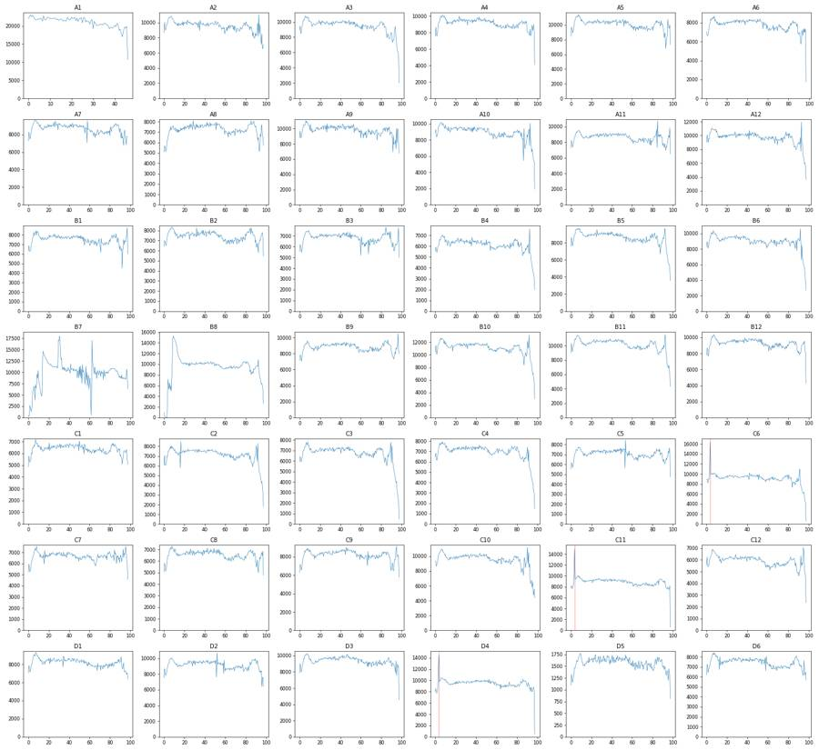
21
tool call · Bash
cd /task/work; cat > qc3.py <<'EOF'
import numpy as np, pandas as pd
names=['Time', 'FSC-A', 'SSC-A', 'BL1-A', 'RL3-A', 'VL1-A', 'FSC-H', 'SSC-H', 'BL1-H', 'RL3-H', 'VL1-H', 'FSC-W', 'SSC-W', 'BL1-W', 'RL3-W', 'VL1-W']
np.set_printoptions(linewidth=250,suppress=True)
for w in ['C6','C11','D4']:
ev=np.load(f'npy_{w}.npy'); T=ev[:,0]
i=np.where(np.diff(T)<0)[0][0]
print(w,'idx',i,'of',len(T),'T before',T[i-3:i+1],'after',T[i+1:i+5])
# find the block: events from where?
# region after i: time restarts at T[i+1]; find how long the pre-block is
print(' T[0:5]',T[:5],' T at i',T[i])
# block candidates: events between index j..i where time range overlaps subsequent
t_lo=T[i+1]; j=np.searchsorted(T[:i+1],t_lo)
print(' overlap starts idx',j,'n overlap events',i+1-j,'time range',T[j],T[i], ' later events in same range:',((T[i+1:]>=T[j])&(T[i+1:]<=T[i])).sum())
a=ev[j:i+1]; k=i+1+((T[i+1:]<=T[i]).sum()); b=ev[i+1:k]; rest=ev[k:]
for nm,x in [('blockA',a),('blockB',b),('rest',rest),('pre',ev[:j])]:
print(' ',nm,len(x),'T',x[:,0].min() if len(x) else None,x[:,0].max() if len(x) else None,'med',np.round(np.median(x,axis=0)[1:8]) if len(x) else None, 'BL1>1e4 %',100*(x[:,3]>1e4).mean() if len(x) else None, 'RL3>3e4 %', 100*(x[:,4]>3e4).mean() if len(x) else None)
# exact duplicates?
v=ev[:,1:].copy().view([('',ev.dtype)]*15).ravel()
u,c=np.unique(v,return_counts=True); print(' dup rows within file:',(c>1).sum(), (c[c>1]-1).sum())
EOF
python3 -I qc3.py22
tool output
C6 idx 4442 of 891011 T before [3894. 3894. 3894. 3894.] after [14. 14. 14. 14.] T[0:5] [3350. 3350. 3350. 3350. 3350.] T at i 3894.0 overlap starts idx 0 n overlap events 4443 time range 3350.0 3894.0 later events in same range: 5215 blockA 4443 T 3350.0 3894.0 med [98137. 99470. 87. 3301. 1506. 83443. 83518.] BL1>1e4 % 0.0675219446320054 RL3>3e4 % 4.29889714157101 blockB 34737 T 14.0 3894.0 med [102988. 108493. 90. 3657. 1717. 86568. 90301.] BL1>1e4 % 0.020151423554135357 RL3>3e4 % 4.603160894723206 rest 851831 T 3895.0 97567.0 med [107055. 120552. 97. 4066. 2025. 88148. 98538.] BL1>1e4 % 0.056583993773412805 RL3>3e4 % 5.75677569846601 pre 0 T None None med None BL1>1e4 % None RL3>3e4 % None dup rows within file: 0 0 C11 idx 4102 of 868685 T before [3896. 3896. 3896. 3896.] after [14. 14. 14. 14.] T[0:5] [3345. 3345. 3346. 3346. 3346.] T at i 3896.0 overlap starts idx 0 n overlap events 4103 time range 3345.0 3896.0 later events in same range: 4963 blockA 4103 T 3345.0 3896.0 med [101429. 102487. 85. 3421. 1664. 86368. 85628.] BL1>1e4 % 0.04874482086278333 RL3>3e4 % 4.265171825493541 blockB 31919 T 14.0 3896.0 med [105815. 110602. 86. 3762. 1808. 88550. 91593.] BL1>1e4 % 0.021930511607506503 RL3>3e4 % 5.078479902252577 rest 832663 T 3897.0 97535.0 med [111220. 125566. 95. 4318. 2203. 91084. 101435.] BL1>1e4 % 0.045396516958241206 RL3>3e4 % 6.543823851906473 pre 0 T None None med None BL1>1e4 % None RL3>3e4 % None dup rows within file: 0 0 D4 idx 4083 of 925805 T before [3836. 3836. 3836. 3836.] after [14. 14. 14. 14.] T[0:5] [3292. 3293. 3293. 3293. 3293.] T at i 3836.0 overlap starts idx 0 n overlap events 4084 time range 3292.0 3836.0 later events in same range: 5042 blockA 4084 T 3292.0 3836.0 med [102307. 102952. 89. 3501. 1398. 85618. 85572.] BL1>1e4 % 0.024485798237022526 RL3>3e4 % 4.407443682664055 blockB 32327 T 14.0 3836.0 med [104352. 107884. 91. 3764. 1545. 87067. 89034.] BL1>1e4 % 0.03402728369474433 RL3>3e4 % 5.147400006186778 rest 889394 T 3837.0 97528.0 med [112282. 127120. 102. 4606. 1963. 91526. 102328.] BL1>1e4 % 0.050258940357142054 RL3>3e4 % 7.113157947996052 pre 0 T None None med None BL1>1e4 % None RL3>3e4 % None dup rows within file: 0 0
24
tool call · Bash
cd /task/work; cat > p1.py <<'EOF'
import numpy as np, pandas as pd, matplotlib; matplotlib.use('Agg'); import matplotlib.pyplot as plt
from matplotlib.colors import LogNorm
lay=pd.read_csv('/task/inputs/plate_layout.csv')
fig,axs=plt.subplots(7,6,figsize=(24,26))
for ax,w in zip(axs.ravel(),lay.well):
ev=np.load(f'npy_{w}.npy',mmap_mode='r')
ax.hist2d(np.asarray(ev[:,1]),np.asarray(ev[:,2]),bins=200,range=[[0,1.05e6],[0,1.05e6]],norm=LogNorm(),cmap='viridis'); ax.set_title(w)
plt.tight_layout(); plt.savefig('fsc_ssc.png',dpi=55)
# pooled, large
fig,axs=plt.subplots(1,2,figsize=(20,10))
H=0
for w in lay.well:
ev=np.load(f'npy_{w}.npy',mmap_mode='r')
h,xe,ye=np.histogram2d(np.asarray(ev[:,1]),np.asarray(ev[:,2]),bins=300,range=[[0,1.05e6],[0,1.05e6]]); H=H+h
axs[0].pcolormesh(xe,ye,H.T,norm=LogNorm(),cmap='viridis'); axs[0].set_title('pooled FSC-A vs SSC-A (log density)')
axs[1].pcolormesh(xe,ye,H.T,cmap='viridis'); axs[1].set_title('linear density')
for a in axs: a.grid(alpha=0.3); a.set_xticks(np.arange(0,1.05e6,1e5)); a.set_yticks(np.arange(0,1.05e6,1e5))
plt.tight_layout(); plt.savefig('fsc_ssc_pool.png',dpi=60)
EOF
python3 -I p1.py25
tool output
(Bash completed with no output)
26
tool call · Read
{
"file_path": "/task/work/fsc_ssc_pool.png"
}27
tool output
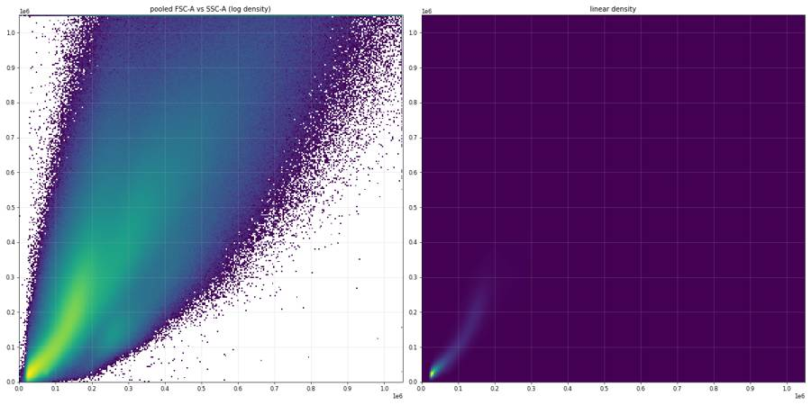
28
tool call · Read
{
"file_path": "/task/work/fsc_ssc.png"
}29
tool output
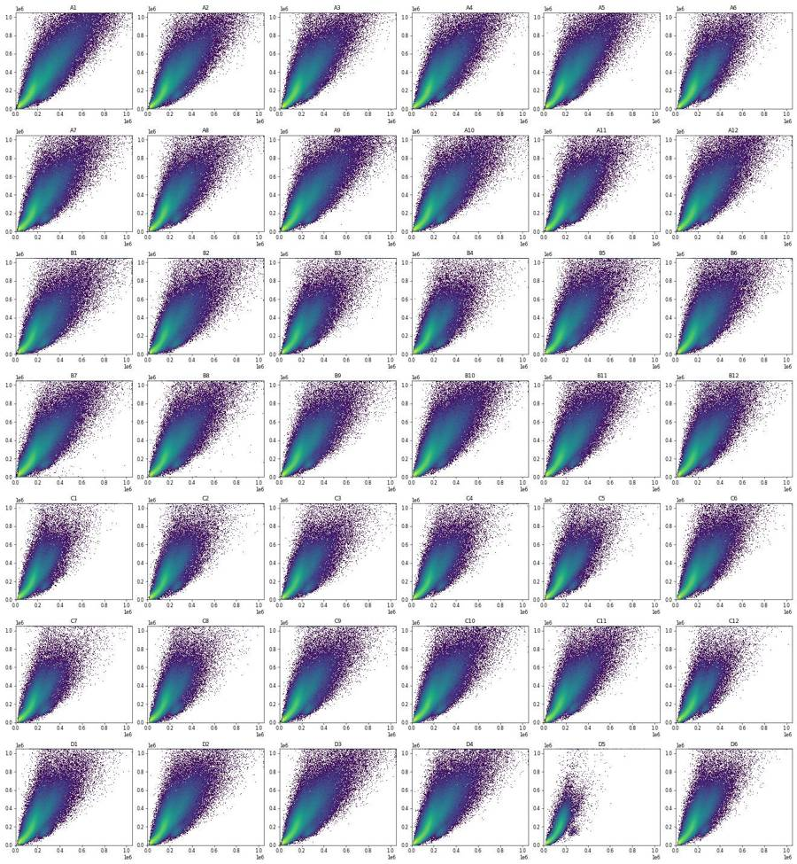
31
tool call · Bash
cd /task/work; cat > p2.py <<'EOF'
import numpy as np, pandas as pd, matplotlib; matplotlib.use('Agg'); import matplotlib.pyplot as plt
from matplotlib.colors import LogNorm
lay=pd.read_csv('/task/inputs/plate_layout.csv')
ws=['A3','A9','B4','B9','C1','C8','D2','D5']
fig,axs=plt.subplots(3,8,figsize=(40,15))
for k,w in enumerate(ws):
ev=np.load(f'npy_{w}.npy',mmap_mode='r'); f=np.asarray(ev[:,1]); s=np.asarray(ev[:,2])
ax=axs[0,k]; h,xe,ye=np.histogram2d(f,s,bins=250,range=[[0,5e5],[0,5e5]])
ax.pcolormesh(xe,ye,h.T,cmap='viridis',vmax=np.percentile(h,99.7)); ax.set_title(w+' linear zoom'); ax.grid(alpha=.3)
ax.contour((xe[:-1]+xe[1:])/2,(ye[:-1]+ye[1:])/2,h.T,levels=np.percentile(h[h>0],[50,70,85,93,97,99]),colors='w',linewidths=.5)
ax=axs[1,k]; m=(f>1e3)&(s>1e3)
h,xe,ye=np.histogram2d(np.log10(f[m]),np.log10(s[m]),bins=250,range=[[4,6.05],[3.5,6.05]])
ax.pcolormesh(xe,ye,h.T,cmap='viridis'); ax.set_title(w+' log10 axes'); ax.grid(alpha=.3)
ax=axs[2,k]; ax.hist(f,bins=300,range=(0,6e5),histtype='step'); ax.hist(s,bins=300,range=(0,6e5),histtype='step'); ax.set_title('FSC-A (blue) SSC-A (orange)'); ax.grid(alpha=.3)
plt.tight_layout(); plt.savefig('scat_zoom.png',dpi=45)
EOF
python3 -I p2.py32
tool output
(Bash completed with no output)
33
agent
Looking at zoomed scatter plots to find where debris ends and the cell cloud begins, so I can place the Cells polygon.
34
tool call · Read
{
"file_path": "/task/work/scat_zoom.png"
}35
tool output
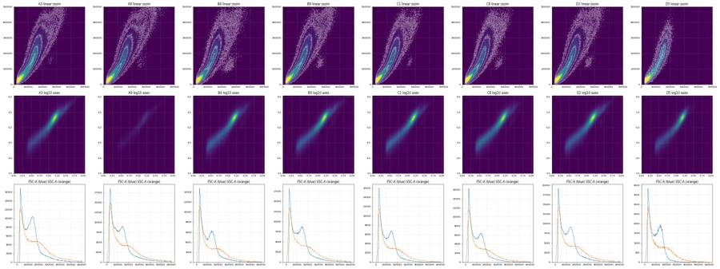
37
tool call · Bash
cd /task/work; cat > p3.py <<'EOF'
import numpy as np, pandas as pd, matplotlib; matplotlib.use('Agg'); import matplotlib.pyplot as plt
from matplotlib.colors import LogNorm
from scipy.ndimage import gaussian_filter1d, gaussian_filter
lay=pd.read_csv('/task/inputs/plate_layout.csv')
H=0; rows=[]
for w in lay.well:
ev=np.load(f'npy_{w}.npy',mmap_mode='r'); f=np.asarray(ev[:,1]); s=np.asarray(ev[:,2])
h,xe,ye=np.histogram2d(f,s,bins=300,range=[[0,6e5],[0,6e5]]); H=H+h
hf,e=np.histogram(f,bins=300,range=(0,6e5)); hs=gaussian_filter1d(hf.astype(float),3); c=(e[:-1]+e[1:])/2
# valley between 50k and 140k, peak
m=(c>50e3)&(c<140e3); iv=np.argmin(np.where(m,hs,np.inf)); mp=(c>100e3)&(c<250e3); ip=np.argmax(np.where(mp,hs,-np.inf))
rows.append((w,c[iv],c[ip],hs[iv]/hs[ip], 100*(f>c[iv]).mean()))
print(pd.DataFrame(rows,columns=['well','fsc_valley','fsc_peak','valley/peak','pct_above']).round(2).to_string())
fig,axs=plt.subplots(1,2,figsize=(24,12))
Hs=gaussian_filter(H,1.0)
axs[0].pcolormesh(xe,ye,Hs.T,cmap='viridis',vmax=np.percentile(Hs,99.5))
axs[0].contour((xe[:-1]+xe[1:])/2,(ye[:-1]+ye[1:])/2,Hs.T,levels=np.percentile(Hs[Hs>0],[40,55,70,80,88,93,96,98,99]),colors='w',linewidths=.6)
axs[1].pcolormesh(xe,ye,Hs.T,cmap='viridis',norm=LogNorm(vmin=10))
for a in axs: a.grid(alpha=.4); a.set_xticks(np.arange(0,6.01e5,5e4)); a.set_yticks(np.arange(0,6.01e5,5e4)); a.tick_params(labelsize=7)
plt.tight_layout(); plt.savefig('pool_zoom.png',dpi=55)
EOF
python3 -I p3.py38
tool output
well fsc_valley fsc_peak valley/peak pct_above 0 A1 77000.0 139000.0 0.75 71.22 1 A2 79000.0 143000.0 0.69 67.72 2 A3 77000.0 141000.0 0.73 68.87 3 A4 85000.0 143000.0 0.66 66.87 4 A5 81000.0 143000.0 0.69 67.29 5 A6 83000.0 143000.0 0.63 67.19 6 A7 99000.0 143000.0 0.79 57.88 7 A8 89000.0 143000.0 0.73 63.62 8 A9 107000.0 143000.0 0.88 53.60 9 A10 99000.0 141000.0 0.82 57.92 10 A11 87000.0 143000.0 0.84 60.70 11 A12 85000.0 143000.0 0.78 62.78 12 B1 107000.0 139000.0 0.87 49.31 13 B2 101000.0 141000.0 0.80 52.61 14 B3 97000.0 141000.0 0.78 53.84 15 B4 99000.0 143000.0 0.77 52.51 16 B5 97000.0 143000.0 0.80 56.01 17 B6 103000.0 139000.0 0.92 51.35 18 B7 105000.0 137000.0 0.93 51.51 19 B8 97000.0 145000.0 0.81 56.15 20 B9 93000.0 145000.0 0.84 59.18 21 B10 89000.0 143000.0 0.83 60.18 22 B11 91000.0 143000.0 0.78 59.00 23 B12 89000.0 143000.0 0.73 59.29 24 C1 97000.0 143000.0 0.78 51.96 25 C2 97000.0 141000.0 0.80 52.08 26 C3 99000.0 143000.0 0.80 51.32 27 C4 91000.0 143000.0 0.81 56.20 28 C5 89000.0 141000.0 0.76 57.15 29 C6 93000.0 143000.0 0.80 55.53 30 C7 103000.0 141000.0 0.88 46.69 31 C8 99000.0 141000.0 0.84 50.77 32 C9 97000.0 141000.0 0.90 54.36 33 C10 83000.0 141000.0 0.84 62.04 34 C11 85000.0 143000.0 0.82 61.09 35 C12 79000.0 141000.0 0.84 62.28 36 D1 103000.0 139000.0 0.90 50.60 37 D2 99000.0 141000.0 0.81 55.02 38 D3 107000.0 139000.0 0.92 50.43 39 D4 95000.0 141000.0 0.87 57.41 40 D5 91000.0 143000.0 0.75 53.83 41 D6 93000.0 143000.0 0.76 56.31
39
tool call · Read
{
"file_path": "/task/work/pool_zoom.png"
}40
tool output
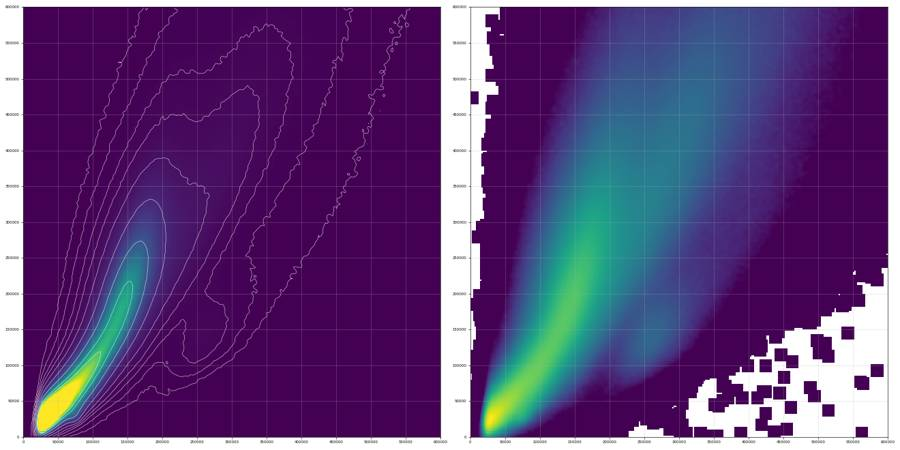
42
tool call · Bash
cd /task/work; cat > common.py <<'EOF'
import numpy as np, pandas as pd
from matplotlib.path import Path
names=['Time', 'FSC-A', 'SSC-A', 'BL1-A', 'RL3-A', 'VL1-A', 'FSC-H', 'SSC-H', 'BL1-H', 'RL3-H', 'VL1-H', 'FSC-W', 'SSC-W', 'BL1-W', 'RL3-W', 'VL1-W']
ix={n:i for i,n in enumerate(names)}
lay=pd.read_csv('/task/inputs/plate_layout.csv')
def load(w):
ev=np.load(f'/task/work/npy_{w}.npy'); return {n:ev[:,i] for i,n in enumerate(names)}
CELLS=[(95e3,50e3),(95e3,180e3),(130e3,450e3),(220e3,1.0e6),(1.0e6,1.0e6),(1.0e6,650e3),(600e3,300e3),(350e3,110e3),(180e3,50e3)]
def inpoly(x,y,poly):
return Path(poly).contains_points(np.column_stack([x,y]))
def al(x,c=150.): return np.arcsinh(x/c)
EOF
cat > p4.py <<'EOF'
from common import *
import matplotlib; matplotlib.use('Agg'); import matplotlib.pyplot as plt
from matplotlib.colors import LogNorm
ws=['A3','A9','B4','B9','C1','C8','D2','D5']
fig,axs=plt.subplots(3,8,figsize=(40,15))
for k,w in enumerate(ws):
d=load(w); c=inpoly(d['FSC-A'],d['SSC-A'],CELLS)
print(w,'cells %',100*c.mean())
ax=axs[0,k]; ax.hist2d(d['SSC-H'][c],d['SSC-A'][c],bins=250,range=[[0,1.05e6],[0,1.05e6]],norm=LogNorm()); ax.set_title(w+' Cells: SSC-H vs SSC-A'); ax.grid(alpha=.3)
ax=axs[1,k]; r=d['SSC-A'][c]/np.maximum(d['SSC-H'][c],1); ax.hist2d(d['SSC-A'][c],r,bins=250,range=[[0,1.05e6],[0.5,3]],norm=LogNorm()); ax.set_title('SSC-A/SSC-H vs SSC-A'); ax.grid(alpha=.3)
ax=axs[2,k]; ax.hist(r,bins=300,range=(0.6,3),histtype='step'); ax.set_yscale('log'); ax.set_title('ratio A/H'); ax.grid(alpha=.3)
plt.tight_layout(); plt.savefig('singlets.png',dpi=45)
EOF
python3 -I p4.py43
tool output (error)
Exit code 1
Traceback (most recent call last):
File "/task/work/p4.py", line 1, in <module>
from common import *
ModuleNotFoundError: No module named 'common'45
tool call · Bash
cd /task/work; python3 p4.py
46
tool output
A3 cells % 60.53525720642396 A9 cells % 56.950017784852314 B4 cells % 53.173456901566674 B9 cells % 57.620378855545376 C1 cells % 52.230606449630066 C8 cells % 51.70487773604496 D2 cells % 55.89850557405563 D5 cells % 51.54149939619439
47
tool call · Read
{
"file_path": "/task/work/singlets.png"
}48
tool output
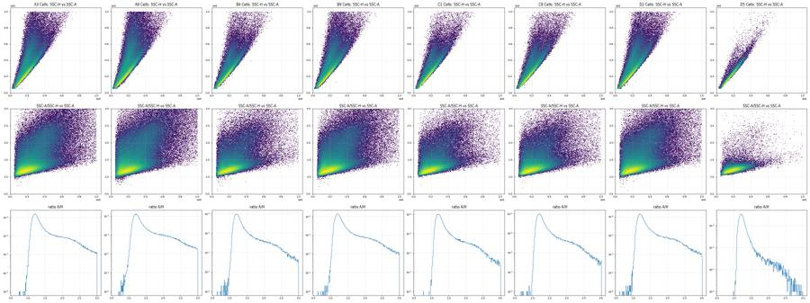
50
tool call · Bash
cd /task/work; cat > p5.py <<'EOF'
from common import *
import matplotlib; matplotlib.use('Agg'); import matplotlib.pyplot as plt
from matplotlib.colors import LogNorm
ws=['A3','A9','B4','C1','D2','D5']
fig,axs=plt.subplots(2,6,figsize=(36,12))
for k,w in enumerate(ws):
d=load(w); c=inpoly(d['FSC-A'],d['SSC-A'],CELLS)
h_,a_=d['SSC-H'][c],d['SSC-A'][c]; r=a_/np.maximum(h_,1)
H,xe,ye=np.histogram2d(h_,r,bins=[60,150],range=[[0,7e5],[0.9,2.4]])
Hn=H/np.maximum(H.max(axis=1,keepdims=True),1)
ax=axs[0,k]; ax.pcolormesh(xe,ye,Hn.T,cmap='viridis'); ax.set_title(w+' ratio A/H vs SSC-H, column-normalised'); ax.grid(alpha=.3)
ax.set_yticks(np.arange(0.9,2.41,0.1))
ax=axs[1,k]
for lo,hi in [(5e4,1e5),(1e5,1.5e5),(1.5e5,2.5e5),(2.5e5,4e5),(4e5,7e5)]:
m=(h_>=lo)&(h_<hi); hh,e=np.histogram(r[m],bins=150,range=(0.9,2.4)); ax.plot((e[:-1]+e[1:])/2,hh/hh.max(),label=f'{lo:.0f}-{hi:.0f} n={m.sum()}')
ax.legend(fontsize=7); ax.grid(alpha=.3); ax.set_xticks(np.arange(0.9,2.41,0.1)); ax.set_yscale('log'); ax.set_ylim(1e-3,1.5)
plt.tight_layout(); plt.savefig('singlets2.png',dpi=45)
EOF
python3 p5.py51
tool output
(Bash completed with no output)
52
agent
Checking the SSC area/height ratio by signal level to place the upper edge of the Singlets polygon.
53
tool call · Read
{
"file_path": "/task/work/singlets2.png"
}54
tool output
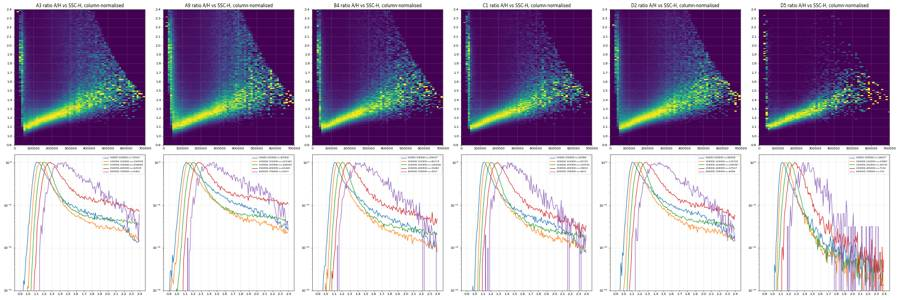
56
tool call · Bash
cd /task/work; cat >> common.py <<'EOF'
_H=np.array([20e3,100e3,200e3,300e3,400e3,500e3,600e3,640e3])
_up=[(h,(1.32+0.6e-6*h)*h) for h in _H]
SING=[(20e3,15e3)]+_up+[(1.0e6,1.0e6*1.08),(1.0e6,0.9e6)]
# make closed sensible polygon: lower edge A=0.9H from H=20k..1.0e6 ; upper edge ridge+0.22 up to A~1.05e6
SING=[(20e3,18e3)]+_up+[(1.06e6,1.075e6),(1.06e6,0.954e6)]
def gates(d):
c=inpoly(d['FSC-A'],d['SSC-A'],CELLS)
s=c&inpoly(d['SSC-H'],d['SSC-A'],SING)
return c,s
EOF
cat > p6.py <<'EOF'
from common import *
import matplotlib; matplotlib.use('Agg'); import matplotlib.pyplot as plt
from matplotlib.colors import LogNorm
print(SING)
fig,axs=plt.subplots(7,6,figsize=(30,24)); fig2,axs2=plt.subplots(7,6,figsize=(30,24)); fig3,axs3=plt.subplots(7,6,figsize=(30,28))
ticks=[-1e3,0,1e3,1e4,1e5,1e6]
for k,w in enumerate(lay.well):
d=load(w); c,s=gates(d)
print(w,len(c),c.sum(),s.sum(),round(100*s.sum()/c.sum(),1))
for axx,ch in [(axs,'RL3-A'),(axs2,'BL1-A')]:
ax=axx.ravel()[k]; x=al(d[ch][s]); ax.hist(x,bins=300,range=(al(-2e3),al(1.05e6)),histtype='step'); ax.set_yscale('log'); ax.set_title(f'{w} Singlets {ch} dose {lay.dose_vg_per_cell[k]}')
ax.set_xticks(al(np.array(ticks))); ax.set_xticklabels(['-1e3','0','1e3','1e4','1e5','1e6']); ax.grid(alpha=.3)
ax=axs3.ravel()[k]; ax.hist2d(al(d['RL3-A'][s]),d['SSC-A'][s],bins=200,range=[[al(-2e3),al(1.05e6)],[0,1.05e6]],norm=LogNorm()); ax.set_title(w)
ax.set_xticks(al(np.array(ticks))); ax.set_xticklabels(['-1e3','0','1e3','1e4','1e5','1e6']); ax.grid(alpha=.3)
fig.tight_layout(); fig.savefig('rl3_hist.png',dpi=45); fig2.tight_layout(); fig2.savefig('bl1_hist.png',dpi=45); fig3.tight_layout(); fig3.savefig('rl3_ssc.png',dpi=45)
EOF
python3 p6.py57
tool output
[(20000.0, 18000.0), (20000.0, 26640.0), (100000.0, 138000.0), (200000.0, 288000.0), (300000.0, 450000.0), (400000.0, 624000.0), (500000.0, 810000.0), (600000.0, 1008000.0000000001), (640000.0, 1090560.0), (1060000.0, 1075000.0), (1060000.0, 954000.0)] A1 978726 614650 360519 58.7 A2 935707 567445 402289 70.9 A3 925910 560502 406463 72.5 A4 892332 554607 400507 72.2 A5 986514 599546 424167 70.7 A6 755396 467274 356562 76.3 A7 848859 496689 352387 70.9 A8 710140 428041 322410 75.3 A9 958681 545969 361694 66.2 A10 870505 509363 357152 70.1 A11 844586 476779 349911 73.4 A12 947510 548096 389940 71.1 B1 733754 388921 268939 69.2 B2 728886 391413 273537 69.9 B3 667298 358791 266230 74.2 B4 598212 318090 245658 77.2 B5 837561 467828 339789 72.6 B6 877336 472644 333585 70.6 B7 954909 525143 362565 69.0 B8 918778 516074 365920 70.9 B9 862070 496728 357305 71.9 B10 1083648 614613 421360 68.6 B11 988574 558937 399449 71.5 B12 904103 508947 369265 72.6 C1 624718 326294 259967 79.7 C2 695572 363713 279369 76.8 C3 656321 341862 254709 74.5 C4 679504 366553 280605 76.6 C5 689593 373317 290985 77.9 C6 891011 480982 349894 72.7 C7 649735 321490 246662 76.7 C8 639518 330662 256338 77.5 C9 801299 436863 317002 72.6 C10 927162 520340 369667 71.0 C11 868685 488116 354237 72.6 C12 578214 314586 249987 79.5 D1 800840 427996 316515 74.0 D2 894591 500063 364838 73.0 D3 915097 500945 347649 69.4 D4 925805 523308 371143 70.9 D5 153195 78959 73387 92.9 D6 726651 398872 312638 78.4
58
tool call · Read
{
"file_path": "/task/work/rl3_hist.png"
}59
tool output
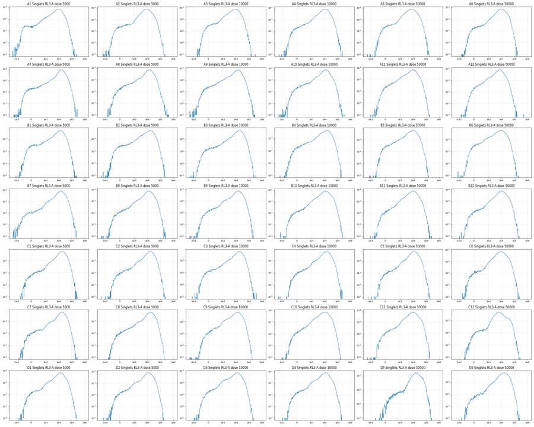
60
tool call · Read
{
"file_path": "/task/work/rl3_ssc.png"
}61
tool output
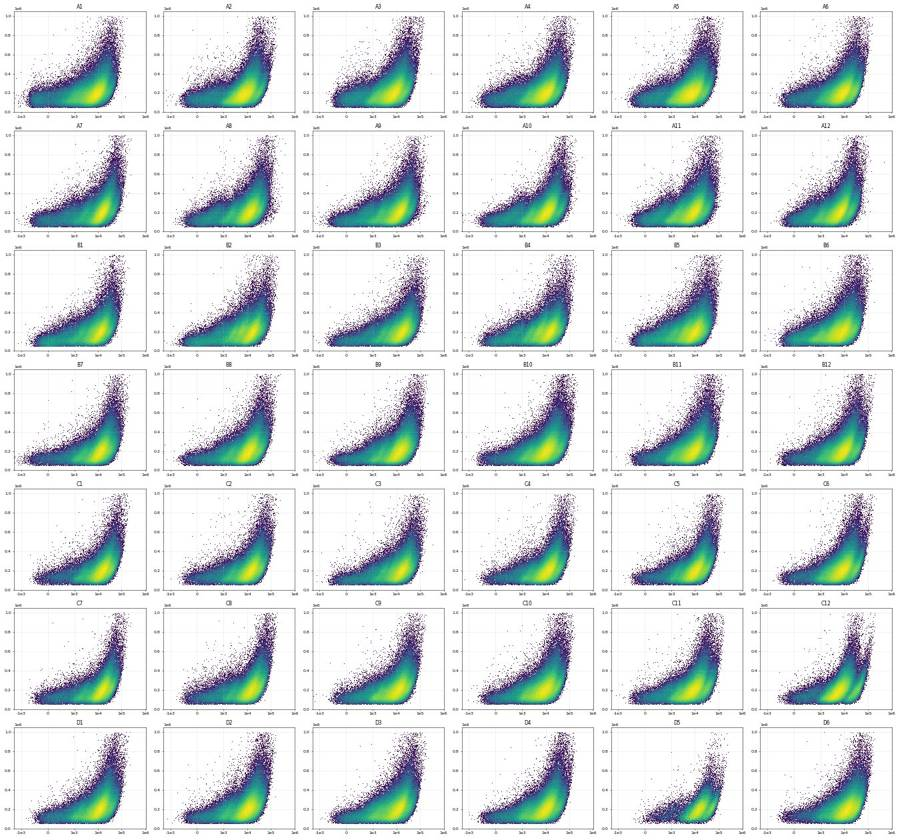
63
tool call · Bash
cd /task/work; cat > p7.py <<'EOF'
from common import *
import matplotlib; matplotlib.use('Agg'); import matplotlib.pyplot as plt
from matplotlib.colors import LogNorm
fig,axs=plt.subplots(7,6,figsize=(30,24))
for k,w in enumerate(lay.well):
d=load(w); c,s=gates(d)
ax=axs.ravel()[k]; x=d['RL3-A'][s]; ax.hist(np.log10(x[x>100]),bins=200,range=(2,6),histtype='step'); ax.set_title(f'{w} Singlets log10 RL3-A (<=100: {100*(x<=100).mean():.1f}%)'); ax.grid(alpha=.3); ax.set_xticks(np.arange(2,6.01,0.25)); ax.tick_params(labelsize=6)
fig.tight_layout(); fig.savefig('rl3_log.png',dpi=45)
ws=['A3','B4','C1','C12','D5','D6']
fig,axs=plt.subplots(2,6,figsize=(36,12))
for k,w in enumerate(ws):
d=load(w); c,s=gates(d); x=d['RL3-A'][s]; y=d['SSC-A'][s]; m=x>100
axs[0,k].hist2d(np.log10(x[m]),y[m],bins=200,range=[[2,6],[0,1.05e6]],cmap='viridis'); axs[0,k].set_title(w+' linear density'); axs[0,k].grid(alpha=.3)
axs[1,k].hist2d(np.log10(x[m]),np.log10(y[m]),bins=200,range=[[2,6],[4.5,6.05]],norm=LogNorm()); axs[1,k].grid(alpha=.3)
fig.tight_layout(); fig.savefig('rl3_ssc2.png',dpi=45)
EOF
python3 p7.py64
tool output
(Bash completed with no output)
65
agent
Looking for the live/dead valley in the Zombie NIR signal — the first histograms didn't show an obvious one, so I'm re-plotting on a finer log scale.
66
tool call · Read
{
"file_path": "/task/work/rl3_log.png"
}67
tool output
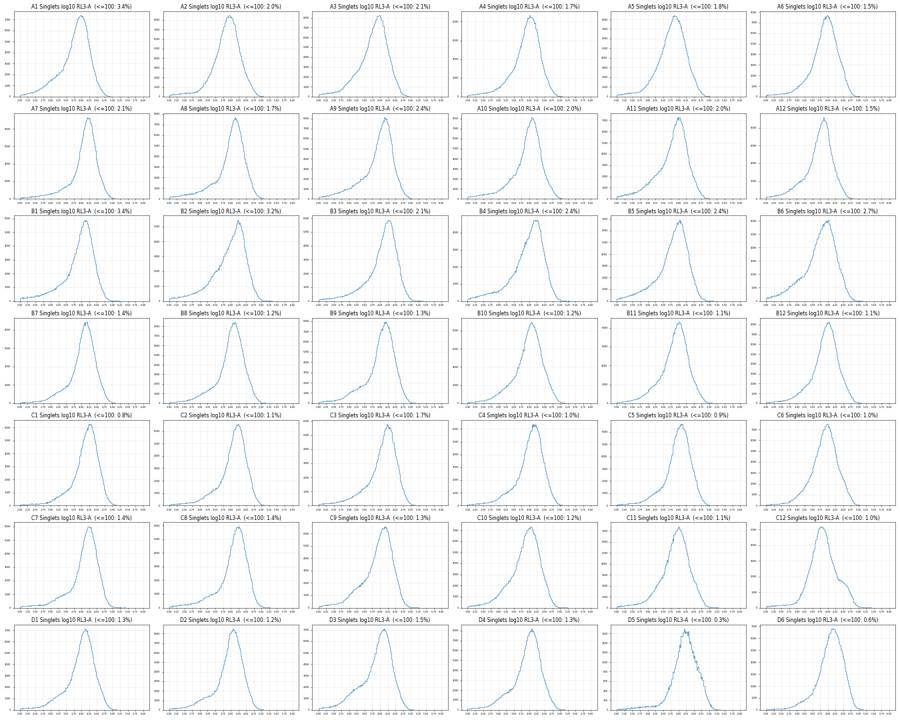
68
tool call · Read
{
"file_path": "/task/work/rl3_ssc2.png"
}69
tool output
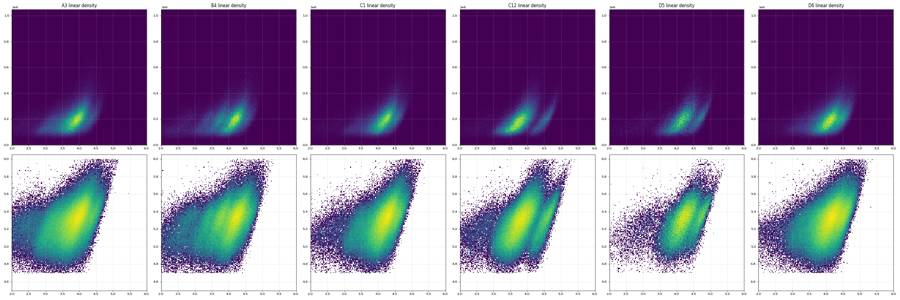
71
tool call · Bash
cd /task/work; cat > p8.py <<'EOF'
from common import *
import matplotlib; matplotlib.use('Agg'); import matplotlib.pyplot as plt
from matplotlib.colors import LogNorm, PowerNorm
for part,wl in enumerate([lay.well[:21],lay.well[21:]]):
fig,axs=plt.subplots(3,7,figsize=(42,18))
for k,w in enumerate(wl):
d=load(w); c,s=gates(d); x=d['RL3-A'][s]; y=d['SSC-A'][s]; m=x>300
ax=axs.ravel()[k]; ax.hist2d(np.log10(x[m]),y[m],bins=[220,150],range=[[2.5,5.8],[0,8e5]],norm=PowerNorm(0.4),cmap='viridis'); ax.set_title(w,fontsize=20); ax.grid(alpha=.3); ax.set_xticks(np.arange(2.5,5.8,0.25)); ax.tick_params(labelsize=7)
fig.tight_layout(); fig.savefig(f'rl3_ssc3_{part}.png',dpi=42)
EOF
python3 p8.py72
tool output
(Bash completed with no output)
73
tool call · Read
{
"file_path": "/task/work/rl3_ssc3_0.png"
}74
tool output
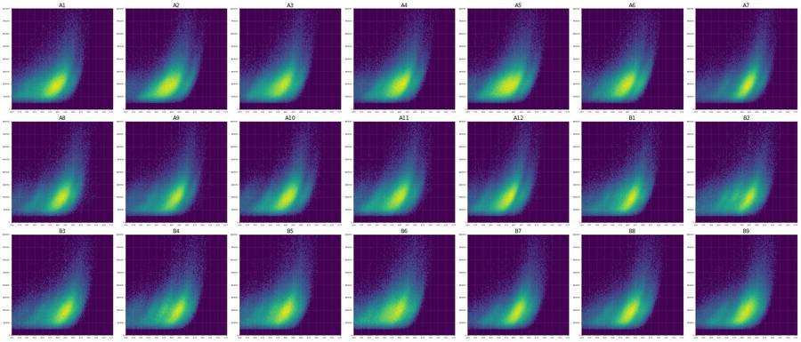
75
tool call · Read
{
"file_path": "/task/work/rl3_ssc3_1.png"
}76
tool output
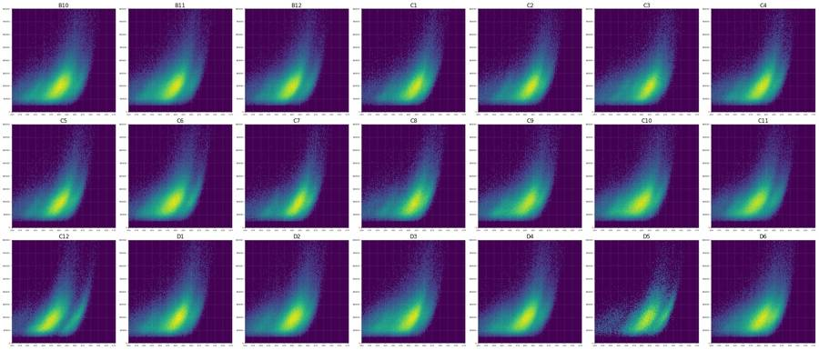
78
tool call · Bash
cd /task/work; cat > p9.py <<'EOF'
from common import *
import matplotlib; matplotlib.use('Agg'); import matplotlib.pyplot as plt
from matplotlib.colors import LogNorm, PowerNorm
ws=['A5','A6','A12','B12','C12','D5','C1']
fig,axs=plt.subplots(4,7,figsize=(42,24))
tk=[-1e3,0,1e3,1e4,1e5,1e6]
for k,w in enumerate(ws):
d=load(w); c,s=gates(d); x=d['RL3-A'][s]
for r,(ch,tr) in enumerate([('BL1-A','al'),('VL1-A','al'),('FSC-A','lin')]):
y=d[ch][s]; ax=axs[r,k]
if tr=='al':
ax.hist2d(al(x),al(y),bins=200,range=[[al(-1e3),al(1e6)],[al(-1e3),al(1e6)]],norm=LogNorm()); ax.set_yticks(al(np.array(tk))); ax.set_yticklabels(tk)
else:
ax.hist2d(al(x),y,bins=200,range=[[al(-1e3),al(1e6)],[0,1.05e6]],norm=LogNorm())
ax.set_xticks(al(np.array(tk))); ax.set_xticklabels(tk); ax.set_title(f'{w} Singlets RL3-A vs {ch}',fontsize=16); ax.grid(alpha=.3)
ax=axs[3,k]; g=d['BL1-A'][s]
for lo,hi,lab in [(-1e9,1e3,'BL1<1e3'),(3e3,3e4,'3e3-3e4'),(3e4,2e6,'>3e4')]:
m=(g>=lo)&(g<hi)&(x>100); hh,e=np.histogram(np.log10(x[m]),bins=120,range=(2,6)); ax.plot((e[:-1]+e[1:])/2,hh/max(hh.max(),1),label=f'{lab} n={m.sum()}')
ax.legend(); ax.grid(alpha=.3); ax.set_title('log10 RL3 by GFP level')
fig.tight_layout(); fig.savefig('rl3_gfp.png',dpi=40)
EOF
python3 p9.py79
tool output
(Bash completed with no output)
80
tool call · Read
{
"file_path": "/task/work/rl3_gfp.png"
}81
tool output
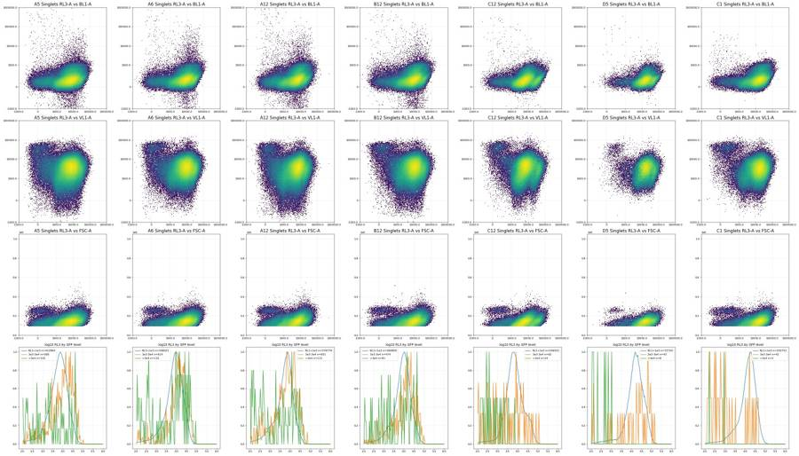
83
thinking
Most events are Zombie NIR-positive and so dead; the live cells are a small Zombie-negative, NCAM-bright, higher-FSC cluster. I'm zooming into that region to set the Live cut-off.
84
tool call · Bash
cd /task/work; cat > p10.py <<'EOF'
from common import *
import matplotlib; matplotlib.use('Agg'); import matplotlib.pyplot as plt
from matplotlib.colors import LogNorm, PowerNorm
tk=np.array([-1e3,-300,0,300,1e3,3e3,1e4,1e5]); C=100.
fig,axs=plt.subplots(7,6,figsize=(36,28))
for k,w in enumerate(lay.well):
d=load(w); c,s=gates(d); x=d['RL3-A'][s]
ax=axs.ravel()[k]
h,e=np.histogram(np.arcsinh(x/C),bins=160,range=(np.arcsinh(-15),np.arcsinh(1e6/C))); cc=(e[:-1]+e[1:])/2
ax.plot(cc,h,lw=1); ax.set_ylim(0,h[cc<np.arcsinh(30)].max()*4)
ax.set_xticks(np.arcsinh(tk/C)); ax.set_xticklabels(['-1e3','-300','0','300','1e3','3e3','1e4','1e5']); ax.grid(alpha=.4); ax.set_title(f'{w} Singlets RL3-A (asinh c=100), y zoom',fontsize=14)
fig.tight_layout(); fig.savefig('rl3_zoom.png',dpi=40)
ws=['A5','A9','B4','B9','C1','C12','D5','D2']
fig,axs=plt.subplots(3,8,figsize=(48,18))
for k,w in enumerate(ws):
d=load(w); c,s=gates(d); x=np.arcsinh(d['RL3-A'][s]/C)
for r,(ch,rng) in enumerate([('FSC-A',(0,6e5)),('SSC-A',(0,6e5))]):
ax=axs[r,k]; ax.hist2d(x,d[ch][s],bins=[160,150],range=[[np.arcsinh(-15),np.arcsinh(1e6/C)],rng],norm=PowerNorm(0.35)); ax.set_xticks(np.arcsinh(tk/C)); ax.set_xticklabels(['-1e3','-300','0','300','1e3','3e3','1e4','1e5']); ax.grid(alpha=.4); ax.set_title(f'{w} RL3 vs {ch}',fontsize=16)
ax=axs[2,k]; y=np.arcsinh(d['VL1-A'][s]/C); ax.hist2d(x,y,bins=[160,150],range=[[np.arcsinh(-15),np.arcsinh(1e6/C)],[np.arcsinh(-15),np.arcsinh(1e6/C)]],norm=PowerNorm(0.35)); ax.set_xticks(np.arcsinh(tk/C)); ax.set_xticklabels(['-1e3','-300','0','300','1e3','3e3','1e4','1e5']); ax.set_yticks(np.arcsinh(tk/C)); ax.set_yticklabels(['-1e3','-300','0','300','1e3','3e3','1e4','1e5']); ax.grid(alpha=.4); ax.set_title(f'{w} RL3 vs VL1 (NCAM)',fontsize=16)
fig.tight_layout(); fig.savefig('rl3_zoom2.png',dpi=38)
EOF
python3 p10.py85
tool output
(Bash completed with no output)
86
tool call · Read
{
"file_path": "/task/work/rl3_zoom.png"
}87
tool output
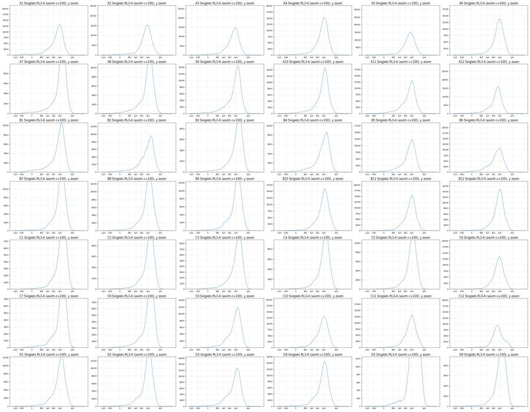
88
tool call · Read
{
"file_path": "/task/work/rl3_zoom2.png"
}89
tool output
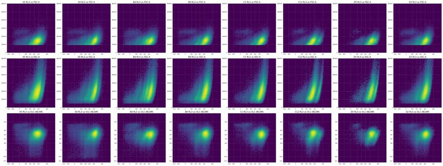
91
tool call · Bash
cd /task/work; cat > p11.py <<'EOF'
from common import *
import matplotlib; matplotlib.use('Agg'); import matplotlib.pyplot as plt
from scipy.ndimage import gaussian_filter1d
tk=np.array([-1e3,-300,0,300,1e3,3e3,1e4,1e5]); C=100.
fig,axs=plt.subplots(7,6,figsize=(36,28)); rows=[]
for k,w in enumerate(lay.well):
d=load(w); c,s=gates(d); x=d['RL3-A'][s]; f=d['FSC-A'][s]; g=d['BL1-A'][s]; v=d['VL1-A'][s]
ax=axs.ravel()[k]
for m,lab in [(f>200e3,'FSC>200k'),(v>2e4,'NCAM>2e4'),(np.ones(len(x),bool),'all singlets /10')]:
h,e=np.histogram(np.arcsinh(x[m]/C),bins=120,range=(np.arcsinh(-15),np.arcsinh(1e6/C))); cc=(e[:-1]+e[1:])/2
if lab.startswith('all'): h=h/10
ax.plot(cc,h,lw=1,label=lab)
if lab=='FSC>200k':
hs=gaussian_filter1d(h.astype(float),2); r=(cc>np.arcsinh(1))&(cc<np.arcsinh(50)); iv=np.argmin(np.where(r,hs,np.inf)); vall=C*np.sinh(cc[iv])
pl=hs[cc<cc[iv]].max(); ax.set_ylim(0,pl*4)
ax.set_xticks(np.arcsinh(tk/C)); ax.set_xticklabels(['-1e3','-300','0','300','1e3','3e3','1e4','1e5']); ax.grid(alpha=.4); ax.set_title(f'{w} RL3-A; valley(FSC>200k)={vall:.0f}',fontsize=14); ax.legend(fontsize=8)
row=dict(well=w,valley=vall,valley_over_livepk=hs[iv]/pl)
for lo,hi in [(-1e9,300),(300,1000),(1000,3000),(3000,1e4),(1e4,3e4),(3e4,1e9)]:
m=(x>=lo)&(x<hi); row[f'n_{hi:.0f}']=m.sum(); row[f'gfp1e4_{hi:.0f}']=100*(g[m]>1e4).mean(); row[f'ncam_{hi:.0f}']=np.median(v[m]); row[f'fsc_{hi:.0f}']=np.median(f[m])
rows.append(row)
fig.tight_layout(); fig.savefig('rl3_valley.png',dpi=40)
df=pd.DataFrame(rows); pd.set_option('display.width',300); pd.set_option('display.max_columns',50)
print(df[['well','valley','valley_over_livepk']+[c for c in df if c.startswith('n_')]].round(2).to_string())
print(df[['well']+[c for c in df if c.startswith('gfp')]].round(3).to_string())
print(df[['well']+[c for c in df if c.startswith('ncam') or c.startswith('fsc')]].round(0).to_string())
EOF
python3 p11.py92
tool output
well valley valley_over_livepk n_300 n_1000 n_3000 n_10000 n_30000 n_1000000000 0 A1 114.08 0.52 18785 24003 49915 143521 112366 11929 1 A2 1362.00 0.62 14440 11981 47252 172559 132280 23777 2 A3 975.35 0.64 16460 22256 61992 169352 121737 14666 3 A4 1218.64 0.82 12819 14947 43875 149533 154427 24906 4 A5 1090.29 0.82 14656 17569 68072 187343 119207 17320 5 A6 1090.29 0.62 10084 12191 38814 146337 127276 21860 6 A7 114.08 1.07 12002 11130 22190 75883 187455 43727 7 A8 1362.00 0.55 11997 13310 27342 86009 150453 33299 8 A9 114.08 1.02 15697 19455 37452 101859 157634 29597 9 A10 1522.12 0.59 14096 14850 35504 115411 148442 28849 10 A11 975.35 0.66 15194 22123 49747 131250 114625 16972 11 A12 780.21 0.71 14096 26831 61972 192718 87549 6774 12 B1 1218.64 0.62 15490 13388 26178 81520 113297 19066 13 B2 1090.29 0.68 14475 13130 29303 73518 110845 32266 14 B3 1522.12 0.65 9722 9173 20572 59043 123822 43898 15 B4 1362.00 0.61 11573 12353 23974 70582 100231 26945 16 B5 872.41 0.76 16582 21794 43440 128815 114896 14262 17 B6 872.41 0.58 17937 26830 50573 129229 95123 13893 18 B7 780.21 0.79 8072 9595 29664 99983 175843 39408 19 B8 872.41 0.84 8460 12887 32195 111050 163697 37631 20 B9 114.08 1.07 9256 13518 33648 93035 164865 42983 21 B10 114.08 1.01 9105 15732 44258 137420 170097 44748 22 B11 697.61 0.86 9007 17359 50440 157061 140440 25142 23 B12 396.56 0.79 7910 12390 39225 145334 137247 27159 24 C1 1700.97 0.47 4416 4810 16476 57292 132054 44919 25 C2 1218.64 0.52 6288 7275 21410 66788 137568 40040 26 C3 1522.12 0.74 7733 8399 19896 58387 120021 40273 27 C4 1218.64 0.61 5891 8086 24080 80705 130511 31332 28 C5 872.41 0.55 5558 8154 24964 99909 127474 24926 29 C6 1090.29 0.56 6365 10754 42091 146525 118970 25189 30 C7 1900.76 0.34 6580 6276 17925 51909 125832 38140 31 C8 1700.97 0.55 7114 8239 19270 56310 125998 39407 32 C9 1362.00 0.55 9006 13506 38185 96941 132520 26844 33 C10 975.35 0.69 9647 16799 49421 136801 132725 24274 34 C11 1090.29 0.58 8467 11822 42560 138320 124671 28397 35 C12 1218.64 0.42 5347 5684 36254 119193 60380 23129 36 D1 1218.64 0.51 8054 11206 30661 96937 138035 31622 37 D2 872.41 0.64 9047 15329 33508 119354 159587 28013 38 D3 780.21 0.75 10534 19740 45201 107015 138391 26768 39 D4 872.41 0.63 9352 15421 40901 125398 150305 29766 40 D5 1218.64 0.31 844 1486 2309 15615 35340 17793 41 D6 1090.29 0.64 3873 6025 20832 87598 146976 47334 well gfp1e4_300 gfp1e4_1000 gfp1e4_3000 gfp1e4_10000 gfp1e4_30000 gfp1e4_1000000000 0 A1 0.165 0.033 0.020 0.013 0.023 0.176 1 A2 0.409 0.150 0.023 0.015 0.024 0.097 2 A3 0.383 0.054 0.037 0.026 0.064 0.218 3 A4 0.491 0.207 0.062 0.025 0.048 0.213 4 A5 0.505 0.131 0.069 0.024 0.066 0.260 5 A6 0.526 0.197 0.044 0.040 0.090 0.270 6 A7 0.217 0.090 0.023 0.022 0.019 0.039 7 A8 0.567 0.143 0.073 0.024 0.038 0.096 8 A9 0.217 0.062 0.029 0.017 0.017 0.084 9 A10 0.312 0.141 0.042 0.020 0.015 0.114 10 A11 0.520 0.118 0.042 0.030 0.057 0.242 11 A12 0.674 0.183 0.055 0.040 0.103 0.384 12 B1 0.006 0.000 0.000 0.000 0.000 0.000 13 B2 0.000 0.000 0.000 0.000 0.000 0.000 14 B3 0.175 0.076 0.015 0.000 0.001 0.002 15 B4 0.009 0.008 0.000 0.000 0.000 0.000 16 B5 0.042 0.009 0.000 0.000 0.000 0.000 17 B6 0.017 0.004 0.000 0.000 0.000 0.000 18 B7 0.334 0.135 0.017 0.006 0.003 0.008 19 B8 0.615 0.093 0.022 0.005 0.005 0.008 20 B9 0.443 0.104 0.033 0.006 0.002 0.00 … [8,361 more characters not shown]
94
tool call · Read
{
"file_path": "/task/work/rl3_valley.png"
}95
tool output
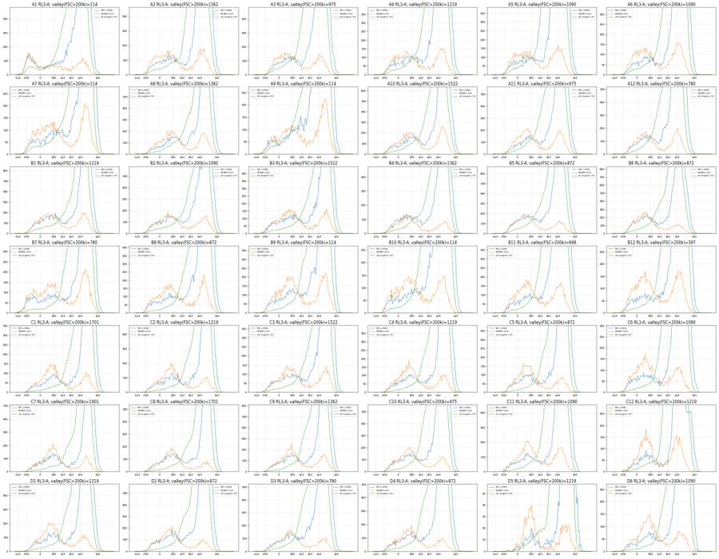
97
agent
Zombie NIR is clearly bimodal in the NCAM-bright subset (live peak near 300, dead peak near 1e4). Measuring that valley per well to fix one plate-wide Live cut-off.
98
tool call · Bash
cd /task/work; cat > p12.py <<'EOF'
from common import *
from scipy.ndimage import gaussian_filter1d
C=100.; rows=[]
for k,w in enumerate(lay.well):
d=load(w); c,s=gates(d); x=d['RL3-A'][s]; f=d['FSC-A'][s]; v=d['VL1-A'][s]
row=dict(well=w)
for lab,m in [('ncam2e4',v>2e4),('ncam1e4',v>1e4),('fsc200',f>200e3)]:
h,e=np.histogram(np.arcsinh(x[m]/C),bins=100,range=(np.arcsinh(-15),np.arcsinh(1e6/C))); cc=(e[:-1]+e[1:])/2
hs=gaussian_filter1d(h.astype(float),2.0)
r=(cc>np.arcsinh(4))&(cc<np.arcsinh(80)); iv=np.argmin(np.where(r,hs,np.inf))
row[lab+'_valley']=C*np.sinh(cc[iv]); row[lab+'_v/livepk']=hs[iv]/hs[cc<cc[iv]].max(); row[lab+'_v/deadpk']=hs[iv]/hs[cc>cc[iv]].max()
# flatness: range of cutoffs where hs within 20% of min
ok=r&(hs<=1.25*hs[iv]); row[lab+'_lo']=C*np.sinh(cc[ok].min()); row[lab+'_hi']=C*np.sinh(cc[ok].max())
for cut in [1000,1500,2000,3000]:
row[f'live%_{cut}']=100*(x<cut).mean()
rows.append(row)
df=pd.DataFrame(rows); pd.set_option('display.width',300); pd.set_option('display.max_columns',50)
print(df.round(2).to_string()); print(df.drop(columns='well').median().round(2))
EOF
python3 p12.py99
tool output
well ncam2e4_valley ncam2e4_v/livepk ncam2e4_v/deadpk ncam2e4_lo ncam2e4_hi ncam1e4_valley ncam1e4_v/livepk ncam1e4_v/deadpk ncam1e4_lo ncam1e4_hi fsc200_valley fsc200_v/livepk fsc200_v/deadpk fsc200_lo fsc200_hi live%_1000 live%_1500 live%_2000 live%_3000 0 A1 2347.06 0.27 0.38 1054.46 3499.39 410.39 0.62 0.14 410.39 1054.46 410.39 0.68 0.06 410.39 806.81 11.87 15.96 19.47 25.71 1 A2 1798.10 0.27 0.25 1205.16 3063.23 1205.16 0.54 0.08 616.64 1798.10 1205.16 0.62 0.05 616.64 1798.10 6.57 9.06 11.93 18.31 2 A3 1573.71 0.32 0.36 922.46 3063.23 806.81 0.74 0.15 410.39 1377.23 922.46 0.68 0.06 538.74 1205.16 9.53 13.77 17.64 24.78 3 A4 2054.37 0.32 0.27 1054.46 3997.60 1054.46 0.72 0.09 538.74 1573.71 1205.16 0.84 0.05 410.39 1798.10 6.93 9.64 12.49 17.89 4 A5 1377.23 0.33 0.28 922.46 2054.37 806.81 0.75 0.12 410.39 1205.16 922.46 0.84 0.06 410.39 1377.23 7.60 11.43 15.45 23.65 5 A6 1377.23 0.27 0.22 922.46 2054.37 806.81 0.66 0.09 410.39 1205.16 922.46 0.65 0.04 538.74 1377.23 6.25 8.91 11.65 17.13 6 A7 2681.37 0.30 0.19 1798.10 4566.69 1573.71 0.60 0.07 806.81 2681.37 1377.23 0.86 0.05 410.39 2347.06 6.56 8.26 9.83 12.86 7 A8 2681.37 0.22 0.24 1798.10 4566.69 1573.71 0.49 0.10 922.46 2681.37 1377.23 0.57 0.06 922.46 1798.10 7.85 10.22 12.44 16.33 8 A9 2347.06 0.43 0.23 1205.16 3997.60 1573.71 0.80 0.10 410.39 2681.37 410.39 1.03 0.06 410.39 1377.23 9.72 12.68 15.39 20.07 9 A10 2054.37 0.26 0.22 1377.23 3997.60 1573.71 0.50 0.09 922.46 2347.06 1573.71 0.60 0.06 922.46 2054.37 8.10 10.61 13.17 18.05 10 A11 2054.37 0.21 0.24 1205.16 3063.23 922.46 0.55 0.13 538.74 1573.71 922.46 0.69 0.07 470.39 1573.71 10.66 14.80 18.54 24.88 11 A12 1573.71 0.21 0.20 1054.46 2054.37 922.46 0.59 0.10 470.39 1377.23 806.81 0.75 0.05 470.39 1054.46 10.50 14.86 18.68 26.39 12 B1 2054.37 0.30 0.31 1205.16 3499.39 1205.16 0.53 0.13 538.74 2054.37 1205.16 0.64 0.09 705.47 2054.37 10.74 13.47 16.03 20.47 13 B2 2054.37 0.31 0.37 1054.46 3499.39 1205.16 0.57 0.17 538.74 2054.37 1054.46 0.70 0.10 470.39 1798.10 10.09 12.84 15.50 20.80 14 B3 3063.23 0.24 0.27 1798.10 4566.69 1798.10 0.50 0.11 806.81 2681.37 1573.71 0.66 0.07 806.81 2347.06 7.10 9.21 11.16 14.82 15 B4 3063.23 0.18 0.28 1573.71 4566.69 1377.23 0.38 0.12 922.46 2347.06 1205.16 0.63 0.09 806.81 2054.37 9.74 12.24 14.67 19.50 16 B5 2054.37 0.21 0.35 1205.16 3063.23 1054.46 0.50 0.16 616.64 1798.10 922.46 0.78 0.10 410.39 1573.71 11.29 14.95 18.15 24.08 17 B6 2347.06 0.21 0.49 1205.16 3499.39 1054.46 0.50 0.23 470.39 1798.10 922.46 0.60 0.11 538.74 1573.71 13.42 17.89 21.55 28.58 18 B7 2681.37 0.35 0.24 1573.71 4566.69 1054.46 0.76 0.09 410.39 2054.37 806.81 0.80 0.04 410.39 2054.37 4.87 7.15 9.30 13.05 19 B8 2681.37 0.32 0.27 1377.23 4566.69 1205.16 0.71 0.11 410.39 2054.37 922.46 0.86 0.05 410.39 1573.71 5.83 8.38 10.67 14.63 20 B9 2347.06 0.28 0.27 1377.23 5216.75 1573.71 0.64 0.12 … [6,543 more characters not shown]
101
tool call · Bash
cd /task/work; cat > p13.py <<'EOF'
from common import *
import matplotlib; matplotlib.use('Agg'); import matplotlib.pyplot as plt
from matplotlib.colors import LogNorm
tk=np.array([-300,0,300,1e3,3e3,1e4,1e5,1e6]); C=100.; LC=1500
fig,axs=plt.subplots(7,6,figsize=(36,28)); rows=[]
for k,w in enumerate(lay.well):
d=load(w); c,s=gates(d); L=s&(d['RL3-A']<LC); g=d['BL1-A'][L]
ax=axs.ravel()[k]; ax.hist(np.arcsinh(g/C),bins=150,range=(np.arcsinh(-5),np.arcsinh(1e6/C)),histtype='step'); ax.set_yscale('log')
ax.set_xticks(np.arcsinh(tk/C)); ax.set_xticklabels(['-300','0','300','1e3','3e3','1e4','1e5','1e6']); ax.grid(alpha=.4); ax.set_title(f'{w} Live BL1-A dose {lay.dose_vg_per_cell[k]} n={L.sum()}',fontsize=14)
row=dict(well=w,dose=lay.dose_vg_per_cell[k],nlive=L.sum(),med=np.median(g),p99=np.percentile(g,99),p999=np.percentile(g,99.9),mx=g.max())
for cut in [500,700,1000,1500,2000,3000,5000,1e4]: row[f'>{cut:.0f}']=(g>cut).sum()
rows.append(row)
fig.tight_layout(); fig.savefig('bl1_live.png',dpi=40)
df=pd.DataFrame(rows); pd.set_option('display.width',300); print(df.round(0).to_string())
EOF
python3 p13.py102
tool output
well dose nlive med p99 p999 mx >500 >700 >1000 >1500 >2000 >3000 >5000 >10000 0 A1 5000 57521 91.0 715.0 5223.0 756130.0 1311 611 226 114 93 80 60 41 1 A2 5000 36449 87.0 693.0 42018.0 1048575.0 641 358 218 163 147 126 109 85 2 A3 10000 55964 84.0 700.0 24487.0 1048575.0 1082 558 304 215 188 152 118 82 3 A4 10000 38617 93.0 765.0 50351.0 1048575.0 847 439 275 209 190 160 133 106 4 A5 50000 48496 84.0 743.0 82643.0 1048575.0 1136 545 316 235 207 175 146 111 5 A6 50000 31786 94.0 870.0 93624.0 1048575.0 764 449 270 192 163 134 108 84 6 A7 5000 29123 97.0 713.0 12873.0 836792.0 566 304 154 115 104 82 55 37 7 A8 5000 32937 90.0 759.0 83761.0 1048575.0 649 372 223 179 168 149 123 95 8 A9 10000 45847 92.0 626.0 11160.0 403850.0 789 330 154 107 94 83 64 49 9 A10 10000 37898 91.0 647.0 34447.0 1048575.0 675 321 184 134 122 100 85 66 10 A11 50000 51800 89.0 733.0 56180.0 1048575.0 1115 571 298 193 170 153 133 112 11 A12 50000 57937 86.0 816.0 121769.0 1048575.0 1328 781 449 335 281 240 196 153 12 B1 5000 36231 85.0 512.0 987.0 10709.0 386 145 34 9 6 3 1 1 13 B2 5000 35113 94.0 561.0 1231.0 5498.0 459 194 60 24 14 9 1 0 14 B3 10000 24529 96.0 790.0 10216.0 122798.0 583 298 170 126 104 85 50 25 15 B4 10000 30073 100.0 704.0 1693.0 13754.0 669 309 106 37 27 15 7 2 16 B5 50000 50791 103.0 715.0 2651.0 38022.0 1195 530 205 106 78 45 27 9 17 B6 50000 59685 91.0 594.0 2278.0 19927.0 872 398 177 89 70 44 16 4 18 B7 5000 25914 88.0 739.0 17977.0 155364.0 563 285 163 108 89 72 59 44 19 B8 5000 30647 94.0 905.0 25441.0 540432.0 954 486 260 194 160 138 105 68 20 B9 10000 33146 91.0 882.0 19785.0 342777.0 786 456 285 202 171 119 90 60 21 B10 10000 37116 85.0 815.0 23583.0 854817.0 1017 525 248 176 150 122 95 61 22 B11 50000 40393 92.0 907.0 36599.0 1048575.0 1429 705 331 193 160 132 105 83 23 B12 50000 30487 92.0 1152.0 189895.0 1048575.0 1205 657 366 207 164 128 96 77 24 C1 5000 13338 86.0 1195.0 20850.0 53296.0 332 217 154 116 92 69 48 30 25 C2 5000 19212 90.0 1567.0 18259.0 150126.0 512 336 255 197 164 121 83 45 26 C3 10000 21604 95.0 767.0 15471.0 187894.0 484 257 146 108 94 73 57 34 27 C4 10000 20760 87.0 903.0 45396.0 272846.0 419 277 190 149 124 100 76 46 28 C5 50000 20562 84.0 789.0 98406.0 1048575.0 390 253 166 135 118 103 89 64 29 C6 50000 27234 80.0 667.0 34946.0 1048575.0 445 254 162 122 108 87 71 48 30 C7 5000 17787 84.0 714.0 7660.0 48687.0 320 185 131 98 74 49 30 10 31 C8 5000 20811 93.0 2305.0 16660.0 46882.0 850 595 425 298 239 164 107 51 32 C9 10000 33756 79.0 868.0 10345.0 48570.0 661 442 298 232 180 131 78 36 33 C10 10000 40176 80.0 678.0 15430.0 125389.0 671 393 280 218 179 145 109 58 34 C11 50000 30363 85.0 638.0 24116.0 225200.0 456 262 171 123 102 86 70 54 35 C12 50000 17298 84.0 621.0 51254.0 1048575.0 271 141 95 78 67 62 51 40 36 D1 5000 28128 88.0 652.0 8076.0 235982.0 512 234 102 63 57 45 35 23 37 D2 5000 34954 90.0 802.0 25009.0 1048575.0 850 450 252 184 160 131 97 65 38 D3 10000 44483 84.0 570.0 7351.0 733448.0 618 270 131 94 84 68 55 38 39 D4 10000 37053 81.0 550.0 11526.0 1048575.0 467 231 131 96 77 63 51 39 40 D5 50000 2997 97.0 795.0 116878.0 1048575.0 66 36 23 20 18 18 15 14 41 D6 50000 15378 92.0 729.0 39328.0 1048575.0 347 177 90 57 46 41 32 29
103
tool call · Read
{
"file_path": "/task/work/bl1_live.png"
}104
tool output
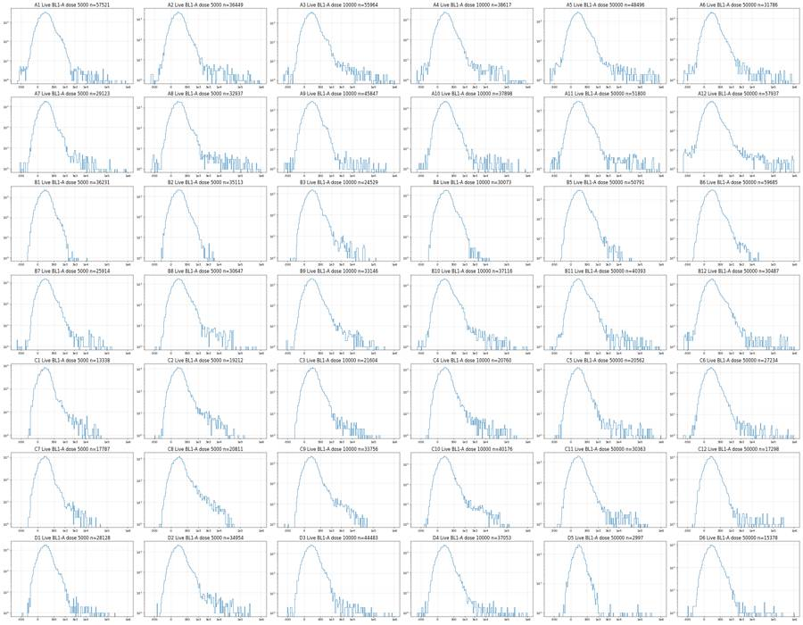
106
tool call · Bash
cd /task/work; cat > qc4.py <<'EOF'
from common import *
import matplotlib; matplotlib.use('Agg'); import matplotlib.pyplot as plt
fig,axs=plt.subplots(7,6,figsize=(36,30))
for k,w in enumerate(lay.well):
d=load(w); c,s=gates(d); T=d['Time']/1000.; nb=int(np.ceil(T.max()/2)); b=np.minimum((T/2).astype(int),nb-1)
ax=axs.ravel()[k]
def binmed(x,m):
out=np.full(nb,np.nan)
for i in range(nb):
mm=m&(b==i)
if mm.sum()>50: out[i]=np.median(x[mm])
return out
all_=np.ones(len(T),bool); t=np.arange(nb)*2+1
for lab,x,m in [('FSC-A all',d['FSC-A'],all_),('SSC-A all',d['SSC-A'],all_),('RL3-A sing',d['RL3-A'],s),('VL1-A sing',d['VL1-A'],s),('BL1-A sing',d['BL1-A'],s)]:
y=binmed(x,m); ax.plot(t,y/np.nanmedian(y),label=lab,lw=1)
n=np.bincount(b,minlength=nb); fc=np.bincount(b,weights=c,minlength=nb)/np.maximum(n,1); fs=np.bincount(b,weights=s,minlength=nb)/np.maximum(np.bincount(b,weights=c,minlength=nb),1)
L=s&(d['RL3-A']<1500); fl=np.bincount(b,weights=L,minlength=nb)/np.maximum(np.bincount(b,weights=s,minlength=nb),1)
ax.plot(t,fc/np.median(fc),'k--',lw=1,label='frac Cells'); ax.plot(t,fs/np.median(fs),'k:',lw=1,label='frac Singlets'); ax.plot(t,fl/np.median(fl),'m--',lw=1,label='frac Live')
ax.set_ylim(0.4,1.8); ax.set_title(w,fontsize=16); ax.grid(alpha=.4)
if k==0: ax.legend(fontsize=8)
fig.tight_layout(); fig.savefig('drift.png',dpi=40)
EOF
python3 qc4.py107
tool output
(Bash completed with no output)
108
agent
Checking signal stability over time in every well (scatter, Zombie, NCAM, GFP medians and gate fractions) to decide which wells to flag.
109
tool call · Read
{
"file_path": "/task/work/drift.png"
}110
tool output
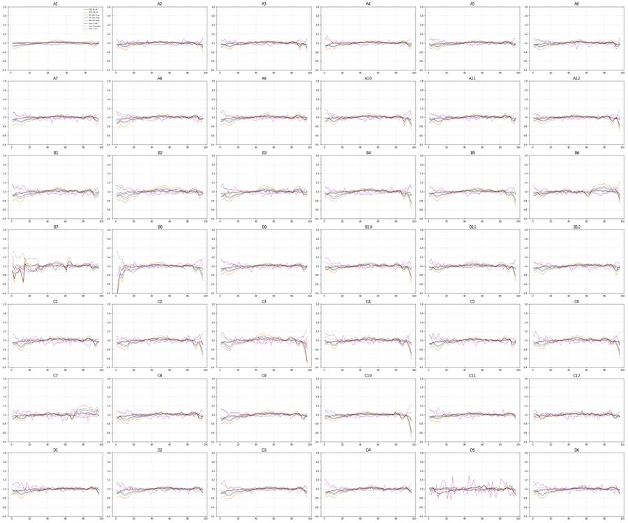
112
tool call · Bash
cd /task/work; cat > qc5.py <<'EOF'
from common import *
rows=[]
for k,w in enumerate(lay.well):
d=load(w); T=d['Time']/1000.; c,s=gates(d)
bw=1.0; e=np.arange(0,T.max()+bw,bw); h,_=np.histogram(T,bins=e); h=h[:-1] if (T.max()-e[-2])<0.5*bw else h # drop partial last bin
full=h; med=np.median(full); rel=full/med
# end tail: last consecutive bins below 0.75
i=len(rel);
while i>0 and rel[i-1]<0.75: i-=1
tail_start=e[i]; n_tail=(T>=tail_start).sum()
# start
j=0
while j<len(rel) and rel[j]<0.75: j+=1
low=np.where(rel<0.75)[0]; mid=[x for x in low if j<=x<i]
hi=np.where(rel>1.3)[0]
cv=np.std(full[5:-8])/np.mean(full[5:-8])
# cells fraction in tail vs body
tl=T>=tail_start
rows.append(dict(well=w,n=len(T),dur=round(T.max(),1),med_rate=med,cv_mid=round(cv,3),start_low_s=j*bw,tail_s=round(T.max()-tail_start,1) if i<len(rel) else 0,tail_ev_pct=round(100*n_tail/len(T),2) if i<len(rel) else 0,min_rel_tail=round(rel[i:].min(),2) if i<len(rel) else np.nan,last1s_rel=round(rel[-1],2),
n_mid_low=len(mid),mid_low_t=str([int(e[x]) for x in mid][:8]),n_hi=len(hi),hi_t=str([int(e[x]) for x in hi][:8]),
cells_frac_body=round(100*c[~tl].mean(),1),cells_frac_tail=round(100*c[tl].mean(),1) if tl.sum()>0 and i<len(rel) else np.nan))
df=pd.DataFrame(rows); pd.set_option('display.width',300); print(df.to_string()); df.to_csv('qc5.csv',index=False)
EOF
python3 qc5.py113
tool output
well n dur med_rate cv_mid start_low_s tail_s tail_ev_pct min_rel_tail last1s_rel n_mid_low mid_low_t n_hi hi_t cells_frac_body cells_frac_tail 0 A1 978726 46.200001 21595.0 0.034 0.0 0.0 0.00 NaN 0.91 0 [] 0 [] 62.8 NaN 1 A2 935707 97.900002 9733.0 0.048 0.0 0.9 0.73 0.71 0.71 0 [] 0 [] 60.7 53.4 2 A3 925910 97.699997 9724.0 0.053 0.0 2.7 1.83 0.40 0.40 0 [] 0 [] 60.6 55.7 3 A4 892332 97.699997 9275.0 0.040 0.0 0.7 0.68 0.66 0.66 0 [] 0 [] 62.2 60.4 4 A5 986514 97.900002 10264.5 0.043 0.0 0.0 0.00 NaN 0.85 1 [93] 0 [] 60.8 NaN 5 A6 755396 97.099998 7917.0 0.046 0.0 0.0 0.00 NaN 0.90 1 [92] 0 [] 61.9 NaN 6 A7 848859 97.900002 8840.5 0.045 0.0 0.0 0.00 NaN 0.88 0 [] 0 [] 58.5 NaN 7 A8 710140 97.900002 7367.0 0.039 3.0 0.0 0.00 NaN 0.83 1 [93] 0 [] 60.3 NaN 8 A9 958681 97.800003 9965.5 0.042 0.0 0.0 0.00 NaN 0.75 0 [] 0 [] 57.0 NaN 9 A10 870505 97.699997 9118.5 0.063 0.0 2.7 1.82 0.40 0.40 1 [86] 0 [] 58.6 52.0 10 A11 844586 97.900002 8744.5 0.044 0.0 0.0 0.00 NaN 0.94 0 [] 0 [] 56.5 NaN 11 A12 947510 97.900002 9855.5 0.052 0.0 2.9 1.83 0.46 0.46 0 [] 0 [] 58.0 50.0 12 B1 733754 97.900002 7646.0 0.046 0.0 0.0 0.00 NaN 0.97 1 [92] 0 [] 53.0 NaN 13 B2 728886 97.900002 7524.5 0.049 0.0 0.0 0.00 NaN 0.85 0 [] 0 [] 53.7 NaN 14 B3 667298 97.900002 6955.0 0.047 0.0 0.0 0.00 NaN 0.92 0 [] 0 [] 53.8 NaN 15 B4 598212 97.900002 6265.0 0.052 0.0 3.9 2.44 0.40 0.40 0 [] 0 [] 53.4 45.1 16 B5 837561 97.900002 8770.0 0.052 0.0 2.9 1.85 0.48 0.48 0 [] 0 [] 56.0 47.7 17 B6 877336 97.800003 9066.0 0.044 0.0 3.8 2.42 0.37 0.37 0 [] 0 [] 54.0 48.8 18 B7 954909 97.900002 10176.5 0.207 8.0 0.0 0.00 NaN 0.77 5 [11, 12, 13, 58, 61] 6 [14, 15, 16, 29, 30, 31] 55.0 NaN 19 B8 918778 97.800003 9969.0 0.139 8.0 3.8 2.62 0.39 0.39 0 [] 4 [9, 10, 11, 12] 56.4 48.9 20 B9 862070 98.000000 8863.5 0.039 0.0 0.0 0.00 NaN 0.93 0 [] 0 [] 57.6 NaN 21 B10 1083648 97.800003 11369.0 0.053 0.0 2.8 1.69 0.38 0.38 0 [] 0 [] 56.9 46.3 22 B11 988574 97.900002 10299.0 0.052 0.0 3.9 2.71 0.50 0.50 0 [] 0 [] 56.7 49.2 23 B12 904103 97.800003 9356.0 0.040 0.0 0.8 0.69 0.67 0.67 0 [] 0 [] 56.3 54.0 24 C1 624718 97.800003 6449.5 0.035 0.0 0.0 0.00 NaN 0.82 0 [] 0 [] 52.2 NaN 25 C2 695572 97.800003 7286.0 0.049 0.0 3.8 2.32 0.35 0.35 0 [] 0 [] 52.5 43.1 26 C3 656321 97.699997 6952.0 0.050 0.0 4.7 2.52 0.20 0.20 0 [] 0 [] 52.4 40.4 27 C4 679504 97.800003 7151.0 0.048 0.0 4.8 2.87 0.31 0.31 0 [] 0 [] 54.2 45.7 28 C5 689593 97.900002 7134.0 0.039 … [2,814 more characters not shown]
115
tool call · Bash
cd /task/work; cat > qc6.py <<'EOF'
from common import *
np.set_printoptions(linewidth=250)
for w in ['B7','B8','B9','A1','A2']:
d=load(w); T=d['Time']/1000.; c,s=gates(d); L=s&(d['RL3-A']<1500); G=L&(d['BL1-A']>2000)
h,e=np.histogram(T,bins=np.arange(0,np.ceil(T.max())+1,1.0)); print(w,'events/s per 1-s bin:'); print(h)
segs=[(0,10),(10,20),(20,35),(35,57),(57,66),(66,98)] if w!='A1' else [(0,10),(10,20),(20,30),(30,40),(40,47)]
for a,b in segs:
m=(T>=a)&(T<b); print(f' {a}-{b}s n={m.sum()} rate={m.sum()/(b-a):.0f}/s cells%={100*c[m].mean():.1f} sing%ofcells={100*s[m].sum()/max(c[m].sum(),1):.1f} live%ofsing={100*L[m].sum()/max(s[m].sum(),1):.2f} gfp%oflive={100*G[m].sum()/max(L[m].sum(),1):.2f} medFSC={np.median(d["FSC-A"][m]):.0f} medSSC={np.median(d["SSC-A"][m]):.0f} medRL3sing={np.median(d["RL3-A"][m&s]):.0f} medVL1sing={np.median(d["VL1-A"][m&s]):.0f} medFSCW={np.median(d["FSC-W"][m]):.0f}')
EOF
python3 qc6.py116
tool output
B7 events/s per 1-s bin: [ 312 1784 1782 1821 5517 6581 4917 6822 8594 9558 8165 6766 5301 5149 13961 13981 13534 12951 12634 12010 11906 11683 11635 11366 11272 11228 11216 11192 11099 14671 17476 16078 12973 10943 10853 10773 10834 10200 10448 10885 10512 10820 10656 10803 10524 10464 10329 10538 9371 9611 10284 10091 9118 10867 10153 8289 10261 9119 7629 7831 8400 3885 10734 11839 10202 10850 9827 9072 10134 9651 10078 9691 9773 9211 10035 9557 9991 9950 9835 10384 10601 10775 10821 10841 10816 10535 10257 10088 9548 9016 8948 9018 8687 8673 8729 8542 9976 7798] 0-10s n=47688 rate=4769/s cells%=49.2 sing%ofcells=80.3 live%ofsing=7.13 gfp%oflive=0.15 medFSC=95780 medSSC=106324 medRL3sing=12178 medVL1sing=3267 medFSCW=80 10-20s n=104452 rate=10445/s cells%=52.3 sing%ofcells=78.0 live%ofsing=6.64 gfp%oflive=0.28 medFSC=100630 medSSC=122066 medRL3sing=12641 medVL1sing=3498 medFSCW=80 20-35s n=185591 rate=12373/s cells%=52.0 sing%ofcells=73.4 live%ofsing=6.80 gfp%oflive=0.46 medFSC=100309 medSSC=113985 medRL3sing=12266 medVL1sing=3520 medFSCW=80 35-57s n=225831 rate=10265/s cells%=57.5 sing%ofcells=64.4 live%ofsing=7.28 gfp%oflive=0.33 medFSC=115991 medSSC=128915 medRL3sing=12034 medVL1sing=3531 medFSCW=83 57-66s n=80489 rate=8943/s cells%=57.4 sing%ofcells=64.1 live%ofsing=7.16 gfp%oflive=0.33 medFSC=115808 medSSC=130432 medRL3sing=12084 medVL1sing=3568 medFSCW=83 66-98s n=310858 rate=9714/s cells%=56.1 sing%ofcells=67.1 live%ofsing=7.45 gfp%oflive=0.34 medFSC=111506 medSSC=121684 medRL3sing=11944 medVL1sing=3472 medFSCW=83 B8 events/s per 1-s bin: [ 646 92 34 2202 6262 6101 5643 6008 11868 15194 14707 14229 13547 12266 11491 10976 10712 10268 10205 10103 10218 10095 10026 10089 9846 9990 10050 10154 10009 10028 9962 10143 10071 10075 10164 10237 10155 10094 10135 9992 10213 10223 10291 10368 10090 10202 10391 10098 10253 9987 9976 9840 9982 9776 9821 9549 9525 9254 9107 9125 9196 9351 9241 9391 9375 9569 9343 9250 9553 9460 9273 9485 9311 9355 9401 9722 9707 10262 10362 10477 10214 10401 10318 9806 9123 8486 8372 8481 9059 9164 9581 9655 10247 8576 7417 6548 6179 3909] 0-10s n=54050 rate=5405/s cells%=48.5 sing%ofcells=75.6 live%ofsing=8.75 gfp%oflive=0.46 medFSC=92994 medSSC=94223 medRL3sing=10873 medVL1sing=3101 medFSCW=79 10-20s n=118504 rate=11850/s cells%=53.5 sing%ofcells=73.0 live%ofsing=7.99 gfp%oflive=0.51 medFSC=104496 medSSC=115788 medRL3sing=11146 medVL1sing=3263 medFSCW=81 20-35s n=150920 rate=10061/s cells%=55.8 sing%ofcells=70.7 live%ofsing=8.23 gfp%oflive=0.53 medFSC=111650 medSSC=119644 medRL3sing=11167 medVL1sing=3375 medFSCW=82 35-57s n=221198 rate=10054/s cells%=58.9 sing%ofcells=68.2 live%ofsing=8.28 gfp%oflive=0.49 medFSC=119784 medSSC=133064 medRL3sing=11202 medVL1sing=3402 medFSCW=84 57-66s n=83609 rate=9290/s cells%=58.2 sing%ofcells=69.3 live%ofsing=8.22 gfp%oflive=0.58 medFSC=117671 medSSC=128883 medRL3sing=11195 medVL1sing=3377 medFSCW=83 66-98s n=290497 rate=9078/s cells%=56.3 sing%ofcells=72.0 live%ofsing=8.65 gfp%oflive=0.54 medFSC=112748 medSSC=120928 medRL3sing=11033 medVL1sing=3310 medFSCW=82 B9 events/s per 1-s bin: [7452 7490 7485 8362 8791 9094 9277 9384 9383 9122 8862 8718 8632 8590 8477 8688 8797 8478 8769 8667 8831 9003 9059 9176 9018 9051 9058 9121 8987 8919 9058 9147 9149 9126 9096 9261 9115 9262 9158 9206 9061 9142 9214 9325 9211 9182 9131 9278 9181 8865 9144 9041 9173 9105 9103 8846 8709 8797 8180 8475 8448 8220 8446 8154 8401 8398 8314 8286 8360 8777 8793 8539 8440 8427 8685 8370 8724 8375 8456 8563 8835 9135 9112 9447 9530 9409 9493 9215 9068 8938 8152 7661 7352 8005 8333 8625 9855 8247] 0-10s n=85840 rate=8584/s cells%=54.3 sing%ofcells=77.1 live%ofsing=10.18 gfp%oflive=0.49 medFSC=105666 medSSC=107393 medRL3sing=11514 medVL1sing=3071 medFSCW=81 10-20s n=86678 rate=8668/s cells%=54.3 sing%ofcells=74.4 live%ofsing=9.53 gfp%oflive=0.48 medFSC=106742 medSSC=111192 medRL3sing=11806 medVL1sing=3283 medFSCW=81 20-35s n=135799 rate=9053/s cells%=56.7 sing%ofcells=72.3 live%ofsing=9.16 gfp%oflive=0.71 medFSC=112616 medSSC=121464 medRL3sing=12011 medVL1sing=3288 medFSCW=82 35-57s n=200713 rate=9123/s cells%=59.2 sing%ofcells=69.7 live%ofsing=9.00 gfp%oflive=0.55 medFSC=119367 medSSC=132536 medRL3sing=12296 medVL1sing=3328 medFSCW=84 57-66s n=75519 rate=8391/s cells%=59.3 sing%ofcells=69.5 live%ofsing=9.09 gfp%oflive=0.60 medFSC=120141 medSSC=132786 medRL3sing=12192 medVL1sing=3317 medFSCW=84 66-98s n=277521 rate=8673/s cells%=58.5 sing%ofcells=71.9 live%ofsing=9.23 gfp%oflive=0.40 medFSC=117668 medSSC=129086 medRL3sing=12185 medVL1sing=3308 medFSCW=83 A1 events/s per 1-s bin: [22307 22801 22638 21745 21827 21956 21702 22281 21819 22324 22013 22065 22120 21826 21563 21851 21407 21386 22146 21667 22212 22230 21767 21608 22134 21548 21671 21331 20825 21582 20248 20418 20197 20379 20382 20682 20352 19608 19581 19568 19948 20535 18939 17413 19119 19631 5374] 0-10s n=221400 rate=22140/s cells%=60.8 sing%ofcells=59.7 live%ofsing=16.21 gfp%oflive=0.15 medFSC=123041 medSSC=144708 medRL3sing=6918 medVL1sing=3200 medFSCW=84 10-20s n=218044 rate=21804/s cells%=62.7 sing%ofcells=58.2 live%ofsing=15.90 gfp%oflive=0.16 medFSC=128741 medSSC=156132 medRL3sing=6984 medVL1sing=3232 medFSCW=85 20-30s n=216908 rate=21691/s cells%=64.5 sing%ofcells=56.9 live%ofsing=15.67 gfp%oflive=0.21 medFSC=134122 medSSC=166085 medRL3sing=7060 medVL1sing=3246 medFSCW=87 30-40s n=201415 rate=20142/s cells%=63.8 sing%ofcells=58.9 live%ofsing=15.92 gfp%oflive=0.15 medFSC=131930 medSSC=159838 medRL3sing=7024 medVL1sing=3166 medFSCW=86 40-47s n=120959 rate=17280/s cells%=61.9 sing%ofcells=60.5 live%ofsing=16.13 gfp%oflive=0.12 medFSC=126723 medSSC=149861 medRL3sing=6963 medVL1sing=3165 medFSCW=85 A2 events/s per 1-s bin: [ 9349 9050 9569 9867 10481 10666 10746 10799 10489 10311 10046 9891 9829 9771 9740 9752 9730 9879 9926 9833 … [1,453 more characters not shown]
118
tool call · Bash
cd /task/work; cat > qc7.py <<'EOF'
from common import *
rows=[]
for k,w in enumerate(lay.well):
d=load(w); c,s=gates(d); x=d['RL3-A'][s]; L=s&(d['RL3-A']<1500)
r=dict(well=w,dose=lay.dose_vg_per_cell[k],rep=lay.replicate[k],cells=100*c.mean(),sing=100*s.sum()/c.sum(),live=100*L.sum()/s.sum(),gfp=100*(L&(d['BL1-A']>2000)).sum()/L.sum(),nG=(L&(d['BL1-A']>2000)).sum())
r['RL3<-100 %sing']=100*(x<-100).mean(); r['RL3<0']=100*(x<0).mean(); r['RL3 0-300']=100*((x>=0)&(x<300)).mean(); r['RL3 300-1500']=100*((x>=300)&(x<1500)).mean()
r['BL1<-100 all']=100*(d['BL1-A']<-100).mean(); r['VL1<-100 all']=100*(d['VL1-A']<-100).mean(); r['RL3<-100 all']=100*(d['RL3-A']<-100).mean()
r['medRL3']=np.median(x); r['medVL1']=np.median(d['VL1-A'][s]); r['medVL1live']=np.median(d['VL1-A'][L]); r['medFSClive']=np.median(d['FSC-A'][L]); r['medSSClive']=np.median(d['SSC-A'][L])
r['RL3>3e4']=100*(x>3e4).mean()
rows.append(r)
df=pd.DataFrame(rows); pd.set_option('display.width',300); pd.set_option('display.max_columns',50); print(df.round(2).to_string())
EOF
python3 qc7.py119
tool output
well dose rep cells sing live gfp nG RL3<-100 %sing RL3<0 RL3 0-300 RL3 300-1500 BL1<-100 all VL1<-100 all RL3<-100 all medRL3 medVL1 medVL1live medFSClive medSSClive RL3>3e4 0 A1 5000 1 62.80 58.65 15.96 0.16 93 1.53 2.44 2.77 10.74 0.20 7.34 3.76 6992.0 3204.0 2342.0 127264.0 144272.0 3.31 1 A2 5000 2 60.64 70.89 9.06 0.40 147 0.39 1.11 2.48 5.47 0.15 1.61 1.09 7801.0 3438.0 2636.0 126865.0 134345.0 5.91 2 A3 10000 1 60.54 72.52 13.77 0.34 188 0.23 0.94 3.11 9.72 0.14 1.10 0.73 6817.0 3138.0 2103.0 126071.5 141866.5 3.61 3 A4 10000 2 62.15 72.21 9.64 0.49 190 0.30 0.87 2.33 6.44 0.22 1.17 1.10 8916.0 3452.0 2611.0 127543.0 139433.0 6.22 4 A5 50000 1 60.77 70.75 11.43 0.43 207 0.24 0.86 2.59 7.98 0.33 1.83 0.90 6546.0 3294.0 2302.0 125086.0 138893.5 4.08 5 A6 50000 2 61.86 76.31 8.91 0.51 163 0.18 0.72 2.11 6.09 0.26 0.69 0.62 8378.5 3345.0 2529.0 128248.0 142052.5 6.13 6 A7 5000 1 58.51 70.95 8.26 0.36 104 0.55 1.27 2.13 4.86 0.13 1.98 2.04 13893.0 3314.0 2979.0 127365.0 130779.0 12.41 7 A8 5000 2 60.28 75.32 10.22 0.51 168 0.24 0.77 2.95 6.49 0.18 0.80 0.90 11645.0 3238.0 3091.0 129723.0 136929.0 10.33 8 A9 10000 1 56.95 66.25 12.68 0.21 94 0.55 1.31 3.03 8.34 0.13 4.17 1.89 10438.0 3152.0 2332.0 125277.0 130343.0 8.18 9 A10 10000 2 58.51 70.12 10.61 0.32 122 0.32 0.94 3.01 6.66 0.18 2.88 1.32 9919.0 3333.0 3213.0 127677.0 133293.5 8.08 10 A11 50000 1 56.45 73.39 14.80 0.33 170 0.18 0.81 3.53 10.46 0.26 1.85 0.74 7487.0 3142.0 2265.0 124946.5 138514.5 4.85 11 A12 50000 2 57.85 71.14 14.86 0.49 281 0.10 0.56 3.05 11.24 0.41 2.25 0.46 5830.0 3087.0 1871.0 125731.0 140295.0 1.74 12 B1 5000 1 53.00 69.15 13.47 0.02 6 0.48 1.67 4.09 7.71 0.06 2.58 1.41 9817.0 3312.0 2796.0 128696.0 118160.0 7.09 13 B2 5000 2 53.70 69.88 12.84 0.04 14 0.61 1.70 3.60 7.54 0.05 1.65 1.88 10739.0 3135.0 2857.0 131018.0 121385.0 11.79 14 B3 10000 1 53.77 74.20 9.21 0.42 104 0.46 1.16 2.49 5.56 0.05 1.20 1.51 14093.5 3184.0 3285.0 130953.0 124229.0 16.49 15 B4 10000 2 53.17 77.23 12.24 0.09 27 0.36 1.17 3.54 7.53 0.05 0.39 1.04 10514.0 2777.0 2256.0 134598.0 130763.0 10.97 16 B5 50000 1 55.86 72.63 14.95 0.15 78 0.25 1.08 3.80 10.07 0.04 0.86 0.81 7465.0 2833.0 2111.0 132128.0 137848.0 4.20 17 B6 50000 2 53.87 70.58 17.89 0.12 70 0.27 1.18 4.19 12.51 0.04 2.05 0.76 6313.0 2957.0 2181.0 126442.0 137514.0 4.16 18 B7 5000 1 54.99 69.04 7.15 0.34 89 0.48 0.89 1.34 4.92 0.11 2.91 1.58 12139.0 3494.0 2993.0 121807.0 126205.0 10.87 19 B8 5000 2 56.17 70.90 8.38 0.52 160 0.26 0.65 1.67 6.06 0.05 1.56 1.16 11118.0 3329.0 2758.0 125606.0 128993.0 10.28 20 B9 10000 1 57.62 71.93 9.28 0.52 171 0.25 0.69 1.90 6.69 0.05 1.78 1.01 12081.0 3282.0 2871.0 124852.5 126812.5 12.03 21 B10 10000 2 56.72 68.56 8.81 0.40 150 0.27 0.64 1.52 6.65 0.13 2.40 1.36 10226.0 2998.0 2271.0 122331.0 131922.5 10.62 22 B11 50000 1 56.54 71.47 10.11 0.40 160 0.15 0.50 1.75 7.86 0.18 1.67 0.78 8288.0 3200.0 2350.0 125280.0 136880.0 6.29 23 B12 50000 2 56.29 72.55 8.26 0.54 164 0.17 0.54 1.60 6.11 0.36 1.72 0.75 8920.0 3448.0 2861.0 125279.0 135100.0 7.35 24 C1 5000 1 52.23 79.67 5.13 0.69 92 0.13 0.40 1.30 3.43 0.04 0.31 0.48 15110.0 3043.0 2982.5 127422.5 128967.5 17.28 25 C2 5000 2 52.29 76.81 6.88 0.85 164 0.18 0.55 1.70 4.63 0.05 0.61 0.74 13644.0 3068.0 3156.0 129080.0 130273.0 14.33 26 C3 10000 1 52.09 74.51 8.48 0.44 94 0.31 0.88 2.16 5.45 0.05 1.11 1.26 13909.0 3095.0 2936.0 129039.0 121691.5 15.81 27 C4 10000 2 53.94 76.55 7.40 0.60 124 0.13 0.46 1.64 5.30 0.05 0.80 0.59 11874.0 3190.0 2806.5 125275.5 130876.0 11.17 28 C5 50000 1 54.14 77.95 7.07 0.57 118 0.11 0.42 1.4 … [2,771 more characters not shown]
121
agent
Backgating the Zombie-negative events onto scatter — the "Live" events look mostly small, so I'm checking where the genuine live cells (NCAM-bright, GFP+) sit relative to my Cells polygon.
122
tool call · Bash
cd /task/work; cat > p14.py <<'EOF'
from common import *
import matplotlib; matplotlib.use('Agg'); import matplotlib.pyplot as plt
from matplotlib.colors import LogNorm, PowerNorm
ws=['A5','A12','B4','B9','C1','C8','D2','D5']
fig,axs=plt.subplots(4,8,figsize=(48,24))
P=np.array(CELLS+[CELLS[0]])
for k,w in enumerate(ws):
d=load(w); f=d['FSC-A']; s_=d['SSC-A']; r=d['RL3-A']; g=d['BL1-A']; v=d['VL1-A']
sets=[('all events',np.ones(len(f),bool)),('RL3<1500',r<1500),('RL3<1500 & NCAM>1e4',(r<1500)&(v>1e4)),('BL1>5000 (red: RL3<1500)',g>5000)]
for i,(lab,m) in enumerate(sets):
ax=axs[i,k]
if i<3: ax.hist2d(f[m],s_[m],bins=200,range=[[0,6e5],[0,6e5]],norm=PowerNorm(0.4))
else:
ax.scatter(f[m],s_[m],s=2,c='k'); mm=m&(r<1500); ax.scatter(f[mm],s_[mm],s=4,c='r'); ax.set_xlim(0,6e5); ax.set_ylim(0,6e5)
ax.plot(P[:,0],P[:,1],'r-' if i<3 else 'b-',lw=1); ax.set_title(f'{w} {lab} n={m.sum()}',fontsize=14); ax.grid(alpha=.3)
fig.tight_layout(); fig.savefig('backgate.png',dpi=38)
EOF
python3 p14.py123
tool output
(Bash completed with no output)
124
tool call · Read
{
"file_path": "/task/work/backgate.png"
}125
tool output
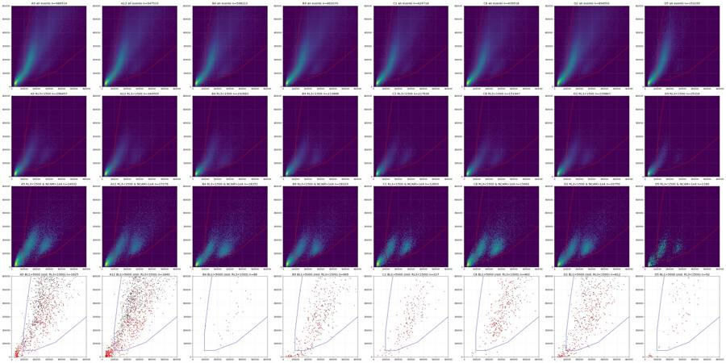
127
tool call · Bash
cd /task/work; python3 -c "
import flowkit as fk, inspect
print(fk.__version__)
print(inspect.signature(fk.Sample.__init__))
print(inspect.signature(fk.Dimension.__init__))
print(inspect.signature(fk.gates.RectangleGate.__init__)); print(inspect.signature(fk.gates.PolygonGate.__init__))
print(inspect.signature(fk.GatingStrategy.add_gate)); print(inspect.signature(fk.GatingStrategy.gate_sample))
print(inspect.signature(fk.export_gatingml)); print(inspect.signature(fk.parse_gating_xml))
print([m for m in dir(fk.GatingResults) if not m.startswith('_')])
"128
tool output (error)
Exit code 1 Traceback (most recent call last): File "<string>", line 9, in <module> AttributeError: module 'flowkit' has no attribute 'GatingResults' 1.2.3 (self, fcs_path_or_data, sample_id=None, filename_as_id=False, channel_labels=None, compensation=None, null_channel_list=None, ignore_offset_error=False, ignore_offset_discrepancy=False, use_header_offsets=False, cache_original_events=False, subsample=10000) (self, dimension_id, compensation_ref='uncompensated', transformation_ref=None, range_min=None, range_max=None) (self, gate_name, dimensions, use_complement=False) (self, gate_name, dimensions, vertices, use_complement=False) (self, gate, gate_path, sample_id=None) (self, sample, cache_events=False, verbose=False) (gating_strategy, file_handle, sample_id=None) (xml_file_or_path)
130
tool call · Bash
cd /task/work; sed -i 's/(350e3,110e3),(180e3,50e3)\]/(400e3,100e3),(180e3,50e3)]/' common.py; grep -n CELLS= common.py; cat > p15.py <<'EOF'
from common import *
rows=[]
for w in ['A5','A12','B9','B12','C2','C8','D2','D5','B1']:
d=load(w); c=inpoly(d['FSC-A'],d['SSC-A'],CELLS); si=inpoly(d['SSC-H'],d['SSC-A'],SING); r=d['RL3-A']; g=d['BL1-A']; v=d['VL1-A']
ratio=d['SSC-A']/np.maximum(d['SSC-H'],1)
for lab,m in [('cells',c),('cells RL3<1500',c&(r<1500)),('cells RL3<1500 NCAM>1e4',c&(r<1500)&(v>1e4)),('cells RL3<1500 GFP>2000',c&(r<1500)&(g>2000)),('cells GFP>2000',c&(g>2000)),('cells RL3<1500 GFP>1e4',c&(r<1500)&(g>1e4))]:
rows.append(dict(well=w,set=lab,n=m.sum(),sing_pct=round(100*si[m].mean(),1),med_ratio=round(np.median(ratio[m]),3),p90_ratio=round(np.percentile(ratio[m],90),3),medSSC=int(np.median(d['SSC-A'][m])),medFSC=int(np.median(d['FSC-A'][m]))))
pd.set_option('display.width',250); print(pd.DataFrame(rows).to_string())
EOF
python3 p15.py131
tool output
8:CELLS=[(95e3,50e3),(95e3,180e3),(130e3,450e3),(220e3,1.0e6),(1.0e6,1.0e6),(1.0e6,650e3),(600e3,300e3),(400e3,100e3),(180e3,50e3)] well set n sing_pct med_ratio p90_ratio medSSC medFSC 0 A5 cells 599559 70.7 1.268 2.105 219237 157042 1 A5 cells RL3<1500 62697 77.4 1.241 1.598 145223 130913 2 A5 cells RL3<1500 NCAM>1e4 15295 48.5 1.409 1.861 172525 186575 3 A5 cells RL3<1500 GFP>2000 418 49.5 1.463 1.815 305661 251791 4 A5 cells GFP>2000 2224 46.0 1.534 2.474 452576 264788 5 A5 cells RL3<1500 GFP>1e4 258 43.0 1.493 1.815 361776 274661 6 A12 cells 548110 71.1 1.269 2.072 217104 157726 7 A12 cells RL3<1500 74974 77.3 1.246 1.618 145286 131501 8 A12 cells RL3<1500 NCAM>1e4 15708 45.0 1.426 1.980 168506 231398 9 A12 cells RL3<1500 GFP>2000 559 50.3 1.447 1.835 277229 251134 10 A12 cells GFP>2000 2587 45.6 1.544 2.515 439922 263218 11 A12 cells RL3<1500 GFP>1e4 359 42.6 1.499 1.834 332650 277893 12 B9 cells 496750 71.9 1.267 2.035 211889 158929 13 B9 cells RL3<1500 44643 74.3 1.265 1.604 133198 133155 14 B9 cells RL3<1500 NCAM>1e4 16680 51.9 1.385 1.810 147790 196929 15 B9 cells RL3<1500 GFP>2000 288 60.1 1.388 1.753 239003 259435 16 B9 cells GFP>2000 1224 37.2 1.657 2.810 510882 305853 17 B9 cells RL3<1500 GFP>1e4 114 52.6 1.456 1.755 317583 290138 18 B12 cells 508962 72.6 1.266 2.012 216697 157191 19 B12 cells RL3<1500 40108 76.0 1.254 1.579 141339 131407 20 B12 cells RL3<1500 NCAM>1e4 13669 51.5 1.390 1.763 158104 173057 21 B12 cells RL3<1500 GFP>2000 359 46.0 1.472 1.860 283772 267944 22 B12 cells GFP>2000 2221 41.1 1.607 2.564 515386 279639 23 B12 cells RL3<1500 GFP>1e4 195 40.0 1.526 1.896 358399 286235 24 C2 cells 363728 76.8 1.250 1.844 208296 152478 25 C2 cells RL3<1500 26088 73.7 1.275 1.572 138458 137936 26 C2 cells RL3<1500 NCAM>1e4 11316 53.9 1.382 1.683 153413 214608 27 C2 cells RL3<1500 GFP>2000 399 41.1 1.508 1.817 264360 296325 28 C2 cells GFP>2000 821 28.7 1.635 2.505 391850 322910 29 C2 cells RL3<1500 GFP>1e4 154 29.2 1.562 1.867 333072 323081 30 C8 cells 330679 77.5 1.250 1.813 207019 153139 31 C8 cells RL3<1500 27647 75.3 1.266 1.575 140265 144476 32 C8 cells RL3<1500 NCAM>1e4 10828 54.7 1.378 1.709 153162 231166 33 C8 cells RL3<1500 GFP>2000 482 49.8 1.449 1.858 267439 283492 34 C8 cells GFP>2000 940 32.1 1.619 2.453 392943 319287 35 C8 cells RL3<1500 GFP>1e4 129 39.5 1.540 1.978 379299 319303 36 D2 cells 500081 73.0 1.261 1.996 215062 156141 37 D2 cells RL3<1500 45219 77.3 1.248 1.587 138878 133644 38 D2 cells RL3<1500 NCAM>1e4 14051 54.8 1.375 1.800 151034 231398 39 D2 cells RL3<1500 GFP>2000 304 53.0 1.450 1.860 287205 270601 40 D2 cells GFP>2000 1305 40.5 1.611 2.545 512739 291984 41 D2 cells RL3<1500 GFP>1e4 158 41.8 1.510 1.888 351200 309223 42 D5 cells 78960 92.9 1.218 1.388 198008 144042 43 D5 cells RL3<1500 3634 82.5 1.230 1.467 141249 135313 44 D5 cells RL3<1500 NCAM>1e4 1389 60.5 1.361 1.552 142708 154012 45 D5 cells RL3<1500 GFP>2000 47 38.3 1.498 1.957 319617 304455 46 D5 cells GFP>2000 150 53.3 1.497 1.948 466980 257226 47 D5 cells RL3<1500 GFP>1e4 35 40.0 1.498 1.962 322979 331031 48 B1 cells 389048 69.1 1.272 2.079 204729 157987 49 B1 cells RL3<1500 57316 63.3 1.309 1.818 125174 140816 50 B1 cells RL3<1500 NCAM>1e4 22631 41.3 1.434 2.029 139542 217161 51 B1 cells RL3<1500 GFP>2000 14 42.9 1.462 1.661 259508 268387 52 B1 cells GFP>2000 198 30.3 1.882 3.164 788141 334870 53 B1 cells RL3<1500 GFP>1e4 2 50.0 1.480 1.560 193184 260090
133
thinking
The first Singlets gate was tuned to dead cells and drops about half of the live GFP+ cells, which have broader SSC pulses. I'm re-checking the area/height ratio for those cells so I can widen the gate correctly.
134
tool call · Bash
cd /task/work; cat > p16.py <<'EOF'
from common import *
import matplotlib; matplotlib.use('Agg'); import matplotlib.pyplot as plt
from matplotlib.colors import PowerNorm
ws=['A12','B9','C2','C8','D2','D5']
fig,axs=plt.subplots(4,6,figsize=(36,24))
hh=np.linspace(2e4,7e5,50)
for k,w in enumerate(ws):
d=load(w); c=inpoly(d['FSC-A'],d['SSC-A'],CELLS); r=d['RL3-A']; g=d['BL1-A']; v=d['VL1-A']; H=d['SSC-H']; A=d['SSC-A']; ratio=A/np.maximum(H,1); f=d['FSC-A']
sets=[('Cells',c),('Cells RL3<1500 NCAM>1e4',c&(r<1500)&(v>1e4)),('Cells RL3<1500 FSC>220k',c&(r<1500)&(f>220e3)),('Cells GFP>2000 (red RL3<1500)',c&(g>2000))]
for i,(lab,m) in enumerate(sets):
ax=axs[i,k]
if i<3: ax.hist2d(H[m],ratio[m],bins=[100,120],range=[[0,7e5],[0.9,2.6]],norm=PowerNorm(0.4))
else:
ax.scatter(H[m],ratio[m],s=2,c='k'); mm=m&(r<1500); ax.scatter(H[mm],ratio[mm],s=5,c='r'); ax.set_xlim(0,7e5); ax.set_ylim(0.9,2.6)
ax.plot(hh,1.32+0.6e-6*hh,'r--',lw=1); ax.plot(hh,1.10+0.6e-6*hh,'w--' if i<3 else 'g--',lw=1)
ax.set_title(f'{w} {lab} n={m.sum()}',fontsize=13); ax.grid(alpha=.3); ax.set_yticks(np.arange(0.9,2.61,0.1))
fig.tight_layout(); fig.savefig('sing_live.png',dpi=40)
EOF
python3 p16.py135
tool output
(Bash completed with no output)
136
tool call · Read
{
"file_path": "/task/work/sing_live.png"
}137
tool output
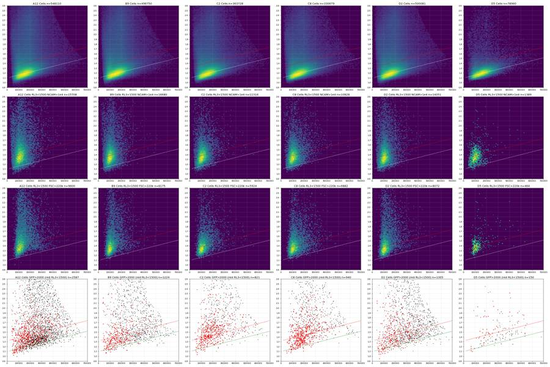
139
tool call · Bash
cd /task/work; python3 - <<'EOF'
import re
s=open('common.py').read()
i=s.index('_H=np.array')
s=s[:i]+'''_H=np.array([20e3,100e3,200e3,300e3,400e3,500e3,575e3])
_up=[(float(h),float(round((1.55+0.5e-6*h)*h,-2))) for h in _H]
SING=[(20e3,18e3)]+_up+[(1.06e6,1.06e6),(1.06e6,0.954e6)]
LIVE_MAX=1500.; GFP_MIN=2000.
def gates(d):
c=inpoly(d['FSC-A'],d['SSC-A'],CELLS)
s=c&inpoly(d['SSC-H'],d['SSC-A'],SING)
return c,s
'''
open('common.py','w').write(s)
EOF
python3 -c "
from common import *
print(SING)
rows=[]
for w in ['A12','B9','C2','D2','D5','B1','A1']:
d=load(w); c,s=gates(d); r=d['RL3-A']; g=d['BL1-A']; v=d['VL1-A']
L=s&(r<1500); G=L&(g>2000)
print(w,'cells%%',round(100*c.mean(),1),'sing%%',round(100*s.sum()/c.sum(),1),'live%%',round(100*L.sum()/s.sum(),2),'gfp%%',round(100*G.sum()/L.sum(),2),G.sum(),'| sing incl of live NCAM+:',round(100*s[c&(r<1500)&(v>1e4)].mean(),1),'of live GFP+:',round(100*s[c&(r<1500)&(g>2000)].mean(),1),'of live GFP>1e4:',round(100*s[c&(r<1500)&(g>1e4)].mean(),1))
"; python3 p12.py | tail -22140
tool output
[(20000.0, 18000.0), (20000.0, 31200.0), (100000.0, 160000.0), (200000.0, 330000.0), (300000.0, 510000.0), (400000.0, 700000.0), (500000.0, 900000.0), (575000.0, 1056600.0), (1060000.0, 1060000.0), (1060000.0, 954000.0)] A12 cells%% 57.8 sing%% 80.2 live%% 15.33 gfp%% 0.66 443 | sing incl of live NCAM+: 74.4 of live GFP+: 79.2 of live GFP>1e4: 77.4 B9 cells%% 57.6 sing%% 81.1 live%% 9.99 gfp%% 0.61 247 | sing incl of live NCAM+: 82.2 of live GFP+: 85.8 of live GFP>1e4: 86.0 C2 cells%% 52.3 sing%% 85.5 live%% 7.71 gfp%% 1.33 320 | sing incl of live NCAM+: 86.8 of live GFP+: 80.2 of live GFP>1e4: 72.7 D2 cells%% 55.9 sing%% 82.0 live%% 10.02 gfp%% 0.58 238 | sing incl of live NCAM+: 82.7 of live GFP+: 78.3 of live GFP>1e4: 74.7 D5 cells%% 51.5 sing%% 96.7 live%% 4.61 gfp%% 0.97 34 | sing incl of live NCAM+: 94.0 of live GFP+: 72.3 of live GFP>1e4: 71.4 B1 cells%% 53.0 sing%% 79.2 live%% 15.32 gfp%% 0.03 12 | sing incl of live NCAM+: 71.4 of live GFP+: 85.7 of live GFP>1e4: 100.0 A1 cells%% 62.8 sing%% 69.6 live%% 16.34 gfp%% 0.21 149 | sing incl of live NCAM+: 70.9 of live GFP+: 69.6 of live GFP>1e4: 69.2 40 D5 5216.75 0.09 0.22 2347.06 6807.52 2681.37 0.22 0.07 1573.71 3997.60 1377.23 0.38 0.04 1054.46 3499.39 3.69 4.61 5.32 6.86 41 D6 4566.69 0.29 0.55 2347.06 7776.44 1377.23 0.69 0.17 538.74 2681.37 1054.46 0.93 0.05 410.39 2347.06 3.50 5.25 6.95 10.13 ncam2e4_valley 3997.60 ncam2e4_v/livepk 0.35 ncam2e4_v/deadpk 0.47 ncam2e4_lo 2054.37 ncam2e4_hi 6807.52 ncam1e4_valley 1798.10 ncam1e4_v/livepk 0.69 ncam1e4_v/deadpk 0.19 ncam1e4_lo 616.64 ncam1e4_hi 3063.23 fsc200_valley 988.46 fsc200_v/livepk 0.89 fsc200_v/deadpk 0.07 fsc200_lo 410.39 fsc200_hi 2054.37 live%_1000 7.28 live%_1500 10.01 live%_2000 12.47 live%_3000 17.96 dtype: float64
142
tool call · Bash
cd /task/work; cat > p17.py <<'EOF'
from common import *
import matplotlib; matplotlib.use('Agg'); import matplotlib.pyplot as plt
from matplotlib.colors import PowerNorm, LogNorm
C=100.; tk=np.array([-300,0,300,1e3,2e3,5e3,1e4,1e5]); tl=['-300','0','300','1e3','2e3','5e3','1e4','1e5']
ws=['A3','A12','B4','B9','C2','C8','D2','D5']
fig,axs=plt.subplots(4,8,figsize=(48,24))
rng=[np.arcsinh(-8),np.arcsinh(3e5/C)]
for k,w in enumerate(ws):
d=load(w); c,s=gates(d); x=np.arcsinh(d['RL3-A'][s]/C);
for i,(ch,yr,tr) in enumerate([('SSC-A',(0,7e5),None),('FSC-A',(5e4,5e5),None),('VL1-A',None,'a')]):
y=d[ch][s]; ax=axs[i,k]
if tr: y=np.arcsinh(y/C); yr=rng
ax.hist2d(x,y,bins=[140,140],range=[rng,yr],norm=LogNorm() if i==0 else PowerNorm(0.35))
for cut in [1000,1500,2000,3000]: ax.axvline(np.arcsinh(cut/C),color='r' if cut==1500 else 'w',lw=0.6,ls='--')
ax.set_xticks(np.arcsinh(tk/C)); ax.set_xticklabels(tl); ax.set_title(f'{w} Singlets RL3 vs {ch}',fontsize=14)
if tr: ax.set_yticks(np.arcsinh(tk/C)); ax.set_yticklabels(tl)
ax=axs[3,k]
for lab,m,sc in [('all singlets /10',np.ones(len(x),bool),0.1),('FSC>220k',d['FSC-A'][s]>220e3,1),('NCAM>1e4',d['VL1-A'][s]>1e4,1)]:
h,e=np.histogram(x[m],bins=110,range=rng); ax.plot((e[:-1]+e[1:])/2,h*sc,label=lab)
h,e=np.histogram(x[d['FSC-A'][s]>220e3],bins=110,range=rng); ax.set_ylim(0,h[e[:-1]<np.arcsinh(10)].max()*3.5)
for cut in [1000,1500,2000,3000]: ax.axvline(np.arcsinh(cut/C),color='r' if cut==1500 else 'gray',lw=0.6,ls='--')
ax.set_xticks(np.arcsinh(tk/C)); ax.set_xticklabels(tl); ax.legend(); ax.grid(alpha=.3)
fig.tight_layout(); fig.savefig('live_cut.png',dpi=38)
EOF
python3 p17.py143
tool output
(Bash completed with no output)
144
agent
Re-checking the Live cut-off under the widened Singlets gate, with candidate lines at 1000/1500/2000/3000 overlaid.
145
tool call · Read
{
"file_path": "/task/work/live_cut.png"
}146
tool output
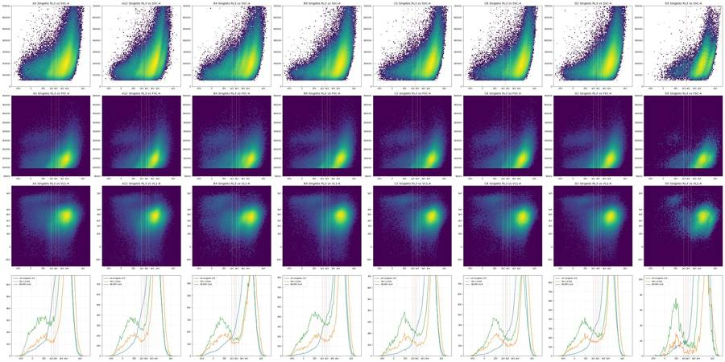
148
tool call · Bash
cd /task/work; cat > build.py <<'EOF'
import flowkit as fk, numpy as np, pandas as pd, os, sys
from common import CELLS, SING, LIVE_MAX, GFP_MIN, lay
OUT='/task/outputs'
gs=fk.GatingStrategy()
D=lambda ch,**kw: fk.Dimension(ch,compensation_ref='uncompensated',**kw)
gs.add_gate(fk.gates.PolygonGate('Cells',[D('FSC-A'),D('SSC-A')],[tuple(map(float,v)) for v in CELLS]),gate_path=('root',))
gs.add_gate(fk.gates.PolygonGate('Singlets',[D('SSC-H'),D('SSC-A')],[tuple(map(float,v)) for v in SING]),gate_path=('root','Cells'))
gs.add_gate(fk.gates.RectangleGate('Live',[D('RL3-A',range_max=float(LIVE_MAX))]),gate_path=('root','Cells','Singlets'))
gs.add_gate(fk.gates.RectangleGate('GFP_pos',[D('BL1-A',range_min=float(GFP_MIN))]),gate_path=('root','Cells','Singlets','Live'))
with open(f'{OUT}/gates.xml','wb') as fh: fk.export_gatingml(gs,fh)
gs2=fk.parse_gating_xml(f'{OUT}/gates.xml')
print(gs2.get_gate_ids())
pops=['Cells','Singlets','Live','GFP_pos']; parent={'Cells':'all_events','Singlets':'Cells','Live':'Singlets','GFP_pos':'Live'}
rows=[]
for f,w in zip(lay.file,lay.well):
s=fk.Sample(f'/task/inputs/raw/{f}',sample_id=f,ignore_offset_error=True)
res=gs2.gate_sample(s)
n={'all_events':s.event_count}
for p in pops: n[p]=int(res.get_gate_membership(p).sum())
rep=res.report.set_index('gate_name')
for p in pops:
assert int(rep.loc[p,'count'])==n[p]
par=n[parent[p]]
rows.append(dict(file=f,well=w,population=p,count=n[p],parent_population=parent[p],pct_of_parent=round(100*n[p]/par,4) if par>0 else 0.0))
print(w,n,flush=True)
df=pd.DataFrame(rows,columns=['file','well','population','count','parent_population','pct_of_parent'])
df.to_csv(f'{OUT}/counts.csv',index=False)
EOF
python3 build.py 2>&1 | tail -50149
tool output
[('Cells', ('root',)), ('Singlets', ('root', 'Cells')), ('Live', ('root', 'Cells', 'Singlets')), ('GFP_pos', ('root', 'Cells', 'Singlets', 'Live'))]
A1 {'all_events': 978726, 'Cells': 614674, 'Singlets': 427533, 'Live': 69863, 'GFP_pos': 149}
A2 {'all_events': 935707, 'Cells': 567466, 'Singlets': 453427, 'Live': 44594, 'GFP_pos': 232}
A3 {'all_events': 925910, 'Cells': 560518, 'Singlets': 453655, 'Live': 63145, 'GFP_pos': 263}
A4 {'all_events': 892332, 'Cells': 554628, 'Singlets': 447628, 'Live': 46162, 'GFP_pos': 299}
A5 {'all_events': 986514, 'Cells': 599561, 'Singlets': 477509, 'Live': 56824, 'GFP_pos': 341}
A6 {'all_events': 755396, 'Cells': 467285, 'Singlets': 393010, 'Live': 37621, 'GFP_pos': 270}
A7 {'all_events': 848859, 'Cells': 496727, 'Singlets': 397931, 'Live': 37648, 'GFP_pos': 174}
A8 {'all_events': 710140, 'Cells': 428059, 'Singlets': 356786, 'Live': 39282, 'GFP_pos': 252}
A9 {'all_events': 958681, 'Cells': 545997, 'Singlets': 416701, 'Live': 57347, 'GFP_pos': 143}
A10 {'all_events': 870505, 'Cells': 509403, 'Singlets': 404051, 'Live': 47061, 'GFP_pos': 196}
A11 {'all_events': 844586, 'Cells': 476796, 'Singlets': 392106, 'Live': 60295, 'GFP_pos': 276}
A12 {'all_events': 947510, 'Cells': 548112, 'Singlets': 439852, 'Live': 67434, 'GFP_pos': 443}
B1 {'all_events': 733754, 'Cells': 389049, 'Singlets': 308321, 'Live': 47234, 'GFP_pos': 12}
B2 {'all_events': 728886, 'Cells': 391590, 'Singlets': 311950, 'Live': 45565, 'GFP_pos': 28}
B3 {'all_events': 667298, 'Cells': 358870, 'Singlets': 298821, 'Live': 31326, 'GFP_pos': 168}
B4 {'all_events': 598212, 'Cells': 318194, 'Singlets': 272305, 'Live': 36026, 'GFP_pos': 40}
B5 {'all_events': 837561, 'Cells': 467909, 'Singlets': 382398, 'Live': 60305, 'GFP_pos': 123}
B6 {'all_events': 877336, 'Cells': 472697, 'Singlets': 379609, 'Live': 71547, 'GFP_pos': 140}
B7 {'all_events': 954909, 'Cells': 525177, 'Singlets': 414253, 'Live': 32628, 'GFP_pos': 132}
B8 {'all_events': 918778, 'Cells': 516111, 'Singlets': 414647, 'Live': 36915, 'GFP_pos': 236}
B9 {'all_events': 862070, 'Cells': 496750, 'Singlets': 402971, 'Live': 40276, 'GFP_pos': 247}
B10 {'all_events': 1083648, 'Cells': 614636, 'Singlets': 482400, 'Live': 44876, 'GFP_pos': 290}
B11 {'all_events': 988574, 'Cells': 558948, 'Singlets': 451600, 'Live': 47188, 'GFP_pos': 303}
B12 {'all_events': 904103, 'Cells': 508966, 'Singlets': 416168, 'Live': 36638, 'GFP_pos': 276}
C1 {'all_events': 624718, 'Cells': 326309, 'Singlets': 285740, 'Live': 16377, 'GFP_pos': 148}
C2 {'all_events': 695572, 'Cells': 363730, 'Singlets': 310997, 'Live': 23993, 'GFP_pos': 320}
C3 {'all_events': 656321, 'Cells': 341970, 'Singlets': 286198, 'Live': 27853, 'GFP_pos': 156}
C4 {'all_events': 679504, 'Cells': 366570, 'Singlets': 312343, 'Live': 25646, 'GFP_pos': 208}
C5 {'all_events': 689593, 'Cells': 373338, 'Singlets': 321411, 'Live': 24186, 'GFP_pos': 178}
C6 {'all_events': 891011, 'Cells': 480989, 'Singlets': 394734, 'Live': 32315, 'GFP_pos': 169}
C7 {'all_events': 649735, 'Cells': 321514, 'Singlets': 274734, 'Live': 22379, 'GFP_pos': 124}
C8 {'all_events': 639518, 'Cells': 330681, 'Singlets': 285163, 'Live': 25362, 'GFP_pos': 395}
C9 {'all_events': 801299, 'Cells': 436893, 'Singlets': 357465, 'Live': 40664, 'GFP_pos': 363}
C10 {'all_events': 927162, 'Cells': 520357, 'Singlets': 417895, 'Live': 46677, 'GFP_pos': 278}
C11 {'all_events': 868685, 'Cells': 488133, 'Singlets': 398511, 'Live': 36277, 'GFP_pos': 186}
C12 {'all_events': 578214, 'Cells': 314594, 'Singlets': 274312, 'Live': 20806, 'GFP_pos': 111}
D1 {'all_events': 800840, 'Cells': 428011, 'Singlets': 355084, 'Live': 33986, 'GFP_pos': 91}
D2 {'all_events': 894591, 'Cells': 500086, 'Singlets': 410005, 'Live': 41075, 'GFP_pos': 238}
D3 {'all_events': 915097, 'Cells': 500967, 'Singlets': 396270, 'Live': 53700, 'GFP_pos': 137}
D4 {'all_events': 925805, 'Cells': 523331, 'Singlets': 420055, 'Live': 44764, 'GFP_pos': 152}
D5 {'all_events': 153195, 'Cells': 78961, 'Singlets': 76376, 'Live': 3520, 'GFP_pos': 34}
D6 {'all_events': 726651, 'Cells': 398876, 'Singlets': 343872, 'Live': 18067, 'GFP_pos': 72}151
tool call · Bash
cd /task/work; cat > p18.py <<'EOF'
from common import *
import matplotlib; matplotlib.use('Agg'); import matplotlib.pyplot as plt
from matplotlib.colors import LogNorm
C=100.; tk=np.array([-300,0,300,1e3,2e3,5e3,1e4,1e5,1e6]); tl=['-300','0','300','1e3','2e3','5e3','1e4','1e5','1e6']
ws=['B1','B2','B4','B6','B5','D1','A9','A12','C8','B12','C2','D5']
fig,axs=plt.subplots(2,12,figsize=(60,12)); rng=[np.arcsinh(-5),np.arcsinh(1.05e6/C)]
rows=[]
for k,w in enumerate(ws):
d=load(w); c,s=gates(d); L=s&(d['RL3-A']<LIVE_MAX); g=d['BL1-A'][L]; y=d['SSC-A'][L]
ax=axs[0,k]; ax.hist2d(np.arcsinh(g/C),y,bins=[140,120],range=[rng,[0,1.05e6]],norm=LogNorm()); ax.axvline(np.arcsinh(GFP_MIN/C),color='r',lw=.8)
ax.set_xticks(np.arcsinh(tk/C)); ax.set_xticklabels(tl,fontsize=6); ax.set_title(f'{w} Live: BL1-A vs SSC-A',fontsize=14)
ax=axs[1,k]; ax.hist(np.arcsinh(g/C),bins=140,range=rng,histtype='step'); ax.set_yscale('log'); ax.axvline(np.arcsinh(GFP_MIN/C),color='r',lw=.8); ax.set_xticks(np.arcsinh(tk/C)); ax.set_xticklabels(tl,fontsize=6); ax.grid(alpha=.3)
rows.append(dict(well=w,nlive=L.sum(),p99=np.percentile(g,99),p999=np.percentile(g,99.9),p9995=np.percentile(g,99.95),**{f'>{c_}':int((g>c_).sum()) for c_ in [1000,1500,2000,2500,3000,5000]}))
fig.tight_layout(); fig.savefig('gfp_cut.png',dpi=36)
print(pd.DataFrame(rows).round(0).to_string())
EOF
python3 p18.py152
tool output
well nlive p99 p999 p9995 >1000 >1500 >2000 >2500 >3000 >5000 0 B1 47233 481.0 962.0 1200.0 43 18 12 7 6 2 1 B2 45564 539.0 1288.0 2274.0 81 38 28 22 16 6 2 B4 36026 703.0 2117.0 3868.0 139 59 40 32 24 13 3 B6 71546 626.0 4270.0 6738.0 289 177 140 119 99 56 4 B5 60304 726.0 3443.0 5936.0 289 160 123 88 68 38 5 D1 33985 660.0 18016.0 37050.0 149 99 91 81 76 62 6 A9 57344 620.0 26295.0 88698.0 211 158 143 133 129 105 7 A12 67432 969.0 443877.0 930315.0 659 512 443 411 389 333 8 C8 25361 3344.0 25896.0 36451.0 657 477 395 333 286 188 9 B12 36637 1447.0 417818.0 961099.0 608 353 276 229 214 173 10 C2 23993 3206.0 38387.0 62824.0 437 362 320 280 251 186 11 D5 3520 1691.0 493155.0 990184.0 40 37 34 33 32 27
153
tool call · Read
{
"file_path": "/task/work/gfp_cut.png"
}154
tool output
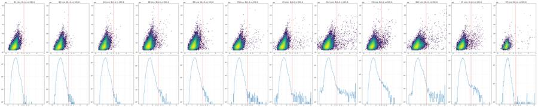
156
tool call · Bash
cd /task/work; cat > qc8.py <<'EOF'
from common import *
import hashlib
sig={}
for w in lay.well:
ev=np.load(f'npy_{w}.npy',mmap_mode='r')
a=np.asarray(ev[:2000,1:8]); b=np.asarray(ev[-2000:,1:8])
sig[w]=(hashlib.md5(a.tobytes()).hexdigest(),hashlib.md5(b.tobytes()).hexdigest(), set(map(tuple,np.asarray(ev[1000:6000,1:6]).tolist())))
ws=list(lay.well); n=0
for i in range(len(ws)):
for j in range(i+1,len(ws)):
sh=len(sig[ws[i]][2]&sig[ws[j]][2])
if sh>0 or sig[ws[i]][0]==sig[ws[j]][0]: print('shared',ws[i],ws[j],sh); n+=1
print('pairs with shared events:',n)
# saturation table
rows=[]
for w in lay.well:
d=load(w); r=dict(well=w)
for ch in ['FSC-A','SSC-A','SSC-H','BL1-A','RL3-A','VL1-A']: r[ch]=round(100*(d[ch]>=1048575).mean(),3)
r['any']=round(100*((d['FSC-A']>=1048575)|(d['SSC-A']>=1048575)|(d['BL1-A']>=1048575)|(d['RL3-A']>=1048575)|(d['SSC-H']>=1048575)).mean(),3)
rows.append(r)
df=pd.DataFrame(rows); print(df.describe().loc[['min','50%','max']]); df.to_csv('sat.csv',index=False)
EOF
python3 qc8.py157
tool output
pairs with shared events: 0
FSC-A SSC-A SSC-H BL1-A RL3-A VL1-A any
min 0.0020 0.0760 0.003 0.0000 0.000 0.000 0.0790
50% 0.0425 0.3915 0.010 0.0005 0.000 0.000 0.3955
max 0.3190 1.1740 0.030 0.0120 0.001 0.001 1.1760159
agent
Gates are saved and counts computed. Now writing the per-well flags with numeric evidence, then the notes.
160
tool call · Bash
cd /task/work; cat > flags.py <<'EOF'
from common import *
import flowio
cnt=pd.read_csv('/task/outputs/counts.csv'); sat=pd.read_csv('sat.csv').set_index('well')
rows=[]; summ=[]
for f,w in zip(lay.file,lay.well):
d=load(w); T=d['Time']/1000.; n=len(T); dur=T.max()
c=cnt[cnt.well==w].set_index('population')['count']
e=np.arange(0,np.floor(dur)+1,1.0); h,_=np.histogram(T,bins=e) # full 1-s bins only
med=np.median(h); rel=h/med
imin=int(np.argmin(h)); imax=int(np.argmax(h))
i=len(rel)
while i>0 and rel[i-1]<0.75: i-=1
tail_s=len(rel)-i; tail_pct=100*(T>=e[i]).sum()/n if tail_s>0 else 0.0
j=0
while j<len(rel) and rel[j]<0.75: j+=1
mid=h[5:len(h)-8]; cv=100*np.std(mid)/np.mean(mid)
fr=flowio.FlowData(f'/task/inputs/raw/{f}',only_text=True).text.get('#flowrate')
nrev=int((np.diff(d['Time'])<0).sum())
ev=(f"total {n} events; Cells {c['Cells']}, Singlets {c['Singlets']}, Live {c['Live']}, GFP_pos {c['GFP_pos']}; "
f"{dur:.0f} s run, median rate {med:.0f} ev/s (CV {cv:.0f}% over 5 s to end-8 s); "
f"min 1-s rate {h[imin]} ev/s at {imin}-{imin+1} s, max {h[imax]} ev/s at {imax}-{imax+1} s; "
f"last full second {100*rel[-1]:.0f}% of median")
if tail_s>0: ev+=f" (rate <75% of median for final {tail_s} s = {tail_pct:.1f}% of events)"
ev+=f"; at scale max: SSC-A {sat.loc[w,'SSC-A']:.2f}%, FSC-A {sat.loc[w,'FSC-A']:.2f}%, BL1-A {sat.loc[w,'BL1-A']:.3f}%, RL3-A {sat.loc[w,'RL3-A']:.3f}%"
usable='yes'; cat='ok'; extra=''; conf=''
if w=='B7':
usable='no'; cat='clog_or_interrupted_flow'; conf='confidence: high'
seg=lambda a,b:(T>=a)&(T<b)
extra=(f"; unstable flow for the first ~35 s: {h[0]} ev/s in second 0 and {h[1:4].mean():.0f} ev/s over 1-4 s (3-18% of median), {h[4:14].min()}-{h[4:14].max()} ev/s over 4-14 s, "
f"bursts of {h[14:19].min()}-{h[14:19].max()} ev/s at 14-19 s and {h[29:32].max()} ev/s at 29-32 s (up to {100*h.max()/med:.0f}% of median), then a second interruption at 61-62 s ({h[61]} ev/s); "
f"median FSC-A {np.median(d['FSC-A'][seg(0,35)]):.0f} before 35 s vs {np.median(d['FSC-A'][seg(35,98)]):.0f} after, so scatter shifts with the flow; {100*seg(0,35).mean():.0f}% of events fall in the unstable first 35 s")
if w=='B8':
usable='no'; cat='clog_or_interrupted_flow'; conf='confidence: medium'
seg=lambda a,b:(T>=a)&(T<b)
extra=(f"; flow blocked at the start: {h[0]}, {h[1]}, {h[2]} ev/s in seconds 0-3 (down to {100*h[2]/med:.1f}% of median), {h[3]} ev/s at 3-4 s, ~{h[4:8].mean():.0f} ev/s over 4-8 s, "
f"then a surge of {h[8:14].min()}-{h[8:14].max()} ev/s at 8-14 s ({100*h.max()/med:.0f}% of median) settling to ~10000 ev/s by ~17 s; "
f"median FSC-A {np.median(d['FSC-A'][seg(0,10)]):.0f} in 0-10 s vs {np.median(d['FSC-A'][seg(20,98)]):.0f} after 20 s; {100*seg(0,17).mean():.0f}% of events fall in the first 17 s; rest of run stable, hence medium")
if w=='A1':
extra=f"; note: acquired at {fr} uL/min (all other wells 100 uL/min), hence the short run and double event rate; rate itself is steady and gate fractions are within the plate range, kept"
if w=='D5':
extra="; note: lowest event count on plate (about 18% of the plate median) but the rate is steady for the whole run with no gap or burst; a sparse sample, not an acquisition fault; GFP_pos count is small, so its percentage is imprecise"
if nrev>0:
k=int(np.where(np.diff(d['Time'])<0)[0][0])+1
extra+=f"; note: file starts with a block of {k} events time-stamped {d['Time'][0]/1000:.2f}-{d['Time'][k-1]/1000:.2f} s written ahead of the 0 s events ({100*k/n:.2f}% of events, same scatter and fluorescence as the rest), which gives the apparent rate spike at 3-4 s; kept"
evid=ev+extra+('; '+conf if conf else '')
rows.append(dict(file=f,well=w,usable=usable,reason_category=cat,evidence=evid))
summ.append(dict(well=w,n=n,med=med,cv=cv,min=h.min(),tmin=imin,max=h.max(),tmax=imax,last=rel[-1],tail_s=tail_s,tail_pct=tail_pct,start_low=j))
df=pd.DataFrame(rows,columns=['file','well','usable','reason_category','evidence']); df.to_csv('/task/outputs/flags.csv',index=False)
s=pd.DataFrame(summ); pd.set_option('display.width',250); print(s.round(2).to_string())
for w in ['A1','B7','B8','C3','C6','D5']: print(df[df.well==w].evidence.values[0],'\n')
EOF
python3 flags.py161
tool output
well n med cv min tmin max tmax last tail_s tail_pct start_low 0 A1 978726 21595.0 3.42 17413 43 22801 1 0.91 0 0.00 0 1 A2 935707 9736.0 4.57 7499 95 10799 7 0.77 0 0.00 0 2 A3 925910 9731.0 5.11 6134 96 10654 7 0.63 2 1.83 0 3 A4 892332 9275.0 4.01 7735 92 10070 7 0.95 0 0.00 0 4 A5 986514 10269.0 4.34 7319 93 11297 7 0.93 0 0.00 0 5 A6 755396 7917.0 4.59 5864 92 8592 7 0.90 0 0.00 0 6 A7 848859 8848.0 4.49 6996 93 9594 6 0.83 0 0.00 0 7 A8 710140 7376.0 3.95 5351 1 7962 88 0.97 0 0.00 3 8 A9 958681 9968.0 4.19 7823 91 10923 6 1.00 0 0.00 0 9 A10 870505 9119.0 6.11 5696 96 10137 5 0.62 2 1.82 0 10 A11 844586 8749.0 4.39 7212 93 9747 85 1.00 0 0.00 0 11 A12 947510 9856.0 5.04 6004 96 11012 5 0.61 2 1.83 0 12 B1 733754 7648.0 4.41 5352 92 8350 7 1.04 0 0.00 0 13 B2 728886 7525.0 4.90 6130 92 8294 8 1.03 0 0.00 0 14 B3 667298 6958.0 4.74 5716 2 7468 84 0.94 0 0.00 0 15 B4 598212 6291.0 5.15 3531 96 6960 7 0.56 3 2.44 0 16 B5 837561 8770.0 5.20 5479 96 9646 7 0.62 2 1.85 0 17 B6 877336 9071.0 4.41 5269 96 10142 7 0.58 3 2.42 0 18 B7 954909 10200.0 20.70 312 0 17476 30 0.98 0 0.00 8 19 B8 918778 9976.0 13.90 34 2 15194 9 0.62 3 2.62 8 20 B9 862070 8865.0 3.91 7352 92 9867 96 1.11 0 0.00 0 21 B10 1083648 11374.0 5.11 6725 96 12541 5 0.59 2 1.69 0 22 B11 988574 10305.0 5.12 6908 96 11430 6 0.67 3 2.71 0 23 B12 904103 9356.0 3.83 7958 91 10284 7 0.96 0 0.00 0 24 C1 624718 6452.0 3.56 5270 92 7068 7 0.97 0 0.00 0 25 C2 695572 7296.0 4.89 4117 96 7898 6 0.56 3 2.32 0 26 C3 656321 6955.0 4.91 2687 96 7636 8 0.39 4 2.52 0 27 C4 679504 7153.0 4.69 3418 96 7826 7 0.48 4 2.87 0 28 C5 689593 7138.0 3.94 5835 0 7691 7 1.04 0 0.00 0 29 C6 891011 9307.0 4.68 4953 96 14018 3 0.53 3 2.25 0 30 C7 649735 6684.0 3.60 5463 1 7350 8 1.00 0 0.00 0 31 C8 639518 6612.0 3.93 5175 92 7167 8 1.00 0 0.00 0 32 C9 801299 8282.0 3.49 6717 0 8806 47 0.98 0 0.00 0 33 C10 927162 9771.0 5.19 5159 96 10901 6 0.53 4 2.78 0 34 C11 868685 9036.0 4.82 7641 96 12986 3 0.85 0 0.00 0 35 C12 578214 6042.0 5.58 4786 90 6850 95 0.83 0 0.00 0 36 D1 800840 8311.0 4.20 6976 96 9276 7 0.84 0 0.00 0 37 D2 894591 9291.0 4.31 7004 96 10032 7 0.75 0 0.00 0 38 D3 915097 9438.0 3.61 7848 95 10199 7 0.93 0 0.00 0 39 D4 925805 9581.0 3.93 7800 1 13397 3 0.92 0 0.00 0 40 D5 153195 1597.0 4.36 1186 1 1767 9 0.88 0 0.00 0 41 D6 726651 7560.0 5.00 6292 94 8323 7 0.86 0 0.00 0 total 978726 events; Cells 614674, Singlets 427533, Live 69863, GFP_pos 149; 46 s run, median rate 21595 ev/s (CV 3% over 5 s to end-8 s); min 1-s rate 17413 ev/s at 43-44 s, max 22801 ev/s at 1-2 s; last full second 91% of median; at scale max: SSC-A 1.17%, FSC-A 0.19%, BL1-A 0.001%, RL3-A 0.000%; note: acquired at 200 uL/min (all other wells 100 uL/min), hence the short run and double event rate; rate itself is steady and gate fractions are within the plate range, kept total 954909 events; Cells 525177, Singlets 414253, Live 32628, GFP_pos 132; 98 s run, median rate 10200 ev/s (CV 21% over 5 s to end-8 s); min 1-s rate 312 ev/s at 0-1 s, max 17476 ev/s at 30-31 s; last full second 98% of median; at scale max: SSC-A 0.56%, FSC-A 0.12%, BL1-A 0.000%, RL3-A 0.001%; unstable flow for the first ~35 s: 312 ev/s in second 0 and 1796 ev/s over 1-4 s (3-18% of median), 4917-9558 ev/s over 4-14 s, bursts of 12634-13981 ev/s at 14-19 s and 17476 ev/s at 29-32 s (up to 171% of median), then a second interruption at 61-62 s (3885 ev/s); median FSC-A 99751 before 35 s vs 113669 after, so scatter shifts with the flow; 35% of events fall in the unstable first 35 s; confidence: high total 918778 events; Cells 516111, Singlets 414647, Live 36915, GFP_pos 236; 98 s run, median rate 9976 ev/s (CV 14% over 5 s to end-8 s); min 1-s rate 34 ev/s at 2-3 s, max 15194 ev/s at 9-10 s; last full second 62% of median (rate <75% of median for final 3 s = 2.6% of events); at scale max: SSC-A 0.37%, FSC-A 0.04%, BL1-A 0.000%, RL3-A 0.000%; flow blocked at the start: 646, 92, 34 ev/s in seconds 0-3 (down to 0.3% of median), 2202 ev/s at 3-4 s, ~6004 ev/s over 4-8 s, then a surge of 11868-15194 ev/s at 8-14 s (152% of median) settling to ~10000 ev/s by ~17 s; median FSC-A 92994 in 0-10 s vs 115140 after 20 s; 15% of events fall in the first 17 s; rest of run stable, hence medium; confidence: medium total 656321 events; Cells 341970, Singlets 286198, … [1,386 more characters not shown]
163
tool call · Bash
cd /task/work; cat > summ.py <<'EOF'
from common import *
from scipy.ndimage import gaussian_filter1d
c=pd.read_csv('/task/outputs/counts.csv'); p=c.pivot(index='well',columns='population',values='pct_of_parent'); n=c.pivot(index='well',columns='population',values='count')
for col in ['Cells','Singlets','Live','GFP_pos']: print(col,'pct min/med/max',p[col].min().round(2),p[col].median().round(2),p[col].max().round(2),'| count min/med/max',n[col].min(),n[col].median(),n[col].max())
print(p.loc[['A1','D5','B7','B8','B1','B2']].round(2))
C=100.; rows=[]
for w in lay.well:
d=load(w); cc,s=gates(d); x=d['RL3-A'][s]; g=d['BL1-A'][s]; r=dict(well=w)
for lab,m in [('fsc220',d['FSC-A'][s]>220e3),('ncam1e4',d['VL1-A'][s]>1e4)]:
h,e=np.histogram(np.arcsinh(x[m]/C),bins=100,range=(np.arcsinh(-15),np.arcsinh(1e6/C))); ce=(e[:-1]+e[1:])/2; hs=gaussian_filter1d(h.astype(float),2.0)
rg=(ce>np.arcsinh(4))&(ce<np.arcsinh(80)); iv=np.argmin(np.where(rg,hs,np.inf)); r[lab]=C*np.sinh(ce[iv])
for cut in [1000,1500,2000]: r[f'live{cut}']=100*(x<cut).mean()
L=x<1500
for gc in [1500,2000,3000]: r[f'gfp{gc}']=100*(g[L]>gc).mean()
r['deadpk']=np.median(x[x>3000])
rows.append(r)
df=pd.DataFrame(rows).set_index('well'); print(df.describe().loc[['min','25%','50%','75%','max']].round(2))
print(df[['live1500','deadpk']].corr(method='spearman'))
EOF
python3 summ.py164
tool output
Cells pct min/med/max 49.48 55.88 62.8 | count min/med/max 78961 478892.5 614674
Singlets pct min/med/max 69.55 81.68 96.73 | count min/med/max 76376 393872.0 482400
Live pct min/med/max 4.61 10.01 18.85 | count min/med/max 3520 39779.0 71547
GFP_pos pct min/med/max 0.03 0.55 1.56 | count min/med/max 12 182.0 443
population Cells GFP_pos Live Singlets
well
A1 62.80 0.21 16.34 69.55
D5 51.54 0.97 4.61 96.73
B7 55.00 0.40 7.88 78.88
B8 56.17 0.64 8.90 80.34
B1 53.02 0.03 15.32 79.25
B2 53.72 0.06 14.61 79.66
fsc220 ncam1e4 live1000 live1500 ... gfp1500 gfp2000 gfp3000 deadpk
min 410.39 410.39 3.50 4.61 ... 0.04 0.03 0.01 7781.00
25% 1377.23 1092.14 6.11 8.83 ... 0.46 0.40 0.33 10280.25
50% 1573.71 1798.10 7.28 10.01 ... 0.63 0.55 0.46 12360.00
75% 1990.30 2054.37 9.35 12.90 ... 0.76 0.65 0.58 14328.00
max 3499.39 2681.37 14.35 18.85 ... 1.88 1.56 1.13 17787.00
[5 rows x 9 columns]
live1500 deadpk
live1500 1.000000 -0.453853
deadpk -0.453853 1.000000166
tool call · Bash
cd /task/work; cat > fig.py <<'EOF'
from common import *
import matplotlib; matplotlib.use('Agg'); import matplotlib.pyplot as plt
from matplotlib.colors import LogNorm
C=100.; tk=np.array([-300,0,300,1500,1e4,1e5,1e6]); tl=['-300','0','300','1.5e3','1e4','1e5','1e6']
tk2=np.array([-300,0,300,2000,1e4,1e5,1e6]); tl2=['-300','0','300','2e3','1e4','1e5','1e6']
ws=['B1','B2','A12','C2','D5','B9']
fig,axs=plt.subplots(4,6,figsize=(24,16)); rng=[np.arcsinh(-8),np.arcsinh(1.05e6/C)]
Pc=np.array(CELLS+[CELLS[0]]); Ps=np.array(SING+[SING[0]])
for k,w in enumerate(ws):
d=load(w); c,s=gates(d); L=s&(d['RL3-A']<LIVE_MAX); G=L&(d['BL1-A']>=GFP_MIN)
ax=axs[0,k]; ax.hist2d(d['FSC-A'],d['SSC-A'],bins=200,range=[[0,1.05e6],[0,1.05e6]],norm=LogNorm(),cmap='viridis'); ax.plot(Pc[:,0],Pc[:,1],'r-',lw=1.2)
ax.set_title(f'{w}: all events, Cells {100*c.mean():.1f}%'); ax.set_xlabel('FSC-A'); ax.set_ylabel('SSC-A')
ax=axs[1,k]; ax.hist2d(d['SSC-H'][c],d['SSC-A'][c],bins=200,range=[[0,1.05e6],[0,1.05e6]],norm=LogNorm(),cmap='viridis'); ax.plot(Ps[:,0],Ps[:,1],'r-',lw=1.2); ax.set_xlim(0,1.05e6); ax.set_ylim(0,1.05e6)
ax.set_title(f'Cells, Singlets {100*s.sum()/c.sum():.1f}%'); ax.set_xlabel('SSC-H'); ax.set_ylabel('SSC-A')
ax=axs[2,k]; ax.hist2d(np.arcsinh(d['RL3-A'][s]/C),d['SSC-A'][s],bins=[160,150],range=[rng,[0,1.05e6]],norm=LogNorm(),cmap='viridis'); ax.axvline(np.arcsinh(LIVE_MAX/C),color='r',lw=1.2)
ax.set_xticks(np.arcsinh(tk/C)); ax.set_xticklabels(tl); ax.set_title(f'Singlets, Live {100*L.sum()/s.sum():.1f}% (RL3-A < {LIVE_MAX:.0f})'); ax.set_xlabel('RL3-A Zombie NIR (asinh display)'); ax.set_ylabel('SSC-A')
ax=axs[3,k]; ax.hist2d(np.arcsinh(d['BL1-A'][L]/C),d['SSC-A'][L],bins=[160,150],range=[rng,[0,1.05e6]],norm=LogNorm(),cmap='viridis'); ax.axvline(np.arcsinh(GFP_MIN/C),color='r',lw=1.2)
ax.set_xticks(np.arcsinh(tk2/C)); ax.set_xticklabels(tl2); ax.set_title(f'Live, GFP_pos {100*G.sum()/L.sum():.2f}% (n={G.sum()}; BL1-A >= {GFP_MIN:.0f})'); ax.set_xlabel('BL1-A GFP (asinh display)'); ax.set_ylabel('SSC-A')
fig.tight_layout(); fig.savefig('/task/outputs/gates_overview.png',dpi=70)
# rate traces
fig,axs=plt.subplots(7,6,figsize=(24,22)); fl=pd.read_csv('/task/outputs/flags.csv').set_index('well')
for ax,w in zip(axs.ravel(),lay.well):
T=np.load(f'npy_{w}.npy',mmap_mode='r')[:,0]/1000.; h,e=np.histogram(T,bins=np.arange(0,T.max()+0.5,0.5))
bad=fl.loc[w,'usable']=='no'; ax.plot(e[:-1],h*2,lw=0.8,color='crimson' if bad else 'tab:blue'); ax.set_ylim(0,None); ax.set_title(f"{w}{' - flagged: '+fl.loc[w,'reason_category'] if bad else ''}",color='crimson' if bad else 'k')
ax.set_xlabel('Time (s)'); ax.set_ylabel('events/s')
fig.tight_layout(); fig.savefig('/task/outputs/qc_event_rate.png',dpi=60)
EOF
python3 fig.py167
tool output
(Bash completed with no output)
168
tool call · Read
{
"file_path": "/task/outputs/gates_overview.png"
}169
tool output
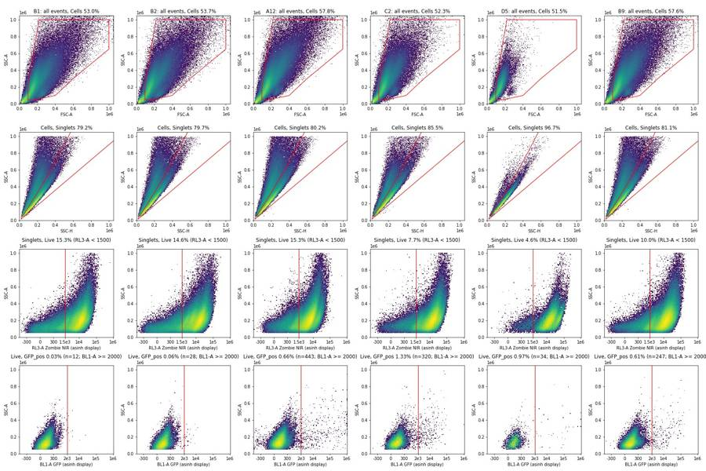
171
tool call · Write
{
"file_path": "/task/outputs/notes.md",
"content": "# Plate 230306 gating notes (FlowKit 1.2.3, uncompensated, one gate tree for all 42 wells)\n\n## Gates\nAll bounds are raw units, no transform, saved in `gates.xml` (reloads with `parse_gating_xml`; `counts.csv` comes from the reloaded file). `gates_overview.png` shows the gates on six wells.\n\n- **Cells** (PolygonGate, FSC-A x SSC-A; 49-63% of events). Left edge at FSC-A 95k: the valley between the debris peak (~30k) and the cell peak (~140k) sits at 77-107k in every well. Top and right edges stop at 1.0e6, so events piled at the scale maximum (1,048,575) are out. The lower-right edge was kept low enough to include the high-FSC / low-SSC cluster (FSC ~280k, SSC ~140k) that holds the Zombie-negative, NCAM-bright cells.\n- **Singlets** (PolygonGate, SSC-H x SSC-A; 70-97% of Cells). Band from SSC-A = 0.9 x SSC-H up to SSC-A = (1.55 + 0.5e-6 x SSC-H) x SSC-H. The bulk ridge has area/height ~1.15-1.2, but the Zombie-negative NCAM-bright cells and the GFP-bright cells sit at ~1.35-1.5. A tighter first draft (ridge + 0.22) removed about half of them, so the upper edge was raised; 70-94% of them are now kept.\n- **Live** (1-D RectangleGate, RL3-A < 1500; 4.6-18.9% of Singlets, median 10.0%). Most Singlets are Zombie NIR-positive (peak ~1e4); live cells are a minor population centred near 300. On all Singlets this is a shoulder, not a valley. The valley was read from RL3-A histograms and RL3-A vs FSC-A / vs VL1-A plots of Singlets restricted to FSC-A > 220k or VL1-A > 1e4: plate median 1.6e3 and 1.8e3, mostly 1.1e3-2.1e3, checked in all 42 wells. GFP-bright events are 10-50 times more frequent below this cut-off than above it, which supports calling the low side live. The count is sensitive to the cut-off: 1000 gives a median 7.3% and 2000 gives 12.5%. The Zombie-positive peak varies ~2-fold between wells (7.8e3-1.8e4), and wells with a dimmer peak tend to have more Live events (Spearman -0.45), so part of the well-to-well Live difference is staining intensity.\n- **GFP_pos** (1-D RectangleGate, BL1-A >= 2000; 0.03-1.56% of Live). Set on BL1-A vs SSC-A and BL1-A histograms of Live in B1 and B2, the wells with the fewest GFP-bright events: the negative population (median ~90) ends at 1.5e3-2e3, leaving 12 (0.03%) and 28 (0.06%) events above 2000. GFP_pos counts are small everywhere (12-443).\n\n## Quality control\nEvery well was screened on: event count; event rate in 1-s bins (start, mid-run gaps and bursts, end of run); Time monotonicity; medians of scatter and fluorescence and gate fractions in 2-s bins; % of events at the scale maximum; FCS keywords; shared events between files. See `qc_event_rate.png`.\n\n- **Unusable: B7 and B8** (`clog_or_interrupted_flow`). B7: unstable for ~35 s (312 to 17,476 events/s against a median of 10,200) and a second interruption at 61-62 s; scatter shifts with it. B8: almost no flow for 3 s (34 events/s), then a surge to 15,194 events/s; stable after ~17 s, so confidence is medium.\n- Kept, with a note in `flags.csv`:\n - A1 was acquired at 200 \u00b5L/min (others 100): steady rate, lowest Singlets fraction on the plate (69.6%).\n - D5 has 153,195 events (plate median ~860,000) at a steady rate; Live 3,520 and GFP_pos 34, so its percentage is imprecise.\n - C6, C11 and D4 each start with ~4,100-4,400 events time-stamped 3.3-3.9 s (0.5% of events).\n - Fourteen wells slow down in the last 2-4 s (1.7-2.9% of events); no well stopped early.\n- Saturation is negligible: SSC-A at most 1.17%, BL1-A at most 0.012%.\n\n## Deviations\n- Live and GFP_pos are 1-D rectangles on RL3-A and BL1-A (an accepted option), without the SSC-A range.\n- The Live cut-off was located on FSC-high and NCAM-high subsets of Singlets because all Singlets show no clear valley. The gate itself is applied to all Singlets.\n- The Singlets polygon is wider than a strictly narrow diagonal band, for the reason given above.\n"
}172
tool output
File created successfully at: /task/outputs/notes.md (file state is current in your context — no need to Read it back)
173
tool call · Bash
cd /task/work; python3 - <<'EOF'
import pandas as pd, flowkit as fk, numpy as np
c=pd.read_csv('/task/outputs/counts.csv'); f=pd.read_csv('/task/outputs/flags.csv'); lay=pd.read_csv('/task/inputs/plate_layout.csv')
print(c.shape, list(c.columns), c.population.value_counts().to_dict(), c.dtypes.to_dict())
print(f.shape, list(f.columns), f.usable.value_counts().to_dict(), f.reason_category.value_counts().to_dict())
assert list(f.file)==list(lay.file) and list(f.well)==list(lay.well) and set(c.file)==set(lay.file)
assert ((f.usable=='yes')==(f.reason_category=='ok')).all()
assert f[f.usable=='no'].evidence.str.contains(r'confidence: (high|medium|low)$').all()
assert c.pct_of_parent.between(0,100).all()
# parent consistency
p=c.pivot(index='file',columns='population',values='count'); assert (p.Cells>=p.Singlets).all() and (p.Singlets>=p.Live).all() and (p.Live>=p.GFP_pos).all()
gs=fk.parse_gating_xml('/task/outputs/gates.xml'); print(gs.get_gate_ids())
for gid,path in gs.get_gate_ids():
g=gs.get_gate(gid,path); print(gid,type(g).__name__,[(d.id,d.compensation_ref,d.transformation_ref,d.min,d.max) for d in g.dimensions], getattr(g,'vertices',None))
# spot recheck two wells from the saved file
for w in ['B1','D5']:
fn=lay[lay.well==w].file.values[0]; r=gs.gate_sample(fk.Sample('/task/inputs/raw/'+fn,ignore_offset_error=True)).report.set_index('gate_name')['count']
print(w,r.to_dict(),p.loc[fn].to_dict())
EOF
wc -w /task/outputs/notes.md; ls -la /task/outputs174
tool output
<stdin>:7: UserWarning: This pattern is interpreted as a regular expression, and has match groups. To actually get the groups, use str.extract.
(168, 6) ['file', 'well', 'population', 'count', 'parent_population', 'pct_of_parent'] {'Cells': 42, 'Singlets': 42, 'Live': 42, 'GFP_pos': 42} {'file': dtype('O'), 'well': dtype('O'), 'population': dtype('O'), 'count': dtype('int64'), 'parent_population': dtype('O'), 'pct_of_parent': dtype('float64')}
(42, 5) ['file', 'well', 'usable', 'reason_category', 'evidence'] {'yes': 40, 'no': 2} {'ok': 40, 'clog_or_interrupted_flow': 2}
[('Cells', ('root',)), ('Singlets', ('root', 'Cells')), ('Live', ('root', 'Cells', 'Singlets')), ('GFP_pos', ('root', 'Cells', 'Singlets', 'Live'))]
Cells PolygonGate [('FSC-A', 'uncompensated', None, None, None), ('SSC-A', 'uncompensated', None, None, None)] [[95000.0, 50000.0], [95000.0, 180000.0], [130000.0, 450000.0], [220000.0, 1000000.0], [1000000.0, 1000000.0], [1000000.0, 650000.0], [600000.0, 300000.0], [400000.0, 100000.0], [180000.0, 50000.0]]
Singlets PolygonGate [('SSC-H', 'uncompensated', None, None, None), ('SSC-A', 'uncompensated', None, None, None)] [[20000.0, 18000.0], [20000.0, 31200.0], [100000.0, 160000.0], [200000.0, 330000.0], [300000.0, 510000.0], [400000.0, 700000.0], [500000.0, 900000.0], [575000.0, 1056600.0], [1060000.0, 1060000.0], [1060000.0, 954000.0]]
Live RectangleGate [('RL3-A', 'uncompensated', None, None, 1500.0)] None
GFP_pos RectangleGate [('BL1-A', 'uncompensated', None, 2000.0, None)] None
B1 {'Cells': 389049, 'Singlets': 308321, 'Live': 47234, 'GFP_pos': 12} {'Cells': 389049, 'GFP_pos': 12, 'Live': 47234, 'Singlets': 308321}
D5 {'Cells': 78961, 'Singlets': 76376, 'Live': 3520, 'GFP_pos': 34} {'Cells': 78961, 'GFP_pos': 34, 'Live': 3520, 'Singlets': 76376}
645 /task/outputs/notes.md
total 908
drwxr-xr-x 2 root root 4096 Nov 10 19:31 .
drwxr-xr-x 5 root root 4096 Nov 10 19:14 ..
-rw-r--r-- 1 root root 11254 Nov 10 19:27 counts.csv
-rw-r--r-- 1 root root 17107 Nov 10 19:29 flags.csv
-rw-r--r-- 1 root root 4370 Nov 10 19:27 gates.xml
-rw-r--r-- 1 root root 572350 Nov 10 19:30 gates_overview.png
-rw-r--r-- 1 root root 3862 Nov 10 19:31 notes.md
-rw-r--r-- 1 root root 301243 Nov 10 19:30 qc_event_rate.png176
tool call · Bash
cd /task/work; python3 - <<'EOF'
from common import *
rows=[]
for w in lay.well:
d=load(w); c,s=gates(d); r=d['RL3-A']; g=d['BL1-A']; v=d['VL1-A']
lo=s&(r<1500); hi=s&(r>=1500)
rows.append(dict(well=w,n=len(r),gfp_lo=100*(g[lo]>1e4).mean(),gfp_hi=100*(g[hi]>1e4).mean(),keep_ncam=100*s[c&(r<1500)&(v>1e4)].mean(),keep_gfp=100*s[c&(r<1500)&(g>2000)].mean(),ngfp=(c&(r<1500)&(g>2000)).sum()))
df=pd.DataFrame(rows).set_index('well'); df['ratio']=df.gfp_lo/df.gfp_hi
print(df.describe().loc[['min','25%','50%','75%','max']].round(2)); print(df.loc[['B1','B2','B4','A1']].round(3)); print(np.median(df.n))
EOF177
tool output
/usr/local/lib/python3.12/site-packages/pandas/core/nanops.py:1016: RuntimeWarning: invalid value encountered in subtract
sqr = _ensure_numeric((avg - values) ** 2)
n gfp_lo gfp_hi keep_ncam keep_gfp ngfp ratio
min 153195.00 0.00 0.00 69.61 62.50 14.00 2.98
25% 699214.00 0.18 0.01 78.36 75.64 180.75 6.98
50% 855464.50 0.27 0.01 81.60 78.77 234.00 16.45
75% 924048.25 0.37 0.03 83.57 81.61 354.00 43.66
max 1083648.00 0.71 0.09 93.95 85.76 559.00 inf
n gfp_lo gfp_hi keep_ncam keep_gfp ngfp ratio
well
B1 733754 0.004 0.000 71.442 85.714 14 inf
B2 728886 0.002 0.000 70.906 71.795 39 inf
B4 598212 0.011 0.000 75.906 72.727 55 26.234
A1 978726 0.103 0.032 70.851 69.626 214 3.233
855464.5179
tool call · Write
{
"file_path": "/task/outputs/notes.md",
"content": "# Plate 230306 gating notes (FlowKit 1.2.3, uncompensated, one gate tree for all 42 wells)\n\n## Gates\nAll bounds are raw units with no transform, saved in `gates.xml`. `counts.csv` comes from the reloaded file. `gates_overview.png` shows the gates on six wells.\n\n- **Cells** (PolygonGate, FSC-A x SSC-A; 49-63% of events). Left edge at FSC-A 95k: the valley between the debris peak (~30k) and the cell peak (~140k) sits at 77-107k in every well. Top and right edges stop at 1.0e6, which excludes events at the scale maximum. The lower-right edge is low enough to include the high-FSC / low-SSC cluster that holds the Zombie-negative, NCAM-bright cells.\n- **Singlets** (PolygonGate, SSC-H x SSC-A; 70-97% of Cells). Band from SSC-A = 0.9 x SSC-H up to SSC-A = (1.55 + 0.5e-6 x SSC-H) x SSC-H. The bulk ridge has area/height ~1.15-1.2, but Zombie-negative NCAM-bright cells and GFP-bright cells sit at ~1.35-1.5. A tighter first draft removed about half of them, so the upper edge was raised; it now keeps a median 82% and 79% of them.\n- **Live** (1-D RectangleGate, RL3-A < 1500; 4.6-18.9% of Singlets, median 10.0%). Most Singlets are Zombie NIR-positive (peak ~1e4); live cells are a minor population centred near 300. On all Singlets this is a shoulder, not a valley. The valley was read from RL3-A histograms and RL3-A vs FSC-A / VL1-A plots of Singlets with FSC-A > 220k or VL1-A > 1e4, in all 42 wells: plate medians 1.6e3 and 1.8e3, interquartile range 1.1e3-2.1e3. Events with BL1-A > 1e4 are a median 16 times more frequent below the cut-off than above it, which supports calling the low side live. The count is sensitive to the cut-off: 1000 gives a median 7.3% and 2000 gives 12.5%. Zombie-positive intensity varies ~2-fold between wells, and dimmer wells tend to have more Live events (Spearman -0.45), so part of the Live difference between wells is staining intensity.\n- **GFP_pos** (1-D RectangleGate, BL1-A >= 2000; 0.03-1.56% of Live). Set on BL1-A vs SSC-A plots and BL1-A histograms of Live in B1 and B2, the wells with the fewest GFP-bright events: the negative population (median ~90) ends at 1.5e3-2e3, leaving 12 (0.03%) and 28 (0.06%) events above 2000. GFP_pos counts are small in every well (12-443).\n\n## Quality control\nEach well was screened on event count, event rate in 1-s bins (start, mid-run gaps and bursts, end of run), Time order, scatter and fluorescence medians and gate fractions in 2-s bins, % of events at the scale maximum, FCS keywords, and events shared between files. See `qc_event_rate.png`.\n\n- **Unusable: B7 and B8** (`clog_or_interrupted_flow`).\n - B7: unstable for ~35 s (312 to 17,476 events/s against a median of 10,200), a second interruption at 61-62 s, and scatter shifts with the flow. Confidence high.\n - B8: almost no flow for 3 s (down to 34 events/s), then a surge to 15,194 events/s; stable after ~17 s. Confidence medium.\n- Kept, with a note in `flags.csv`:\n - A1 was acquired at 200 \u00b5L/min (others 100). Its rate is steady; it has the lowest Singlets fraction on the plate (69.6%).\n - D5 has 153,195 events (plate median ~855,000) at a steady rate. Live is 3,520 and GFP_pos 34, so its percentage is imprecise.\n - C6, C11 and D4 each start with ~4,100-4,400 events time-stamped 3.3-3.9 s (0.5% of events).\n - Fourteen wells slow down in the last 2-4 s (1.7-2.9% of events). No well stopped early.\n- Saturation is negligible: SSC-A at most 1.17% of events, BL1-A at most 0.012%.\n\n## Deviations\n- Live and GFP_pos are 1-D rectangles on RL3-A and BL1-A (an accepted option), without an SSC-A range.\n- The Live cut-off was located on FSC-high and NCAM-high subsets of Singlets, because all Singlets show no clear valley. The gate is applied to all Singlets.\n- The Singlets polygon is wider than a strictly narrow diagonal band, for the reason given above.\n"
}180
tool output
The file /task/outputs/notes.md has been updated successfully. (file state is current in your context — no need to Read it back)
181
tool call · Bash
wc -w /task/outputs/notes.md; grep -c . /task/outputs/notes.md; head -3 /task/outputs/counts.csv; python3 -c "
import pandas as pd
f=pd.read_csv('/task/outputs/flags.csv'); print(f[f.usable=='no'][['well','reason_category']]); print(f.evidence.str.len().describe())"182
tool output
648 /task/outputs/notes.md 22 file,well,population,count,parent_population,pct_of_parent Serotype panel_2_Rep2_Group_A1.fcs,A1,Cells,614674,all_events,62.8035 Serotype panel_2_Rep2_Group_A1.fcs,A1,Singlets,427533,Cells,69.5544 well reason_category 18 B7 clog_or_interrupted_flow 19 B8 clog_or_interrupted_flow count 42.000000 mean 356.880952 std 107.039587 min 294.000000 25% 295.000000 50% 297.500000 75% 349.000000 max 712.000000 Name: evidence, dtype: float64
184
tool call · Bash
cd /task/outputs && python3 - <<'EOF'
s=open('notes.md').read()
rep=[
("All bounds are raw units with no transform, saved in `gates.xml`. `counts.csv` comes from the reloaded file. `gates_overview.png` shows the gates on six wells.",
"Bounds are raw units, no transform, saved in `gates.xml`; `counts.csv` comes from the reloaded file. `gates_overview.png` shows the gates on six wells."),
(" The lower-right edge is low enough to include the high-FSC / low-SSC cluster that holds the Zombie-negative, NCAM-bright cells.",
" The lower-right edge is low enough to include the high-FSC / low-SSC cluster of Zombie-negative, NCAM-bright cells."),
(" Most Singlets are Zombie NIR-positive (peak ~1e4); live cells are a minor population centred near 300. On all Singlets this is a shoulder, not a valley. The valley was read from RL3-A histograms and RL3-A vs FSC-A / VL1-A plots of Singlets with FSC-A > 220k or VL1-A > 1e4, in all 42 wells: plate medians 1.6e3 and 1.8e3, interquartile range 1.1e3-2.1e3.",
" Most Singlets are Zombie NIR-positive (peak ~1e4); live cells are a minor population near 300, a shoulder on all Singlets. The valley was read from RL3-A histograms of Singlets with FSC-A > 220k or VL1-A > 1e4, in all 42 wells: plate medians 1.6e3 and 1.8e3, interquartile range 1.1e3-2.1e3."),
(" Events with BL1-A > 1e4 are a median 16 times more frequent below the cut-off than above it, which supports calling the low side live.",
" Events with BL1-A > 1e4 are a median 16 times more frequent below the cut-off than above it, which supports the low side being live."),
(" Zombie-positive intensity varies ~2-fold between wells, and dimmer wells tend to have more Live events (Spearman -0.45), so part of the Live difference between wells is staining intensity.",
" Zombie-positive intensity varies ~2-fold between wells and dimmer wells have more Live events (Spearman -0.45), so part of the Live difference between wells is staining intensity."),
("Each well was screened on event count, event rate in 1-s bins (start, mid-run gaps and bursts, end of run), Time order, scatter and fluorescence medians and gate fractions in 2-s bins, % of events at the scale maximum, FCS keywords, and events shared between files. See `qc_event_rate.png`.",
"Each well was screened on event count, event rate in 1-s bins, Time order, signal medians and gate fractions in 2-s bins, % of events at the scale maximum, FCS keywords, and events shared between files. See `qc_event_rate.png`."),
(" Set on BL1-A vs SSC-A plots and BL1-A histograms of Live in B1 and B2, the wells with the fewest GFP-bright events:",
" Set on BL1-A histograms and BL1-A vs SSC-A plots of Live in B1 and B2, the wells with the fewest GFP-bright events:"),
]
for a,b in rep:
assert a in s, a[:40]; s=s.replace(a,b)
open('notes.md','w').write(s)
EOF
wc -w notes.md185
tool output
619 notes.md
186
agent
All 42 wells are gated with one FlowKit strategy; two wells are flagged unusable (B7 and B8, both interrupted flow). The saved `gates.xml` reloads, and `counts.csv` (168 rows) was computed from the reloaded file.
## Gates
| Population | Gate | Range across wells |
|---|---|---|
| Cells | polygon on FSC-A × SSC-A, left edge at FSC-A 95k, capped at 1.0e6 | 49–63% of events |
| Singlets | polygon band on SSC-H × SSC-A | 70–97% of Cells |
| Live | RL3-A < 1500 | 4.6–18.9% of Singlets (median 10.0%) |
| GFP_pos | BL1-A ≥ 2000 | 0.03–1.56% of Live (12–443 events) |
- **Live is the minority population.** Most Singlets are Zombie NIR-positive (peak near 1e4). The live cells are a small Zombie-negative cluster that is also NCAM-bright, higher in FSC, and where the GFP-bright events concentrate.
- **The Live cut-off is the least certain boundary.** All Singlets show a shoulder, not a valley, so I located the valley on FSC-high and NCAM-high subsets (plate medians 1.6e3 and 1.8e3). Moving the cut-off to 1000 or 2000 changes the median Live fraction to 7.3% or 12.5%.
- **The Singlets band is wider than a strictly narrow diagonal.** My first, tighter polygon removed about half of the live NCAM-bright and GFP-bright cells, which have a broader SSC pulse than the dead-cell bulk. The widened gate keeps about 80% of them.
- **GFP cut-off** was set on B1 and B2, the wells with the fewest GFP-bright events; they have 12 and 28 events above it.
## Flags
- **B7 (high confidence):** flow was unstable for about 35 s, ranging from 312 to 17,476 events/s against a median of 10,200, with a second interruption at 61–62 s. Scatter shifts with the flow.
- **B8 (medium confidence):** almost no flow for the first 3 s (down to 34 events/s), then a surge to 15,194 events/s. It is stable after about 17 s, which is why confidence is only medium.
Wells I kept but noted in `flags.csv`:
- **A1** was acquired at 200 µL/min while every other well ran at 100. Its rate is steady, and it has the lowest Singlets fraction on the plate (69.6%).
- **D5** has 153,195 events against a plate median of about 855,000, at a steady rate with no gap or burst. With 3,520 Live and 34 GFP_pos events its percentage is imprecise. I judged it a sparse sample, not an acquisition fault; if you apply a minimum-event rule, this is the well it would catch.
- **C6, C11 and D4** each start with a block of about 4,100–4,400 events time-stamped 3.3–3.9 s (0.5% of events).
- **Fourteen wells** slow down in the last 2–4 s (1.7–2.9% of events); none stopped early.
Saturation is negligible everywhere (SSC-A at most 1.17% of events).
## Deviations from `gating_strategy.md`
- Live and GFP_pos are 1-D rectangles without an SSC-A range (an accepted option).
- The Live valley was located on subsets, though the gate applies to all Singlets.
- The Singlets polygon is wider than "narrow", as explained above.
Files are in `/task/outputs/`:
- `counts.csv`
- `flags.csv`
- `notes.md`
- `gates.xml`
- `gates_overview.png`
- `qc_event_rate.png`
final result
All 42 wells are gated with one FlowKit strategy; two wells are flagged unusable (B7 and B8, both interrupted flow). The saved `gates.xml` reloads, and `counts.csv` (168 rows) was computed from the reloaded file. ## Gates | Population | Gate | Range across wells | |---|---|---| | Cells | polygon on FSC-A × SSC-A, left edge at FSC-A 95k, capped at 1.0e6 | 49–63% of events | | Singlets | polygon band on SSC-H × SSC-A | 70–97% of Cells | | Live | RL3-A < 1500 | 4.6–18.9% of Singlets (median 10.0%) | | GFP_pos | BL1-A ≥ 2000 | 0.03–1.56% of Live (12–443 events) | - **Live is the minority population.** Most Singlets are Zombie NIR-positive (peak near 1e4). The live cells are a small Zombie-negative cluster that is also NCAM-bright, higher in FSC, and where the GFP-bright events concentrate. - **The Live cut-off is the least certain boundary.** All Singlets show a shoulder, not a valley, so I located the valley on FSC-high and NCAM-high subsets (plate medians 1.6e3 and 1.8e3). Moving the cut-off to 1000 or 2000 changes the median Live fraction to 7.3% or 12.5%. - **The Singlets band is wider than a strictly narrow diagonal.** My first, tighter polygon removed about half of the live NCAM-bright and GFP-bright cells, which have a broader SSC pulse than the dead-cell bulk. The widened gate keeps about 80% of them. - **GFP cut-off** was set on B1 and B2, the wells with the fewest GFP-bright events; they have 12 and 28 events above it. ## Flags - **B7 (high confidence):** flow was unstable for about 35 s, ranging from 312 to 17,476 events/s against a median of 10,200, with a second interruption at 61–62 s. Scatter shifts with the flow. - **B8 (medium confidence):** almost no flow for the first 3 s (down to 34 events/s), then a surge to 15,194 events/s. It is stable after about 17 s, which is why confidence is only medium. Wells I kept but noted in `flags.csv`: - **A1** was acquired at 200 µL/min while every other well ran at 100. Its rate is steady, and it has the lowest Singlets fraction on the plate (69.6%). - **D5** has 153,195 events against a plate median of about 855,000, at a steady rate with no gap or burst. With 3,520 Live and 34 GFP_pos events its percentage is imprecise. I judged it a sparse sample, not an acquisition fault; if you apply a minimum-event rule, this is the well it would catch. - **C6, C11 and D4** each start with a block of about 4,100–4,400 events time-stamped 3.3–3.9 s (0.5% of events). - **Fourteen wells** slow down in the last 2–4 s (1.7–2.9% of events); none stopped early. Saturation is negligible everywhere (SSC-A at most 1.17% of events). ## Deviations from `gating_strategy.md` - Live and GFP_pos are 1-D rectangles without an SSC-A range (an accepted option). - The Live valley was located on subsets, though the gate applies to all Singlets. - The Singlets polygon is wider than "narrow", as explained above. Files are in `/task/outputs/`: - `counts.csv` - `flags.csv` - `notes.md` - `gates.xml` - `gates_overview.png` - `qc_event_rate.png`